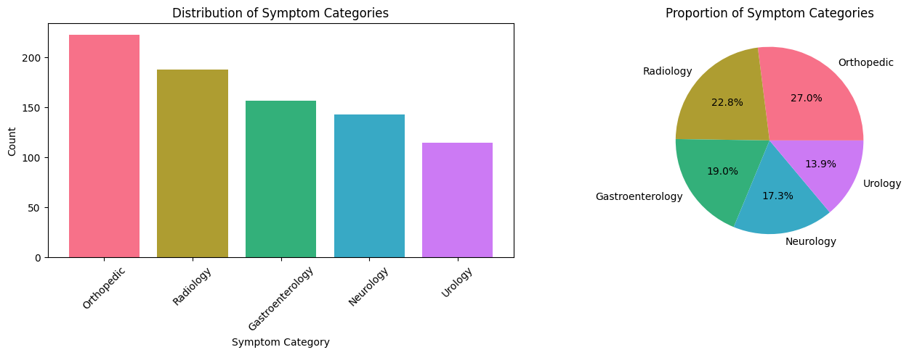
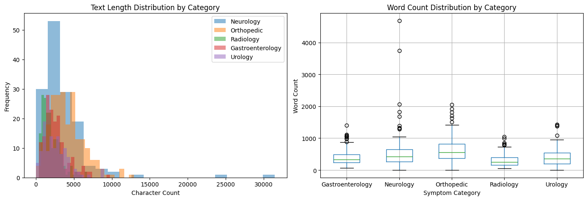
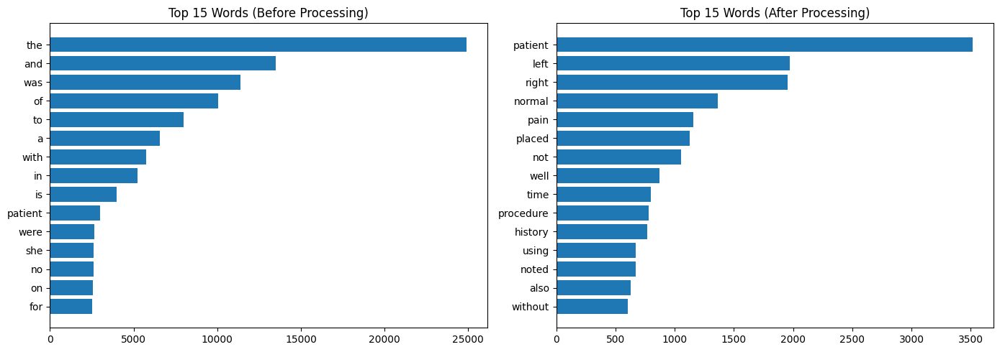
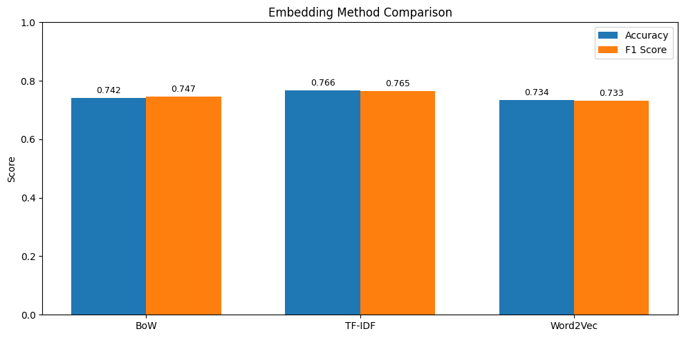
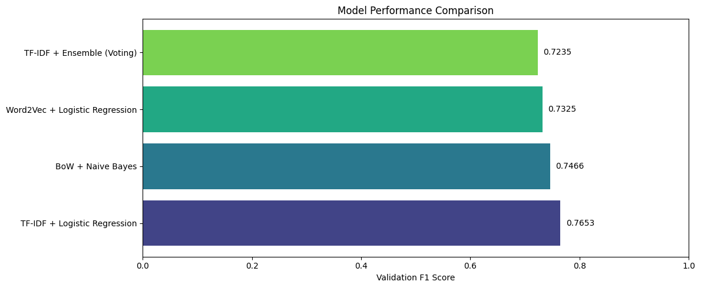
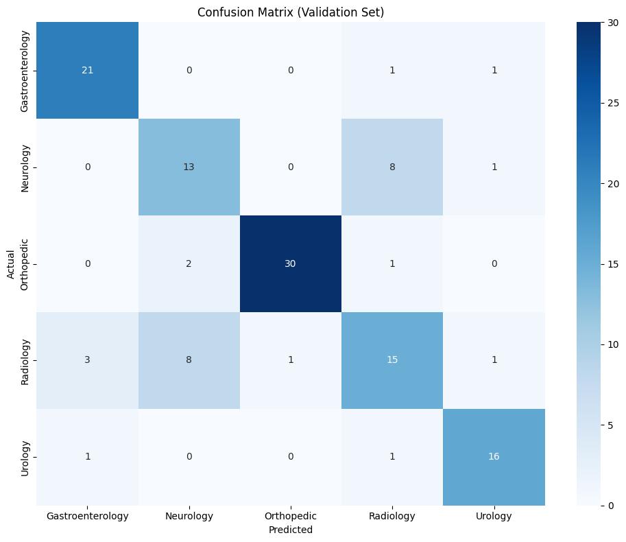
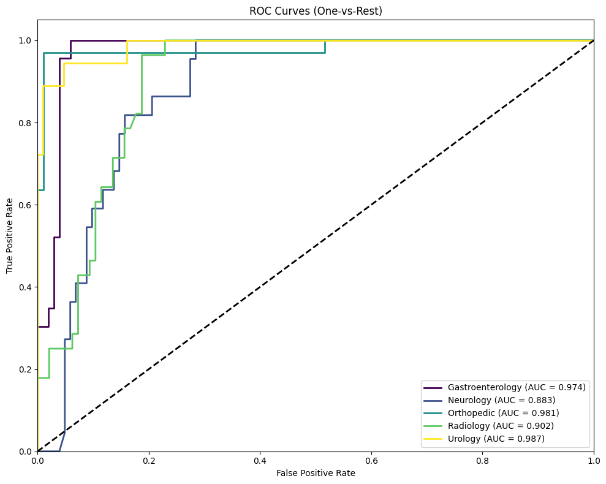
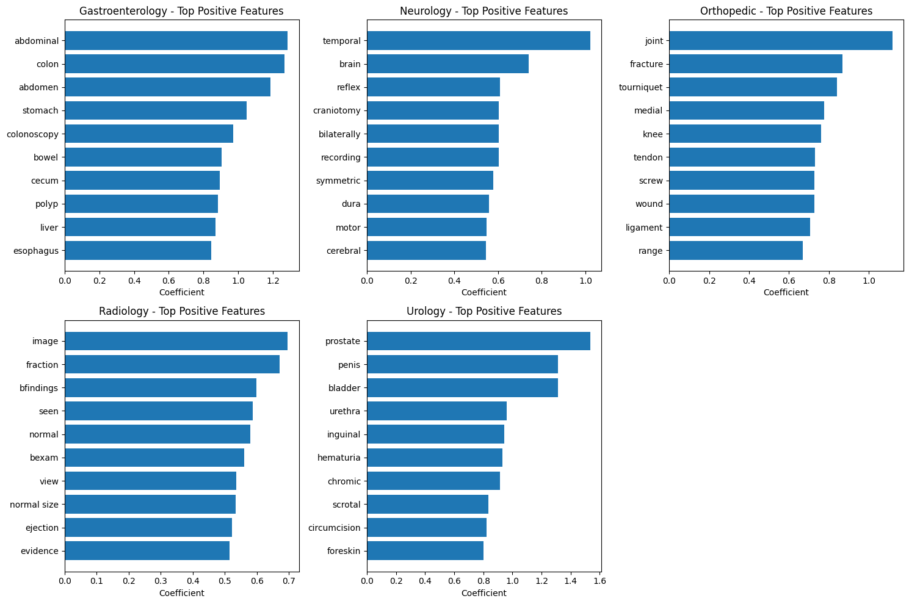

Code
# 필요한 라이브러리 설치 (Colab 환경)
!pip install -q gensim nltk scikit-learn pandas matplotlib seaborn wordcloud이주현
November 24, 2025
본 워크북은 임상 노트(Clinical Notes) 텍스트 데이터를 활용하여 환자의 증상을 자동으로 분류하는 NLP 파이프라인을 포함합니다.
이론적 기반과 실무 문제 해결 능력을 동시에 강화할 수 있도록 설계되었습니다.
분석가는 다양한 텍스트 임베딩 기법(BoW, TF-IDF, Word2Vec)의 특성과 분류 모델 선택의 근거를 고려해야 합니다.
진행률: 0% (분석 시작) 🔄
활용도: 학부 4학년 전공 실습
이 워크북을 통해 학습자는 다음을 실습하게 됩니다:
| 단계 | 주요 작업 내용 | 주요 도구/스킬 | 결과물 |
|---|---|---|---|
| 1단계 | 데이터 로드 및 탐색 | pandas, matplotlib | 데이터 분포 시각화 |
| 2단계 | 텍스트 전처리 | NLTK, regex | 정제된 토큰 |
| 3단계 | 임베딩 & 모델링 | Scikit-learn, Gensim | 학습된 분류기 |
| 4단계 | 성능 평가 | Classification Report, ROC | 메트릭 비교표 |
| 5단계 | 모델 해석 | Feature Importance, SHAP | 핵심 단어 시각화 |
| 6단계 | 외부 검증 | Holdout Test | 일반화 성능 |
| 7단계 | 결과 리포트 | Markdown | 최종 분석 보고서 |
이 워크북은 다음 기술/개념을 선행 학습한 학습자를 대상으로 합니다:
📌 데이터셋: Medical Notes for Classification
📌 출처: https://www.kaggle.com/datasets/
📌 배경: 다양한 증상을 기술한 임상 노트 텍스트와 해당 증상 카테고리 레이블이 포함된 데이터셋
| 변수명 | 설명 |
|---|---|
| text | 임상 노트 원문 (증상 기술 텍스트) |
| label | 증상 카테고리 (분류 대상 레이블) |
# 기본 라이브러리
import numpy as np
import pandas as pd
import matplotlib.pyplot as plt
import seaborn as sns
from collections import Counter
import warnings
warnings.filterwarnings('ignore')
# 텍스트 전처리
import re
import nltk
from nltk.corpus import stopwords
from nltk.tokenize import word_tokenize
from nltk.stem import WordNetLemmatizer, PorterStemmer
# NLTK 데이터 다운로드
nltk.download('punkt')
nltk.download('stopwords')
nltk.download('wordnet')
nltk.download('punkt_tab')
# 텍스트 임베딩
from sklearn.feature_extraction.text import CountVectorizer, TfidfVectorizer
from gensim.models import Word2Vec
# 머신러닝 모델
from sklearn.model_selection import train_test_split, cross_val_score, StratifiedKFold
from sklearn.naive_bayes import MultinomialNB, GaussianNB
from sklearn.linear_model import LogisticRegression
from sklearn.ensemble import VotingClassifier, RandomForestClassifier
from sklearn.svm import SVC
# 성능 평가
from sklearn.metrics import (
accuracy_score, precision_score, recall_score, f1_score,
classification_report, confusion_matrix, roc_auc_score, roc_curve
)
from sklearn.preprocessing import LabelEncoder, label_binarize
# 시각화
from wordcloud import WordCloud
# 재현성을 위한 시드 고정
RANDOM_STATE = 42
np.random.seed(RANDOM_STATE)
print("✅ 모든 라이브러리가 성공적으로 로드되었습니다.")✅ 모든 라이브러리가 성공적으로 로드되었습니다.Kaggle에서 Medical Notes 데이터셋을 다운로드하여 로드합니다.
데이터가 없는 경우 샘플 데이터를 생성하여 실습합니다.
# 1) kaggle.json 파일 업로드
from google.colab import files
files.upload() # kaggle.json 선택
# 2) Kaggle 인증 설정
!mkdir -p ~/.kaggle
!cp kaggle.json ~/.kaggle/
!chmod 600 ~/.kaggle/kaggle.json
# 3) Competition 데이터 다운로드
!kaggle competitions download -c medicalnotes-2019 -p ./data
# 4) 압축 풀기
# 1차: 대회 zip → competition 폴더
!unzip -o ./data/medicalnotes-2019.zip -d ./data/competition
# 2차: 안에 들어있는 data.zip / data_split.zip 해제
!unzip -o ./data/competition/data.zip -d ./data/data_raw
!unzip -o ./data/competition/data_split.zip -d ./data/data_split
# # 5) 파일 목록 확인 (선택)
# !ls ./data
# !ls ./data/competition
# !ls ./data/data_raw/data | head
import pandas as pd
import os
# Header 없는 CSV 읽기 → 직접 컬럼명 부여
labels = pd.read_csv('./data/competition/trainLabels.csv', header=None, names=['Filename', 'Label'])
print(labels.head())
print(labels.columns)
# 텍스트 파일 경로
text_dir = './data/data_raw/data'
def load_text(filename):
file_id = os.path.splitext(filename)[0] # "1001.txt" → "1001"
file_path = os.path.join(text_dir, f"{file_id}.txt")
with open(file_path, 'r', encoding='utf-8', errors='ignore') as f:
return f.read()
labels['text'] = labels['Filename'].apply(load_text)
df = labels[['Filename', 'Label', 'text']].rename(
columns={'Filename': 'filename', 'Label': 'label'}
)
print(df.shape)
df.head()Saving kaggle.json to kaggle (6).json
medicalnotes-2019.zip: Skipping, found more recently modified local copy (use --force to force download)
Archive: ./data/medicalnotes-2019.zip
inflating: ./data/competition/data.zip
inflating: ./data/competition/data_split.zip
inflating: ./data/competition/sampleResults.csv
inflating: ./data/competition/trainLabels.csv
Archive: ./data/competition/data.zip
inflating: ./data/data_raw/data/1001.txt
inflating: ./data/data_raw/data/1002.txt
inflating: ./data/data_raw/data/1003.txt
inflating: ./data/data_raw/data/1004.txt
inflating: ./data/data_raw/data/1005.txt
inflating: ./data/data_raw/data/1006.txt
inflating: ./data/data_raw/data/1007.txt
inflating: ./data/data_raw/data/1008.txt
inflating: ./data/data_raw/data/1009.txt
inflating: ./data/data_raw/data/1010.txt
inflating: ./data/data_raw/data/1011.txt
inflating: ./data/data_raw/data/1012.txt
inflating: ./data/data_raw/data/1013.txt
inflating: ./data/data_raw/data/1014.txt
inflating: ./data/data_raw/data/1015.txt
inflating: ./data/data_raw/data/1016.txt
inflating: ./data/data_raw/data/1017.txt
inflating: ./data/data_raw/data/1018.txt
inflating: ./data/data_raw/data/1019.txt
inflating: ./data/data_raw/data/1020.txt
inflating: ./data/data_raw/data/1021.txt
inflating: ./data/data_raw/data/1022.txt
inflating: ./data/data_raw/data/1023.txt
inflating: ./data/data_raw/data/1024.txt
inflating: ./data/data_raw/data/1025.txt
inflating: ./data/data_raw/data/1026.txt
inflating: ./data/data_raw/data/1027.txt
inflating: ./data/data_raw/data/1028.txt
inflating: ./data/data_raw/data/1029.txt
inflating: ./data/data_raw/data/1030.txt
inflating: ./data/data_raw/data/1031.txt
inflating: ./data/data_raw/data/1032.txt
inflating: ./data/data_raw/data/1033.txt
inflating: ./data/data_raw/data/1034.txt
inflating: ./data/data_raw/data/1035.txt
inflating: ./data/data_raw/data/1036.txt
inflating: ./data/data_raw/data/1037.txt
inflating: ./data/data_raw/data/1038.txt
inflating: ./data/data_raw/data/1039.txt
inflating: ./data/data_raw/data/1040.txt
inflating: ./data/data_raw/data/1041.txt
inflating: ./data/data_raw/data/1042.txt
inflating: ./data/data_raw/data/1043.txt
inflating: ./data/data_raw/data/1044.txt
inflating: ./data/data_raw/data/1045.txt
inflating: ./data/data_raw/data/1046.txt
inflating: ./data/data_raw/data/1047.txt
inflating: ./data/data_raw/data/1048.txt
inflating: ./data/data_raw/data/1049.txt
inflating: ./data/data_raw/data/1050.txt
inflating: ./data/data_raw/data/1051.txt
inflating: ./data/data_raw/data/1052.txt
inflating: ./data/data_raw/data/1053.txt
inflating: ./data/data_raw/data/1054.txt
inflating: ./data/data_raw/data/1055.txt
inflating: ./data/data_raw/data/1056.txt
inflating: ./data/data_raw/data/1057.txt
inflating: ./data/data_raw/data/1058.txt
inflating: ./data/data_raw/data/1059.txt
inflating: ./data/data_raw/data/1060.txt
inflating: ./data/data_raw/data/1061.txt
inflating: ./data/data_raw/data/1062.txt
inflating: ./data/data_raw/data/1063.txt
inflating: ./data/data_raw/data/1064.txt
inflating: ./data/data_raw/data/1065.txt
inflating: ./data/data_raw/data/1066.txt
inflating: ./data/data_raw/data/1067.txt
inflating: ./data/data_raw/data/1068.txt
inflating: ./data/data_raw/data/1069.txt
inflating: ./data/data_raw/data/1070.txt
inflating: ./data/data_raw/data/1071.txt
inflating: ./data/data_raw/data/1072.txt
inflating: ./data/data_raw/data/1073.txt
inflating: ./data/data_raw/data/1074.txt
inflating: ./data/data_raw/data/1075.txt
inflating: ./data/data_raw/data/1076.txt
inflating: ./data/data_raw/data/1077.txt
inflating: ./data/data_raw/data/1078.txt
inflating: ./data/data_raw/data/1079.txt
inflating: ./data/data_raw/data/1080.txt
inflating: ./data/data_raw/data/1081.txt
inflating: ./data/data_raw/data/1082.txt
inflating: ./data/data_raw/data/1083.txt
inflating: ./data/data_raw/data/1084.txt
inflating: ./data/data_raw/data/1085.txt
inflating: ./data/data_raw/data/1086.txt
inflating: ./data/data_raw/data/1087.txt
inflating: ./data/data_raw/data/1088.txt
inflating: ./data/data_raw/data/1089.txt
inflating: ./data/data_raw/data/1090.txt
inflating: ./data/data_raw/data/1091.txt
inflating: ./data/data_raw/data/1092.txt
inflating: ./data/data_raw/data/1093.txt
inflating: ./data/data_raw/data/1094.txt
inflating: ./data/data_raw/data/1095.txt
inflating: ./data/data_raw/data/1096.txt
inflating: ./data/data_raw/data/1097.txt
inflating: ./data/data_raw/data/1098.txt
inflating: ./data/data_raw/data/1099.txt
inflating: ./data/data_raw/data/1100.txt
inflating: ./data/data_raw/data/1101.txt
inflating: ./data/data_raw/data/1102.txt
inflating: ./data/data_raw/data/1103.txt
inflating: ./data/data_raw/data/1104.txt
inflating: ./data/data_raw/data/1105.txt
inflating: ./data/data_raw/data/1106.txt
inflating: ./data/data_raw/data/1107.txt
inflating: ./data/data_raw/data/1108.txt
inflating: ./data/data_raw/data/1109.txt
inflating: ./data/data_raw/data/1110.txt
inflating: ./data/data_raw/data/1111.txt
inflating: ./data/data_raw/data/1112.txt
inflating: ./data/data_raw/data/1113.txt
inflating: ./data/data_raw/data/1114.txt
inflating: ./data/data_raw/data/1115.txt
inflating: ./data/data_raw/data/1116.txt
inflating: ./data/data_raw/data/1117.txt
inflating: ./data/data_raw/data/1118.txt
inflating: ./data/data_raw/data/1119.txt
inflating: ./data/data_raw/data/1120.txt
inflating: ./data/data_raw/data/1121.txt
inflating: ./data/data_raw/data/1122.txt
inflating: ./data/data_raw/data/1123.txt
inflating: ./data/data_raw/data/1124.txt
inflating: ./data/data_raw/data/1125.txt
inflating: ./data/data_raw/data/1126.txt
inflating: ./data/data_raw/data/1127.txt
inflating: ./data/data_raw/data/1128.txt
inflating: ./data/data_raw/data/1129.txt
inflating: ./data/data_raw/data/1130.txt
inflating: ./data/data_raw/data/1131.txt
inflating: ./data/data_raw/data/1132.txt
inflating: ./data/data_raw/data/1133.txt
inflating: ./data/data_raw/data/1134.txt
inflating: ./data/data_raw/data/1135.txt
inflating: ./data/data_raw/data/1136.txt
inflating: ./data/data_raw/data/1137.txt
inflating: ./data/data_raw/data/1138.txt
inflating: ./data/data_raw/data/1139.txt
inflating: ./data/data_raw/data/1140.txt
inflating: ./data/data_raw/data/1141.txt
inflating: ./data/data_raw/data/1142.txt
inflating: ./data/data_raw/data/1143.txt
inflating: ./data/data_raw/data/1144.txt
inflating: ./data/data_raw/data/1145.txt
inflating: ./data/data_raw/data/1146.txt
inflating: ./data/data_raw/data/1147.txt
inflating: ./data/data_raw/data/1148.txt
inflating: ./data/data_raw/data/1149.txt
inflating: ./data/data_raw/data/1150.txt
inflating: ./data/data_raw/data/1151.txt
inflating: ./data/data_raw/data/1152.txt
inflating: ./data/data_raw/data/1153.txt
inflating: ./data/data_raw/data/1154.txt
inflating: ./data/data_raw/data/1155.txt
inflating: ./data/data_raw/data/1156.txt
inflating: ./data/data_raw/data/1157.txt
inflating: ./data/data_raw/data/1158.txt
inflating: ./data/data_raw/data/1159.txt
inflating: ./data/data_raw/data/1160.txt
inflating: ./data/data_raw/data/1161.txt
inflating: ./data/data_raw/data/1162.txt
inflating: ./data/data_raw/data/1163.txt
inflating: ./data/data_raw/data/1164.txt
inflating: ./data/data_raw/data/1165.txt
inflating: ./data/data_raw/data/1166.txt
inflating: ./data/data_raw/data/1167.txt
inflating: ./data/data_raw/data/1168.txt
inflating: ./data/data_raw/data/1169.txt
inflating: ./data/data_raw/data/1170.txt
inflating: ./data/data_raw/data/1171.txt
inflating: ./data/data_raw/data/1172.txt
inflating: ./data/data_raw/data/1173.txt
inflating: ./data/data_raw/data/1174.txt
inflating: ./data/data_raw/data/1175.txt
inflating: ./data/data_raw/data/1176.txt
inflating: ./data/data_raw/data/1177.txt
inflating: ./data/data_raw/data/1178.txt
inflating: ./data/data_raw/data/1179.txt
inflating: ./data/data_raw/data/1180.txt
inflating: ./data/data_raw/data/1181.txt
inflating: ./data/data_raw/data/1182.txt
inflating: ./data/data_raw/data/1183.txt
inflating: ./data/data_raw/data/1184.txt
inflating: ./data/data_raw/data/1185.txt
inflating: ./data/data_raw/data/1186.txt
inflating: ./data/data_raw/data/1187.txt
inflating: ./data/data_raw/data/1188.txt
inflating: ./data/data_raw/data/1189.txt
inflating: ./data/data_raw/data/1190.txt
inflating: ./data/data_raw/data/1191.txt
inflating: ./data/data_raw/data/1192.txt
inflating: ./data/data_raw/data/1193.txt
inflating: ./data/data_raw/data/1194.txt
inflating: ./data/data_raw/data/1195.txt
inflating: ./data/data_raw/data/1196.txt
inflating: ./data/data_raw/data/1197.txt
inflating: ./data/data_raw/data/1198.txt
inflating: ./data/data_raw/data/1199.txt
inflating: ./data/data_raw/data/1200.txt
inflating: ./data/data_raw/data/1201.txt
inflating: ./data/data_raw/data/1202.txt
inflating: ./data/data_raw/data/1203.txt
inflating: ./data/data_raw/data/1204.txt
inflating: ./data/data_raw/data/1205.txt
inflating: ./data/data_raw/data/1206.txt
inflating: ./data/data_raw/data/1207.txt
inflating: ./data/data_raw/data/1208.txt
inflating: ./data/data_raw/data/1209.txt
inflating: ./data/data_raw/data/1210.txt
inflating: ./data/data_raw/data/1211.txt
inflating: ./data/data_raw/data/1212.txt
inflating: ./data/data_raw/data/1213.txt
inflating: ./data/data_raw/data/1214.txt
inflating: ./data/data_raw/data/1215.txt
inflating: ./data/data_raw/data/1216.txt
inflating: ./data/data_raw/data/1217.txt
inflating: ./data/data_raw/data/1218.txt
inflating: ./data/data_raw/data/1219.txt
inflating: ./data/data_raw/data/1220.txt
inflating: ./data/data_raw/data/1221.txt
inflating: ./data/data_raw/data/1222.txt
inflating: ./data/data_raw/data/1223.txt
inflating: ./data/data_raw/data/1224.txt
inflating: ./data/data_raw/data/1225.txt
inflating: ./data/data_raw/data/1226.txt
inflating: ./data/data_raw/data/1227.txt
inflating: ./data/data_raw/data/1228.txt
inflating: ./data/data_raw/data/1229.txt
inflating: ./data/data_raw/data/1230.txt
inflating: ./data/data_raw/data/1231.txt
inflating: ./data/data_raw/data/1232.txt
inflating: ./data/data_raw/data/1233.txt
inflating: ./data/data_raw/data/1234.txt
inflating: ./data/data_raw/data/1235.txt
inflating: ./data/data_raw/data/1236.txt
inflating: ./data/data_raw/data/1237.txt
inflating: ./data/data_raw/data/1238.txt
inflating: ./data/data_raw/data/1239.txt
inflating: ./data/data_raw/data/1240.txt
inflating: ./data/data_raw/data/1241.txt
inflating: ./data/data_raw/data/1242.txt
inflating: ./data/data_raw/data/1243.txt
inflating: ./data/data_raw/data/1244.txt
inflating: ./data/data_raw/data/1245.txt
inflating: ./data/data_raw/data/1246.txt
inflating: ./data/data_raw/data/1247.txt
inflating: ./data/data_raw/data/1248.txt
inflating: ./data/data_raw/data/1249.txt
inflating: ./data/data_raw/data/1250.txt
inflating: ./data/data_raw/data/1251.txt
inflating: ./data/data_raw/data/1252.txt
inflating: ./data/data_raw/data/1253.txt
inflating: ./data/data_raw/data/1254.txt
inflating: ./data/data_raw/data/1255.txt
inflating: ./data/data_raw/data/1256.txt
inflating: ./data/data_raw/data/1257.txt
inflating: ./data/data_raw/data/1258.txt
inflating: ./data/data_raw/data/1259.txt
inflating: ./data/data_raw/data/1260.txt
inflating: ./data/data_raw/data/1261.txt
inflating: ./data/data_raw/data/1262.txt
inflating: ./data/data_raw/data/1263.txt
inflating: ./data/data_raw/data/1264.txt
inflating: ./data/data_raw/data/1265.txt
inflating: ./data/data_raw/data/1266.txt
inflating: ./data/data_raw/data/1267.txt
inflating: ./data/data_raw/data/1268.txt
inflating: ./data/data_raw/data/1269.txt
inflating: ./data/data_raw/data/1270.txt
inflating: ./data/data_raw/data/1271.txt
inflating: ./data/data_raw/data/1272.txt
inflating: ./data/data_raw/data/1273.txt
inflating: ./data/data_raw/data/1274.txt
inflating: ./data/data_raw/data/1275.txt
inflating: ./data/data_raw/data/1276.txt
inflating: ./data/data_raw/data/1277.txt
inflating: ./data/data_raw/data/1278.txt
inflating: ./data/data_raw/data/1279.txt
inflating: ./data/data_raw/data/1280.txt
inflating: ./data/data_raw/data/1281.txt
inflating: ./data/data_raw/data/1282.txt
inflating: ./data/data_raw/data/1283.txt
inflating: ./data/data_raw/data/1284.txt
inflating: ./data/data_raw/data/1285.txt
inflating: ./data/data_raw/data/1286.txt
inflating: ./data/data_raw/data/1287.txt
inflating: ./data/data_raw/data/1288.txt
inflating: ./data/data_raw/data/1289.txt
inflating: ./data/data_raw/data/1290.txt
inflating: ./data/data_raw/data/1291.txt
inflating: ./data/data_raw/data/1292.txt
inflating: ./data/data_raw/data/1293.txt
inflating: ./data/data_raw/data/1294.txt
inflating: ./data/data_raw/data/1295.txt
inflating: ./data/data_raw/data/1296.txt
inflating: ./data/data_raw/data/1297.txt
inflating: ./data/data_raw/data/1298.txt
inflating: ./data/data_raw/data/1299.txt
inflating: ./data/data_raw/data/1300.txt
inflating: ./data/data_raw/data/1301.txt
inflating: ./data/data_raw/data/1302.txt
inflating: ./data/data_raw/data/1303.txt
inflating: ./data/data_raw/data/1304.txt
inflating: ./data/data_raw/data/1305.txt
inflating: ./data/data_raw/data/1306.txt
inflating: ./data/data_raw/data/1307.txt
inflating: ./data/data_raw/data/1308.txt
inflating: ./data/data_raw/data/1309.txt
inflating: ./data/data_raw/data/1310.txt
inflating: ./data/data_raw/data/1311.txt
inflating: ./data/data_raw/data/1312.txt
inflating: ./data/data_raw/data/1313.txt
inflating: ./data/data_raw/data/1314.txt
inflating: ./data/data_raw/data/1315.txt
inflating: ./data/data_raw/data/1316.txt
inflating: ./data/data_raw/data/1317.txt
inflating: ./data/data_raw/data/1318.txt
inflating: ./data/data_raw/data/1319.txt
inflating: ./data/data_raw/data/1320.txt
inflating: ./data/data_raw/data/1321.txt
inflating: ./data/data_raw/data/1322.txt
inflating: ./data/data_raw/data/1323.txt
inflating: ./data/data_raw/data/1324.txt
inflating: ./data/data_raw/data/1325.txt
inflating: ./data/data_raw/data/1326.txt
inflating: ./data/data_raw/data/1327.txt
inflating: ./data/data_raw/data/1328.txt
inflating: ./data/data_raw/data/1329.txt
inflating: ./data/data_raw/data/1330.txt
inflating: ./data/data_raw/data/1331.txt
inflating: ./data/data_raw/data/1332.txt
inflating: ./data/data_raw/data/1333.txt
inflating: ./data/data_raw/data/1334.txt
inflating: ./data/data_raw/data/1335.txt
inflating: ./data/data_raw/data/1336.txt
inflating: ./data/data_raw/data/1337.txt
inflating: ./data/data_raw/data/1338.txt
inflating: ./data/data_raw/data/1339.txt
inflating: ./data/data_raw/data/1340.txt
inflating: ./data/data_raw/data/1341.txt
inflating: ./data/data_raw/data/1342.txt
inflating: ./data/data_raw/data/1343.txt
inflating: ./data/data_raw/data/1344.txt
inflating: ./data/data_raw/data/1345.txt
inflating: ./data/data_raw/data/1346.txt
inflating: ./data/data_raw/data/1347.txt
inflating: ./data/data_raw/data/1348.txt
inflating: ./data/data_raw/data/1349.txt
inflating: ./data/data_raw/data/1350.txt
inflating: ./data/data_raw/data/1351.txt
inflating: ./data/data_raw/data/1352.txt
inflating: ./data/data_raw/data/1353.txt
inflating: ./data/data_raw/data/1354.txt
inflating: ./data/data_raw/data/1355.txt
inflating: ./data/data_raw/data/1356.txt
inflating: ./data/data_raw/data/1357.txt
inflating: ./data/data_raw/data/1358.txt
inflating: ./data/data_raw/data/1359.txt
inflating: ./data/data_raw/data/1360.txt
inflating: ./data/data_raw/data/1361.txt
inflating: ./data/data_raw/data/1362.txt
inflating: ./data/data_raw/data/1363.txt
inflating: ./data/data_raw/data/1364.txt
inflating: ./data/data_raw/data/1365.txt
inflating: ./data/data_raw/data/1366.txt
inflating: ./data/data_raw/data/1367.txt
inflating: ./data/data_raw/data/1368.txt
inflating: ./data/data_raw/data/1369.txt
inflating: ./data/data_raw/data/1370.txt
inflating: ./data/data_raw/data/1371.txt
inflating: ./data/data_raw/data/1372.txt
inflating: ./data/data_raw/data/1373.txt
inflating: ./data/data_raw/data/1374.txt
inflating: ./data/data_raw/data/1375.txt
inflating: ./data/data_raw/data/1376.txt
inflating: ./data/data_raw/data/1377.txt
inflating: ./data/data_raw/data/1378.txt
inflating: ./data/data_raw/data/1379.txt
inflating: ./data/data_raw/data/1380.txt
inflating: ./data/data_raw/data/1381.txt
inflating: ./data/data_raw/data/1382.txt
inflating: ./data/data_raw/data/1383.txt
inflating: ./data/data_raw/data/1384.txt
inflating: ./data/data_raw/data/1385.txt
inflating: ./data/data_raw/data/1386.txt
inflating: ./data/data_raw/data/1387.txt
inflating: ./data/data_raw/data/1388.txt
inflating: ./data/data_raw/data/1389.txt
inflating: ./data/data_raw/data/1390.txt
inflating: ./data/data_raw/data/1391.txt
inflating: ./data/data_raw/data/1392.txt
inflating: ./data/data_raw/data/1393.txt
inflating: ./data/data_raw/data/1394.txt
inflating: ./data/data_raw/data/1395.txt
inflating: ./data/data_raw/data/1396.txt
inflating: ./data/data_raw/data/1397.txt
inflating: ./data/data_raw/data/1398.txt
inflating: ./data/data_raw/data/1399.txt
inflating: ./data/data_raw/data/1400.txt
inflating: ./data/data_raw/data/1401.txt
inflating: ./data/data_raw/data/1402.txt
inflating: ./data/data_raw/data/1403.txt
inflating: ./data/data_raw/data/1404.txt
inflating: ./data/data_raw/data/1405.txt
inflating: ./data/data_raw/data/1406.txt
inflating: ./data/data_raw/data/1407.txt
inflating: ./data/data_raw/data/1408.txt
inflating: ./data/data_raw/data/1409.txt
inflating: ./data/data_raw/data/1410.txt
inflating: ./data/data_raw/data/1411.txt
inflating: ./data/data_raw/data/1412.txt
inflating: ./data/data_raw/data/1413.txt
inflating: ./data/data_raw/data/1414.txt
inflating: ./data/data_raw/data/1415.txt
inflating: ./data/data_raw/data/1416.txt
inflating: ./data/data_raw/data/1417.txt
inflating: ./data/data_raw/data/1418.txt
inflating: ./data/data_raw/data/1419.txt
inflating: ./data/data_raw/data/1420.txt
inflating: ./data/data_raw/data/1421.txt
inflating: ./data/data_raw/data/1422.txt
inflating: ./data/data_raw/data/1423.txt
inflating: ./data/data_raw/data/1424.txt
inflating: ./data/data_raw/data/1425.txt
inflating: ./data/data_raw/data/1426.txt
inflating: ./data/data_raw/data/1427.txt
inflating: ./data/data_raw/data/1428.txt
inflating: ./data/data_raw/data/1429.txt
inflating: ./data/data_raw/data/1430.txt
inflating: ./data/data_raw/data/1431.txt
inflating: ./data/data_raw/data/1432.txt
inflating: ./data/data_raw/data/1433.txt
inflating: ./data/data_raw/data/1434.txt
inflating: ./data/data_raw/data/1435.txt
inflating: ./data/data_raw/data/1436.txt
inflating: ./data/data_raw/data/1437.txt
inflating: ./data/data_raw/data/1438.txt
inflating: ./data/data_raw/data/1439.txt
inflating: ./data/data_raw/data/1440.txt
inflating: ./data/data_raw/data/1441.txt
inflating: ./data/data_raw/data/1442.txt
inflating: ./data/data_raw/data/1443.txt
inflating: ./data/data_raw/data/1444.txt
inflating: ./data/data_raw/data/1445.txt
inflating: ./data/data_raw/data/1446.txt
inflating: ./data/data_raw/data/1447.txt
inflating: ./data/data_raw/data/1448.txt
inflating: ./data/data_raw/data/1449.txt
inflating: ./data/data_raw/data/1450.txt
inflating: ./data/data_raw/data/1451.txt
inflating: ./data/data_raw/data/1452.txt
inflating: ./data/data_raw/data/1453.txt
inflating: ./data/data_raw/data/1454.txt
inflating: ./data/data_raw/data/1455.txt
inflating: ./data/data_raw/data/1456.txt
inflating: ./data/data_raw/data/1457.txt
inflating: ./data/data_raw/data/1458.txt
inflating: ./data/data_raw/data/1459.txt
inflating: ./data/data_raw/data/1460.txt
inflating: ./data/data_raw/data/1461.txt
inflating: ./data/data_raw/data/1462.txt
inflating: ./data/data_raw/data/1463.txt
inflating: ./data/data_raw/data/1464.txt
inflating: ./data/data_raw/data/1465.txt
inflating: ./data/data_raw/data/1466.txt
inflating: ./data/data_raw/data/1467.txt
inflating: ./data/data_raw/data/1468.txt
inflating: ./data/data_raw/data/1469.txt
inflating: ./data/data_raw/data/1470.txt
inflating: ./data/data_raw/data/1471.txt
inflating: ./data/data_raw/data/1472.txt
inflating: ./data/data_raw/data/1473.txt
inflating: ./data/data_raw/data/1474.txt
inflating: ./data/data_raw/data/1475.txt
inflating: ./data/data_raw/data/1476.txt
inflating: ./data/data_raw/data/1477.txt
inflating: ./data/data_raw/data/1478.txt
inflating: ./data/data_raw/data/1479.txt
inflating: ./data/data_raw/data/1480.txt
inflating: ./data/data_raw/data/1481.txt
inflating: ./data/data_raw/data/1482.txt
inflating: ./data/data_raw/data/1483.txt
inflating: ./data/data_raw/data/1484.txt
inflating: ./data/data_raw/data/1485.txt
inflating: ./data/data_raw/data/1486.txt
inflating: ./data/data_raw/data/1487.txt
inflating: ./data/data_raw/data/1488.txt
inflating: ./data/data_raw/data/1489.txt
inflating: ./data/data_raw/data/1490.txt
inflating: ./data/data_raw/data/1491.txt
inflating: ./data/data_raw/data/1492.txt
inflating: ./data/data_raw/data/1493.txt
inflating: ./data/data_raw/data/1494.txt
inflating: ./data/data_raw/data/1495.txt
inflating: ./data/data_raw/data/1496.txt
inflating: ./data/data_raw/data/1497.txt
inflating: ./data/data_raw/data/1498.txt
inflating: ./data/data_raw/data/1499.txt
inflating: ./data/data_raw/data/1500.txt
inflating: ./data/data_raw/data/1501.txt
inflating: ./data/data_raw/data/1502.txt
inflating: ./data/data_raw/data/1503.txt
inflating: ./data/data_raw/data/1504.txt
inflating: ./data/data_raw/data/1505.txt
inflating: ./data/data_raw/data/1506.txt
inflating: ./data/data_raw/data/1507.txt
inflating: ./data/data_raw/data/1508.txt
inflating: ./data/data_raw/data/1509.txt
inflating: ./data/data_raw/data/1510.txt
inflating: ./data/data_raw/data/1511.txt
inflating: ./data/data_raw/data/1512.txt
inflating: ./data/data_raw/data/1513.txt
inflating: ./data/data_raw/data/1514.txt
inflating: ./data/data_raw/data/1515.txt
inflating: ./data/data_raw/data/1516.txt
inflating: ./data/data_raw/data/1517.txt
inflating: ./data/data_raw/data/1518.txt
inflating: ./data/data_raw/data/1519.txt
inflating: ./data/data_raw/data/1520.txt
inflating: ./data/data_raw/data/1521.txt
inflating: ./data/data_raw/data/1522.txt
inflating: ./data/data_raw/data/1523.txt
inflating: ./data/data_raw/data/1524.txt
inflating: ./data/data_raw/data/1525.txt
inflating: ./data/data_raw/data/1526.txt
inflating: ./data/data_raw/data/1527.txt
inflating: ./data/data_raw/data/1528.txt
inflating: ./data/data_raw/data/1529.txt
inflating: ./data/data_raw/data/1530.txt
inflating: ./data/data_raw/data/1531.txt
inflating: ./data/data_raw/data/1532.txt
inflating: ./data/data_raw/data/1533.txt
inflating: ./data/data_raw/data/1534.txt
inflating: ./data/data_raw/data/1535.txt
inflating: ./data/data_raw/data/1536.txt
inflating: ./data/data_raw/data/1537.txt
inflating: ./data/data_raw/data/1538.txt
inflating: ./data/data_raw/data/1539.txt
inflating: ./data/data_raw/data/1540.txt
inflating: ./data/data_raw/data/1541.txt
inflating: ./data/data_raw/data/1542.txt
inflating: ./data/data_raw/data/1543.txt
inflating: ./data/data_raw/data/1544.txt
inflating: ./data/data_raw/data/1545.txt
inflating: ./data/data_raw/data/1546.txt
inflating: ./data/data_raw/data/1547.txt
inflating: ./data/data_raw/data/1548.txt
inflating: ./data/data_raw/data/1549.txt
inflating: ./data/data_raw/data/1550.txt
inflating: ./data/data_raw/data/1551.txt
inflating: ./data/data_raw/data/1552.txt
inflating: ./data/data_raw/data/1553.txt
inflating: ./data/data_raw/data/1554.txt
inflating: ./data/data_raw/data/1555.txt
inflating: ./data/data_raw/data/1556.txt
inflating: ./data/data_raw/data/1557.txt
inflating: ./data/data_raw/data/1558.txt
inflating: ./data/data_raw/data/1559.txt
inflating: ./data/data_raw/data/1560.txt
inflating: ./data/data_raw/data/1561.txt
inflating: ./data/data_raw/data/1562.txt
inflating: ./data/data_raw/data/1563.txt
inflating: ./data/data_raw/data/1564.txt
inflating: ./data/data_raw/data/1565.txt
inflating: ./data/data_raw/data/1566.txt
inflating: ./data/data_raw/data/1567.txt
inflating: ./data/data_raw/data/1568.txt
inflating: ./data/data_raw/data/1569.txt
inflating: ./data/data_raw/data/1570.txt
inflating: ./data/data_raw/data/1571.txt
inflating: ./data/data_raw/data/1572.txt
inflating: ./data/data_raw/data/1573.txt
inflating: ./data/data_raw/data/1574.txt
inflating: ./data/data_raw/data/1575.txt
inflating: ./data/data_raw/data/1576.txt
inflating: ./data/data_raw/data/1577.txt
inflating: ./data/data_raw/data/1578.txt
inflating: ./data/data_raw/data/1579.txt
inflating: ./data/data_raw/data/1580.txt
inflating: ./data/data_raw/data/1581.txt
inflating: ./data/data_raw/data/1582.txt
inflating: ./data/data_raw/data/1583.txt
inflating: ./data/data_raw/data/1584.txt
inflating: ./data/data_raw/data/1585.txt
inflating: ./data/data_raw/data/1586.txt
inflating: ./data/data_raw/data/1587.txt
inflating: ./data/data_raw/data/1588.txt
inflating: ./data/data_raw/data/1589.txt
inflating: ./data/data_raw/data/1590.txt
inflating: ./data/data_raw/data/1591.txt
inflating: ./data/data_raw/data/1592.txt
inflating: ./data/data_raw/data/1593.txt
inflating: ./data/data_raw/data/1594.txt
inflating: ./data/data_raw/data/1595.txt
inflating: ./data/data_raw/data/1596.txt
inflating: ./data/data_raw/data/1597.txt
inflating: ./data/data_raw/data/1598.txt
inflating: ./data/data_raw/data/1599.txt
inflating: ./data/data_raw/data/1600.txt
inflating: ./data/data_raw/data/1601.txt
inflating: ./data/data_raw/data/1602.txt
inflating: ./data/data_raw/data/1603.txt
inflating: ./data/data_raw/data/1604.txt
inflating: ./data/data_raw/data/1605.txt
inflating: ./data/data_raw/data/1606.txt
inflating: ./data/data_raw/data/1607.txt
inflating: ./data/data_raw/data/1608.txt
inflating: ./data/data_raw/data/1609.txt
inflating: ./data/data_raw/data/1610.txt
inflating: ./data/data_raw/data/1611.txt
inflating: ./data/data_raw/data/1612.txt
inflating: ./data/data_raw/data/1613.txt
inflating: ./data/data_raw/data/1614.txt
inflating: ./data/data_raw/data/1615.txt
inflating: ./data/data_raw/data/1616.txt
inflating: ./data/data_raw/data/1617.txt
inflating: ./data/data_raw/data/1618.txt
inflating: ./data/data_raw/data/1619.txt
inflating: ./data/data_raw/data/1620.txt
inflating: ./data/data_raw/data/1621.txt
inflating: ./data/data_raw/data/1622.txt
inflating: ./data/data_raw/data/1623.txt
inflating: ./data/data_raw/data/1624.txt
inflating: ./data/data_raw/data/1625.txt
inflating: ./data/data_raw/data/1626.txt
inflating: ./data/data_raw/data/1627.txt
inflating: ./data/data_raw/data/1628.txt
inflating: ./data/data_raw/data/1629.txt
inflating: ./data/data_raw/data/1630.txt
inflating: ./data/data_raw/data/1631.txt
inflating: ./data/data_raw/data/1632.txt
inflating: ./data/data_raw/data/1633.txt
inflating: ./data/data_raw/data/1634.txt
inflating: ./data/data_raw/data/1635.txt
inflating: ./data/data_raw/data/1636.txt
inflating: ./data/data_raw/data/1637.txt
inflating: ./data/data_raw/data/1638.txt
inflating: ./data/data_raw/data/1639.txt
inflating: ./data/data_raw/data/1640.txt
inflating: ./data/data_raw/data/1641.txt
inflating: ./data/data_raw/data/1642.txt
inflating: ./data/data_raw/data/1643.txt
inflating: ./data/data_raw/data/1644.txt
inflating: ./data/data_raw/data/1645.txt
inflating: ./data/data_raw/data/1646.txt
inflating: ./data/data_raw/data/1647.txt
inflating: ./data/data_raw/data/1648.txt
inflating: ./data/data_raw/data/1649.txt
inflating: ./data/data_raw/data/1650.txt
inflating: ./data/data_raw/data/1651.txt
inflating: ./data/data_raw/data/1652.txt
inflating: ./data/data_raw/data/1653.txt
inflating: ./data/data_raw/data/1654.txt
inflating: ./data/data_raw/data/1655.txt
inflating: ./data/data_raw/data/1656.txt
inflating: ./data/data_raw/data/1657.txt
inflating: ./data/data_raw/data/1658.txt
inflating: ./data/data_raw/data/1659.txt
inflating: ./data/data_raw/data/1660.txt
inflating: ./data/data_raw/data/1661.txt
inflating: ./data/data_raw/data/1662.txt
inflating: ./data/data_raw/data/1663.txt
inflating: ./data/data_raw/data/1664.txt
inflating: ./data/data_raw/data/1665.txt
inflating: ./data/data_raw/data/1666.txt
inflating: ./data/data_raw/data/1667.txt
inflating: ./data/data_raw/data/1668.txt
inflating: ./data/data_raw/data/1669.txt
inflating: ./data/data_raw/data/1670.txt
inflating: ./data/data_raw/data/1671.txt
inflating: ./data/data_raw/data/1672.txt
inflating: ./data/data_raw/data/1673.txt
inflating: ./data/data_raw/data/1674.txt
inflating: ./data/data_raw/data/1675.txt
inflating: ./data/data_raw/data/1676.txt
inflating: ./data/data_raw/data/1677.txt
inflating: ./data/data_raw/data/1678.txt
inflating: ./data/data_raw/data/1679.txt
inflating: ./data/data_raw/data/1680.txt
inflating: ./data/data_raw/data/1681.txt
inflating: ./data/data_raw/data/1682.txt
inflating: ./data/data_raw/data/1683.txt
inflating: ./data/data_raw/data/1684.txt
inflating: ./data/data_raw/data/1685.txt
inflating: ./data/data_raw/data/1686.txt
inflating: ./data/data_raw/data/1687.txt
inflating: ./data/data_raw/data/1688.txt
inflating: ./data/data_raw/data/1689.txt
inflating: ./data/data_raw/data/1690.txt
inflating: ./data/data_raw/data/1691.txt
inflating: ./data/data_raw/data/1692.txt
inflating: ./data/data_raw/data/1693.txt
inflating: ./data/data_raw/data/1694.txt
inflating: ./data/data_raw/data/1695.txt
inflating: ./data/data_raw/data/1696.txt
inflating: ./data/data_raw/data/1697.txt
inflating: ./data/data_raw/data/1698.txt
inflating: ./data/data_raw/data/1699.txt
inflating: ./data/data_raw/data/1700.txt
inflating: ./data/data_raw/data/1701.txt
inflating: ./data/data_raw/data/1702.txt
inflating: ./data/data_raw/data/1703.txt
inflating: ./data/data_raw/data/1704.txt
inflating: ./data/data_raw/data/1705.txt
inflating: ./data/data_raw/data/1706.txt
inflating: ./data/data_raw/data/1707.txt
inflating: ./data/data_raw/data/1708.txt
inflating: ./data/data_raw/data/1709.txt
inflating: ./data/data_raw/data/1710.txt
inflating: ./data/data_raw/data/1711.txt
inflating: ./data/data_raw/data/1712.txt
inflating: ./data/data_raw/data/1713.txt
inflating: ./data/data_raw/data/1714.txt
inflating: ./data/data_raw/data/1715.txt
inflating: ./data/data_raw/data/1716.txt
inflating: ./data/data_raw/data/1717.txt
inflating: ./data/data_raw/data/1718.txt
inflating: ./data/data_raw/data/1719.txt
inflating: ./data/data_raw/data/1720.txt
inflating: ./data/data_raw/data/1721.txt
inflating: ./data/data_raw/data/1722.txt
inflating: ./data/data_raw/data/1723.txt
inflating: ./data/data_raw/data/1724.txt
inflating: ./data/data_raw/data/1725.txt
inflating: ./data/data_raw/data/1726.txt
inflating: ./data/data_raw/data/1727.txt
inflating: ./data/data_raw/data/1728.txt
inflating: ./data/data_raw/data/1729.txt
inflating: ./data/data_raw/data/1730.txt
inflating: ./data/data_raw/data/1731.txt
inflating: ./data/data_raw/data/1732.txt
inflating: ./data/data_raw/data/1733.txt
inflating: ./data/data_raw/data/1734.txt
inflating: ./data/data_raw/data/1735.txt
inflating: ./data/data_raw/data/1736.txt
inflating: ./data/data_raw/data/1737.txt
inflating: ./data/data_raw/data/1738.txt
inflating: ./data/data_raw/data/1739.txt
inflating: ./data/data_raw/data/1740.txt
inflating: ./data/data_raw/data/1741.txt
inflating: ./data/data_raw/data/1742.txt
inflating: ./data/data_raw/data/1743.txt
inflating: ./data/data_raw/data/1744.txt
inflating: ./data/data_raw/data/1745.txt
inflating: ./data/data_raw/data/1746.txt
inflating: ./data/data_raw/data/1747.txt
inflating: ./data/data_raw/data/1748.txt
inflating: ./data/data_raw/data/1749.txt
inflating: ./data/data_raw/data/1750.txt
inflating: ./data/data_raw/data/1751.txt
inflating: ./data/data_raw/data/1752.txt
inflating: ./data/data_raw/data/1753.txt
inflating: ./data/data_raw/data/1754.txt
inflating: ./data/data_raw/data/1755.txt
inflating: ./data/data_raw/data/1756.txt
inflating: ./data/data_raw/data/1757.txt
inflating: ./data/data_raw/data/1758.txt
inflating: ./data/data_raw/data/1759.txt
inflating: ./data/data_raw/data/1760.txt
inflating: ./data/data_raw/data/1761.txt
inflating: ./data/data_raw/data/1762.txt
inflating: ./data/data_raw/data/1763.txt
inflating: ./data/data_raw/data/1764.txt
inflating: ./data/data_raw/data/1765.txt
inflating: ./data/data_raw/data/1766.txt
inflating: ./data/data_raw/data/1767.txt
inflating: ./data/data_raw/data/1768.txt
inflating: ./data/data_raw/data/1769.txt
inflating: ./data/data_raw/data/1770.txt
inflating: ./data/data_raw/data/1771.txt
inflating: ./data/data_raw/data/1772.txt
inflating: ./data/data_raw/data/1773.txt
inflating: ./data/data_raw/data/1774.txt
inflating: ./data/data_raw/data/1775.txt
inflating: ./data/data_raw/data/1776.txt
inflating: ./data/data_raw/data/1777.txt
inflating: ./data/data_raw/data/1778.txt
inflating: ./data/data_raw/data/1779.txt
inflating: ./data/data_raw/data/1780.txt
inflating: ./data/data_raw/data/1781.txt
inflating: ./data/data_raw/data/1782.txt
inflating: ./data/data_raw/data/1783.txt
inflating: ./data/data_raw/data/1784.txt
inflating: ./data/data_raw/data/1785.txt
inflating: ./data/data_raw/data/1786.txt
inflating: ./data/data_raw/data/1787.txt
inflating: ./data/data_raw/data/1788.txt
inflating: ./data/data_raw/data/1789.txt
inflating: ./data/data_raw/data/1790.txt
inflating: ./data/data_raw/data/1791.txt
inflating: ./data/data_raw/data/1792.txt
inflating: ./data/data_raw/data/1793.txt
inflating: ./data/data_raw/data/1794.txt
inflating: ./data/data_raw/data/1795.txt
inflating: ./data/data_raw/data/1796.txt
inflating: ./data/data_raw/data/1797.txt
inflating: ./data/data_raw/data/1798.txt
inflating: ./data/data_raw/data/1799.txt
inflating: ./data/data_raw/data/1800.txt
inflating: ./data/data_raw/data/1801.txt
inflating: ./data/data_raw/data/1802.txt
inflating: ./data/data_raw/data/1803.txt
inflating: ./data/data_raw/data/1804.txt
inflating: ./data/data_raw/data/1805.txt
inflating: ./data/data_raw/data/1806.txt
inflating: ./data/data_raw/data/1807.txt
inflating: ./data/data_raw/data/1808.txt
inflating: ./data/data_raw/data/1809.txt
inflating: ./data/data_raw/data/1810.txt
inflating: ./data/data_raw/data/1811.txt
inflating: ./data/data_raw/data/1812.txt
inflating: ./data/data_raw/data/1813.txt
inflating: ./data/data_raw/data/1814.txt
inflating: ./data/data_raw/data/1815.txt
inflating: ./data/data_raw/data/1816.txt
inflating: ./data/data_raw/data/1817.txt
inflating: ./data/data_raw/data/1818.txt
inflating: ./data/data_raw/data/1819.txt
inflating: ./data/data_raw/data/1820.txt
inflating: ./data/data_raw/data/1821.txt
inflating: ./data/data_raw/data/1822.txt
inflating: ./data/data_raw/data/1823.txt
inflating: ./data/data_raw/data/1824.txt
inflating: ./data/data_raw/data/1825.txt
inflating: ./data/data_raw/data/1826.txt
inflating: ./data/data_raw/data/1827.txt
inflating: ./data/data_raw/data/1828.txt
inflating: ./data/data_raw/data/1829.txt
inflating: ./data/data_raw/data/1830.txt
inflating: ./data/data_raw/data/1831.txt
inflating: ./data/data_raw/data/1832.txt
inflating: ./data/data_raw/data/1833.txt
inflating: ./data/data_raw/data/1834.txt
inflating: ./data/data_raw/data/1835.txt
inflating: ./data/data_raw/data/1836.txt
inflating: ./data/data_raw/data/1837.txt
inflating: ./data/data_raw/data/1838.txt
inflating: ./data/data_raw/data/1839.txt
inflating: ./data/data_raw/data/1840.txt
inflating: ./data/data_raw/data/1841.txt
inflating: ./data/data_raw/data/1842.txt
inflating: ./data/data_raw/data/1843.txt
inflating: ./data/data_raw/data/1844.txt
inflating: ./data/data_raw/data/1845.txt
inflating: ./data/data_raw/data/1846.txt
inflating: ./data/data_raw/data/1847.txt
inflating: ./data/data_raw/data/1848.txt
inflating: ./data/data_raw/data/1849.txt
inflating: ./data/data_raw/data/1850.txt
inflating: ./data/data_raw/data/1851.txt
inflating: ./data/data_raw/data/1852.txt
inflating: ./data/data_raw/data/1853.txt
inflating: ./data/data_raw/data/1854.txt
inflating: ./data/data_raw/data/1855.txt
inflating: ./data/data_raw/data/1856.txt
inflating: ./data/data_raw/data/1857.txt
inflating: ./data/data_raw/data/1858.txt
inflating: ./data/data_raw/data/1859.txt
inflating: ./data/data_raw/data/1860.txt
inflating: ./data/data_raw/data/1861.txt
inflating: ./data/data_raw/data/1862.txt
inflating: ./data/data_raw/data/1863.txt
inflating: ./data/data_raw/data/1864.txt
inflating: ./data/data_raw/data/1865.txt
inflating: ./data/data_raw/data/1866.txt
inflating: ./data/data_raw/data/1867.txt
inflating: ./data/data_raw/data/1868.txt
inflating: ./data/data_raw/data/1869.txt
inflating: ./data/data_raw/data/1870.txt
inflating: ./data/data_raw/data/1871.txt
inflating: ./data/data_raw/data/1872.txt
inflating: ./data/data_raw/data/1873.txt
inflating: ./data/data_raw/data/1874.txt
inflating: ./data/data_raw/data/1875.txt
inflating: ./data/data_raw/data/1876.txt
inflating: ./data/data_raw/data/1877.txt
inflating: ./data/data_raw/data/1878.txt
inflating: ./data/data_raw/data/1879.txt
inflating: ./data/data_raw/data/1880.txt
inflating: ./data/data_raw/data/1881.txt
inflating: ./data/data_raw/data/1882.txt
inflating: ./data/data_raw/data/1883.txt
inflating: ./data/data_raw/data/1884.txt
inflating: ./data/data_raw/data/1885.txt
inflating: ./data/data_raw/data/1886.txt
inflating: ./data/data_raw/data/1887.txt
inflating: ./data/data_raw/data/1888.txt
inflating: ./data/data_raw/data/1889.txt
inflating: ./data/data_raw/data/1890.txt
inflating: ./data/data_raw/data/1891.txt
inflating: ./data/data_raw/data/1892.txt
inflating: ./data/data_raw/data/1893.txt
inflating: ./data/data_raw/data/1894.txt
inflating: ./data/data_raw/data/1895.txt
inflating: ./data/data_raw/data/1896.txt
inflating: ./data/data_raw/data/1897.txt
inflating: ./data/data_raw/data/1898.txt
inflating: ./data/data_raw/data/1899.txt
inflating: ./data/data_raw/data/1900.txt
inflating: ./data/data_raw/data/1901.txt
inflating: ./data/data_raw/data/1902.txt
inflating: ./data/data_raw/data/1903.txt
inflating: ./data/data_raw/data/1904.txt
inflating: ./data/data_raw/data/1905.txt
inflating: ./data/data_raw/data/1906.txt
inflating: ./data/data_raw/data/1907.txt
inflating: ./data/data_raw/data/1908.txt
inflating: ./data/data_raw/data/1909.txt
inflating: ./data/data_raw/data/1910.txt
inflating: ./data/data_raw/data/1911.txt
inflating: ./data/data_raw/data/1912.txt
inflating: ./data/data_raw/data/1913.txt
inflating: ./data/data_raw/data/1914.txt
inflating: ./data/data_raw/data/1915.txt
inflating: ./data/data_raw/data/1916.txt
inflating: ./data/data_raw/data/1917.txt
inflating: ./data/data_raw/data/1918.txt
inflating: ./data/data_raw/data/1919.txt
inflating: ./data/data_raw/data/1920.txt
inflating: ./data/data_raw/data/1921.txt
inflating: ./data/data_raw/data/1922.txt
inflating: ./data/data_raw/data/1923.txt
inflating: ./data/data_raw/data/1924.txt
inflating: ./data/data_raw/data/1925.txt
inflating: ./data/data_raw/data/1926.txt
inflating: ./data/data_raw/data/1927.txt
inflating: ./data/data_raw/data/1928.txt
inflating: ./data/data_raw/data/1929.txt
inflating: ./data/data_raw/data/1930.txt
inflating: ./data/data_raw/data/1931.txt
inflating: ./data/data_raw/data/1932.txt
inflating: ./data/data_raw/data/1933.txt
inflating: ./data/data_raw/data/1934.txt
inflating: ./data/data_raw/data/1935.txt
inflating: ./data/data_raw/data/1936.txt
inflating: ./data/data_raw/data/1937.txt
inflating: ./data/data_raw/data/1938.txt
inflating: ./data/data_raw/data/1939.txt
inflating: ./data/data_raw/data/1940.txt
inflating: ./data/data_raw/data/1941.txt
inflating: ./data/data_raw/data/1942.txt
inflating: ./data/data_raw/data/1943.txt
inflating: ./data/data_raw/data/1944.txt
inflating: ./data/data_raw/data/1945.txt
inflating: ./data/data_raw/data/1946.txt
inflating: ./data/data_raw/data/1947.txt
inflating: ./data/data_raw/data/1948.txt
inflating: ./data/data_raw/data/1949.txt
inflating: ./data/data_raw/data/1950.txt
inflating: ./data/data_raw/data/1951.txt
inflating: ./data/data_raw/data/1952.txt
inflating: ./data/data_raw/data/1953.txt
inflating: ./data/data_raw/data/1954.txt
inflating: ./data/data_raw/data/1955.txt
inflating: ./data/data_raw/data/1956.txt
inflating: ./data/data_raw/data/1957.txt
inflating: ./data/data_raw/data/1958.txt
inflating: ./data/data_raw/data/1959.txt
inflating: ./data/data_raw/data/1960.txt
inflating: ./data/data_raw/data/1961.txt
inflating: ./data/data_raw/data/1962.txt
inflating: ./data/data_raw/data/1963.txt
inflating: ./data/data_raw/data/1964.txt
inflating: ./data/data_raw/data/1965.txt
inflating: ./data/data_raw/data/1966.txt
inflating: ./data/data_raw/data/1967.txt
inflating: ./data/data_raw/data/1968.txt
inflating: ./data/data_raw/data/1969.txt
inflating: ./data/data_raw/data/1970.txt
inflating: ./data/data_raw/data/1971.txt
inflating: ./data/data_raw/data/1972.txt
inflating: ./data/data_raw/data/1973.txt
inflating: ./data/data_raw/data/1974.txt
inflating: ./data/data_raw/data/1975.txt
inflating: ./data/data_raw/data/1976.txt
inflating: ./data/data_raw/data/1977.txt
inflating: ./data/data_raw/data/1978.txt
inflating: ./data/data_raw/data/1979.txt
inflating: ./data/data_raw/data/1980.txt
inflating: ./data/data_raw/data/1981.txt
inflating: ./data/data_raw/data/1982.txt
inflating: ./data/data_raw/data/1983.txt
inflating: ./data/data_raw/data/1984.txt
inflating: ./data/data_raw/data/1985.txt
inflating: ./data/data_raw/data/1986.txt
inflating: ./data/data_raw/data/1987.txt
inflating: ./data/data_raw/data/1988.txt
inflating: ./data/data_raw/data/1989.txt
inflating: ./data/data_raw/data/1990.txt
inflating: ./data/data_raw/data/1991.txt
inflating: ./data/data_raw/data/1992.txt
inflating: ./data/data_raw/data/1993.txt
inflating: ./data/data_raw/data/1994.txt
inflating: ./data/data_raw/data/1995.txt
inflating: ./data/data_raw/data/1996.txt
inflating: ./data/data_raw/data/1997.txt
inflating: ./data/data_raw/data/1998.txt
inflating: ./data/data_raw/data/1999.txt
inflating: ./data/data_raw/data/2000.txt
inflating: ./data/data_raw/data/2001.txt
inflating: ./data/data_raw/data/2002.txt
inflating: ./data/data_raw/data/2003.txt
inflating: ./data/data_raw/data/2004.txt
inflating: ./data/data_raw/data/2005.txt
inflating: ./data/data_raw/data/2006.txt
inflating: ./data/data_raw/data/2007.txt
inflating: ./data/data_raw/data/2008.txt
inflating: ./data/data_raw/data/2009.txt
inflating: ./data/data_raw/data/2010.txt
inflating: ./data/data_raw/data/2011.txt
inflating: ./data/data_raw/data/2012.txt
inflating: ./data/data_raw/data/2013.txt
inflating: ./data/data_raw/data/2014.txt
inflating: ./data/data_raw/data/2015.txt
inflating: ./data/data_raw/data/2016.txt
inflating: ./data/data_raw/data/2017.txt
inflating: ./data/data_raw/data/2018.txt
inflating: ./data/data_raw/data/2019.txt
inflating: ./data/data_raw/data/2020.txt
inflating: ./data/data_raw/data/2021.txt
inflating: ./data/data_raw/data/2022.txt
inflating: ./data/data_raw/data/2023.txt
inflating: ./data/data_raw/data/2024.txt
inflating: ./data/data_raw/data/2025.txt
inflating: ./data/data_raw/data/2026.txt
inflating: ./data/data_raw/data/2027.txt
inflating: ./data/data_raw/data/2028.txt
inflating: ./data/data_raw/data/2029.txt
inflating: ./data/data_raw/data/2030.txt
inflating: ./data/data_raw/data/2031.txt
inflating: ./data/data_raw/data/2032.txt
inflating: ./data/data_raw/data/2033.txt
inflating: ./data/data_raw/data/2034.txt
inflating: ./data/data_raw/data/2035.txt
inflating: ./data/data_raw/data/2036.txt
inflating: ./data/data_raw/data/2037.txt
inflating: ./data/data_raw/data/2038.txt
inflating: ./data/data_raw/data/2039.txt
inflating: ./data/data_raw/data/2040.txt
inflating: ./data/data_raw/data/2041.txt
inflating: ./data/data_raw/data/2042.txt
inflating: ./data/data_raw/data/2043.txt
inflating: ./data/data_raw/data/2044.txt
inflating: ./data/data_raw/data/2045.txt
inflating: ./data/data_raw/data/2046.txt
inflating: ./data/data_raw/data/2047.txt
inflating: ./data/data_raw/data/2048.txt
inflating: ./data/data_raw/data/2049.txt
inflating: ./data/data_raw/data/2050.txt
inflating: ./data/data_raw/data/2051.txt
inflating: ./data/data_raw/data/2052.txt
inflating: ./data/data_raw/data/2053.txt
inflating: ./data/data_raw/data/2054.txt
inflating: ./data/data_raw/data/2055.txt
inflating: ./data/data_raw/data/2056.txt
inflating: ./data/data_raw/data/2057.txt
inflating: ./data/data_raw/data/2058.txt
inflating: ./data/data_raw/data/2059.txt
inflating: ./data/data_raw/data/2060.txt
inflating: ./data/data_raw/data/2061.txt
inflating: ./data/data_raw/data/2062.txt
inflating: ./data/data_raw/data/2063.txt
inflating: ./data/data_raw/data/2064.txt
inflating: ./data/data_raw/data/2065.txt
inflating: ./data/data_raw/data/2066.txt
inflating: ./data/data_raw/data/2067.txt
inflating: ./data/data_raw/data/2068.txt
inflating: ./data/data_raw/data/2069.txt
inflating: ./data/data_raw/data/2070.txt
inflating: ./data/data_raw/data/2071.txt
inflating: ./data/data_raw/data/2072.txt
inflating: ./data/data_raw/data/2073.txt
inflating: ./data/data_raw/data/2074.txt
inflating: ./data/data_raw/data/2075.txt
inflating: ./data/data_raw/data/2076.txt
inflating: ./data/data_raw/data/2077.txt
inflating: ./data/data_raw/data/2078.txt
inflating: ./data/data_raw/data/2079.txt
inflating: ./data/data_raw/data/2080.txt
inflating: ./data/data_raw/data/2081.txt
inflating: ./data/data_raw/data/2082.txt
inflating: ./data/data_raw/data/2083.txt
inflating: ./data/data_raw/data/2084.txt
inflating: ./data/data_raw/data/2085.txt
inflating: ./data/data_raw/data/2086.txt
inflating: ./data/data_raw/data/2087.txt
inflating: ./data/data_raw/data/2088.txt
inflating: ./data/data_raw/data/2089.txt
inflating: ./data/data_raw/data/2090.txt
inflating: ./data/data_raw/data/2091.txt
inflating: ./data/data_raw/data/2092.txt
inflating: ./data/data_raw/data/2093.txt
inflating: ./data/data_raw/data/2094.txt
inflating: ./data/data_raw/data/2095.txt
inflating: ./data/data_raw/data/2096.txt
inflating: ./data/data_raw/data/2097.txt
inflating: ./data/data_raw/data/2098.txt
inflating: ./data/data_raw/data/2099.txt
inflating: ./data/data_raw/data/2100.txt
inflating: ./data/data_raw/data/2101.txt
inflating: ./data/data_raw/data/2102.txt
inflating: ./data/data_raw/data/2103.txt
inflating: ./data/data_raw/data/2104.txt
inflating: ./data/data_raw/data/2105.txt
inflating: ./data/data_raw/data/2106.txt
inflating: ./data/data_raw/data/2107.txt
inflating: ./data/data_raw/data/2108.txt
inflating: ./data/data_raw/data/2109.txt
inflating: ./data/data_raw/data/2110.txt
inflating: ./data/data_raw/data/2111.txt
inflating: ./data/data_raw/data/2112.txt
inflating: ./data/data_raw/data/2113.txt
inflating: ./data/data_raw/data/2114.txt
inflating: ./data/data_raw/data/2115.txt
inflating: ./data/data_raw/data/2116.txt
inflating: ./data/data_raw/data/2117.txt
inflating: ./data/data_raw/data/2118.txt
inflating: ./data/data_raw/data/2119.txt
inflating: ./data/data_raw/data/2120.txt
inflating: ./data/data_raw/data/2121.txt
inflating: ./data/data_raw/data/2122.txt
inflating: ./data/data_raw/data/2123.txt
inflating: ./data/data_raw/data/2124.txt
inflating: ./data/data_raw/data/2125.txt
inflating: ./data/data_raw/data/2126.txt
inflating: ./data/data_raw/data/2127.txt
inflating: ./data/data_raw/data/2128.txt
inflating: ./data/data_raw/data/2129.txt
inflating: ./data/data_raw/data/2130.txt
inflating: ./data/data_raw/data/2131.txt
inflating: ./data/data_raw/data/2132.txt
inflating: ./data/data_raw/data/2133.txt
inflating: ./data/data_raw/data/2134.txt
inflating: ./data/data_raw/data/2135.txt
inflating: ./data/data_raw/data/2136.txt
inflating: ./data/data_raw/data/2137.txt
inflating: ./data/data_raw/data/2138.txt
inflating: ./data/data_raw/data/2139.txt
inflating: ./data/data_raw/data/2140.txt
inflating: ./data/data_raw/data/2141.txt
inflating: ./data/data_raw/data/2142.txt
inflating: ./data/data_raw/data/2143.txt
inflating: ./data/data_raw/data/2144.txt
inflating: ./data/data_raw/data/2145.txt
inflating: ./data/data_raw/data/2146.txt
inflating: ./data/data_raw/data/2147.txt
inflating: ./data/data_raw/data/2148.txt
inflating: ./data/data_raw/data/2149.txt
inflating: ./data/data_raw/data/2150.txt
inflating: ./data/data_raw/data/2151.txt
inflating: ./data/data_raw/data/2152.txt
inflating: ./data/data_raw/data/2153.txt
inflating: ./data/data_raw/data/2154.txt
inflating: ./data/data_raw/data/2155.txt
inflating: ./data/data_raw/data/2156.txt
inflating: ./data/data_raw/data/2157.txt
inflating: ./data/data_raw/data/2158.txt
inflating: ./data/data_raw/data/2159.txt
inflating: ./data/data_raw/data/2160.txt
inflating: ./data/data_raw/data/2161.txt
inflating: ./data/data_raw/data/2162.txt
inflating: ./data/data_raw/data/2163.txt
inflating: ./data/data_raw/data/2164.txt
inflating: ./data/data_raw/data/2165.txt
inflating: ./data/data_raw/data/2166.txt
inflating: ./data/data_raw/data/2167.txt
inflating: ./data/data_raw/data/2168.txt
inflating: ./data/data_raw/data/2169.txt
inflating: ./data/data_raw/data/2170.txt
inflating: ./data/data_raw/data/2171.txt
inflating: ./data/data_raw/data/2172.txt
inflating: ./data/data_raw/data/2173.txt
inflating: ./data/data_raw/data/2174.txt
inflating: ./data/data_raw/data/2175.txt
inflating: ./data/data_raw/data/2176.txt
inflating: ./data/data_raw/data/2177.txt
inflating: ./data/data_raw/data/2178.txt
inflating: ./data/data_raw/data/2179.txt
inflating: ./data/data_raw/data/2180.txt
inflating: ./data/data_raw/data/2181.txt
inflating: ./data/data_raw/data/2182.txt
inflating: ./data/data_raw/data/2183.txt
inflating: ./data/data_raw/data/2184.txt
inflating: ./data/data_raw/data/2185.txt
inflating: ./data/data_raw/data/2186.txt
inflating: ./data/data_raw/data/2187.txt
inflating: ./data/data_raw/data/2188.txt
inflating: ./data/data_raw/data/2189.txt
inflating: ./data/data_raw/data/2190.txt
inflating: ./data/data_raw/data/2191.txt
inflating: ./data/data_raw/data/2192.txt
inflating: ./data/data_raw/data/2193.txt
inflating: ./data/data_raw/data/2194.txt
inflating: ./data/data_raw/data/2195.txt
inflating: ./data/data_raw/data/2196.txt
inflating: ./data/data_raw/data/2197.txt
inflating: ./data/data_raw/data/2198.txt
inflating: ./data/data_raw/data/2199.txt
inflating: ./data/data_raw/data/2200.txt
inflating: ./data/data_raw/data/2201.txt
inflating: ./data/data_raw/data/2202.txt
inflating: ./data/data_raw/data/2203.txt
inflating: ./data/data_raw/data/2204.txt
inflating: ./data/data_raw/data/2205.txt
inflating: ./data/data_raw/data/2206.txt
inflating: ./data/data_raw/data/2207.txt
inflating: ./data/data_raw/data/2208.txt
inflating: ./data/data_raw/data/2209.txt
inflating: ./data/data_raw/data/2210.txt
inflating: ./data/data_raw/data/2211.txt
inflating: ./data/data_raw/data/2212.txt
inflating: ./data/data_raw/data/2213.txt
inflating: ./data/data_raw/data/2214.txt
inflating: ./data/data_raw/data/2215.txt
inflating: ./data/data_raw/data/2216.txt
inflating: ./data/data_raw/data/2217.txt
inflating: ./data/data_raw/data/2218.txt
inflating: ./data/data_raw/data/2219.txt
inflating: ./data/data_raw/data/2220.txt
inflating: ./data/data_raw/data/2221.txt
inflating: ./data/data_raw/data/2222.txt
inflating: ./data/data_raw/data/2223.txt
inflating: ./data/data_raw/data/2224.txt
inflating: ./data/data_raw/data/2225.txt
inflating: ./data/data_raw/data/2226.txt
inflating: ./data/data_raw/data/2227.txt
inflating: ./data/data_raw/data/2228.txt
inflating: ./data/data_raw/data/2229.txt
inflating: ./data/data_raw/data/2230.txt
inflating: ./data/data_raw/data/2231.txt
inflating: ./data/data_raw/data/2232.txt
inflating: ./data/data_raw/data/2233.txt
inflating: ./data/data_raw/data/2234.txt
inflating: ./data/data_raw/data/2235.txt
inflating: ./data/data_raw/data/2236.txt
inflating: ./data/data_raw/data/2237.txt
inflating: ./data/data_raw/data/2238.txt
inflating: ./data/data_raw/data/2239.txt
Archive: ./data/competition/data_split.zip
inflating: ./data/data_split/dataset/train-data/Gastroenterology/1007.txt
inflating: ./data/data_split/dataset/train-data/Gastroenterology/1014.txt
inflating: ./data/data_split/dataset/train-data/Gastroenterology/1015.txt
inflating: ./data/data_split/dataset/train-data/Gastroenterology/1019.txt
inflating: ./data/data_split/dataset/train-data/Gastroenterology/1020.txt
inflating: ./data/data_split/dataset/train-data/Gastroenterology/1022.txt
inflating: ./data/data_split/dataset/train-data/Gastroenterology/1023.txt
inflating: ./data/data_split/dataset/train-data/Gastroenterology/1034.txt
inflating: ./data/data_split/dataset/train-data/Gastroenterology/1035.txt
inflating: ./data/data_split/dataset/train-data/Gastroenterology/1038.txt
inflating: ./data/data_split/dataset/train-data/Gastroenterology/1044.txt
inflating: ./data/data_split/dataset/train-data/Gastroenterology/1048.txt
inflating: ./data/data_split/dataset/train-data/Gastroenterology/1056.txt
inflating: ./data/data_split/dataset/train-data/Gastroenterology/1060.txt
inflating: ./data/data_split/dataset/train-data/Gastroenterology/1070.txt
inflating: ./data/data_split/dataset/train-data/Gastroenterology/1072.txt
inflating: ./data/data_split/dataset/train-data/Gastroenterology/1076.txt
inflating: ./data/data_split/dataset/train-data/Gastroenterology/1078.txt
inflating: ./data/data_split/dataset/train-data/Gastroenterology/1082.txt
inflating: ./data/data_split/dataset/train-data/Gastroenterology/1083.txt
inflating: ./data/data_split/dataset/train-data/Gastroenterology/1084.txt
inflating: ./data/data_split/dataset/train-data/Gastroenterology/1085.txt
inflating: ./data/data_split/dataset/train-data/Gastroenterology/1093.txt
inflating: ./data/data_split/dataset/train-data/Gastroenterology/1094.txt
inflating: ./data/data_split/dataset/train-data/Gastroenterology/1100.txt
inflating: ./data/data_split/dataset/train-data/Gastroenterology/1102.txt
inflating: ./data/data_split/dataset/train-data/Gastroenterology/1106.txt
inflating: ./data/data_split/dataset/train-data/Gastroenterology/1107.txt
inflating: ./data/data_split/dataset/train-data/Gastroenterology/1109.txt
inflating: ./data/data_split/dataset/train-data/Gastroenterology/1116.txt
inflating: ./data/data_split/dataset/train-data/Gastroenterology/1129.txt
inflating: ./data/data_split/dataset/train-data/Gastroenterology/1131.txt
inflating: ./data/data_split/dataset/train-data/Gastroenterology/1144.txt
inflating: ./data/data_split/dataset/train-data/Gastroenterology/1147.txt
inflating: ./data/data_split/dataset/train-data/Gastroenterology/1151.txt
inflating: ./data/data_split/dataset/train-data/Gastroenterology/1157.txt
inflating: ./data/data_split/dataset/train-data/Gastroenterology/1163.txt
inflating: ./data/data_split/dataset/train-data/Gastroenterology/1167.txt
inflating: ./data/data_split/dataset/train-data/Gastroenterology/1169.txt
inflating: ./data/data_split/dataset/train-data/Gastroenterology/1174.txt
inflating: ./data/data_split/dataset/train-data/Gastroenterology/1184.txt
inflating: ./data/data_split/dataset/train-data/Gastroenterology/1186.txt
inflating: ./data/data_split/dataset/train-data/Gastroenterology/1200.txt
inflating: ./data/data_split/dataset/train-data/Gastroenterology/1209.txt
inflating: ./data/data_split/dataset/train-data/Gastroenterology/1210.txt
inflating: ./data/data_split/dataset/train-data/Gastroenterology/1213.txt
inflating: ./data/data_split/dataset/train-data/Gastroenterology/1237.txt
inflating: ./data/data_split/dataset/train-data/Gastroenterology/1239.txt
inflating: ./data/data_split/dataset/train-data/Gastroenterology/1246.txt
inflating: ./data/data_split/dataset/train-data/Gastroenterology/1248.txt
inflating: ./data/data_split/dataset/train-data/Gastroenterology/1257.txt
inflating: ./data/data_split/dataset/train-data/Gastroenterology/1258.txt
inflating: ./data/data_split/dataset/train-data/Gastroenterology/1259.txt
inflating: ./data/data_split/dataset/train-data/Gastroenterology/1260.txt
inflating: ./data/data_split/dataset/train-data/Gastroenterology/1262.txt
inflating: ./data/data_split/dataset/train-data/Gastroenterology/1267.txt
inflating: ./data/data_split/dataset/train-data/Gastroenterology/1285.txt
inflating: ./data/data_split/dataset/train-data/Gastroenterology/1292.txt
inflating: ./data/data_split/dataset/train-data/Gastroenterology/1295.txt
inflating: ./data/data_split/dataset/train-data/Gastroenterology/1311.txt
inflating: ./data/data_split/dataset/train-data/Gastroenterology/1313.txt
inflating: ./data/data_split/dataset/train-data/Gastroenterology/1316.txt
inflating: ./data/data_split/dataset/train-data/Gastroenterology/1332.txt
inflating: ./data/data_split/dataset/train-data/Gastroenterology/1336.txt
inflating: ./data/data_split/dataset/train-data/Gastroenterology/1338.txt
inflating: ./data/data_split/dataset/train-data/Gastroenterology/1348.txt
inflating: ./data/data_split/dataset/train-data/Gastroenterology/1352.txt
inflating: ./data/data_split/dataset/train-data/Gastroenterology/1353.txt
inflating: ./data/data_split/dataset/train-data/Gastroenterology/1365.txt
inflating: ./data/data_split/dataset/train-data/Gastroenterology/1366.txt
inflating: ./data/data_split/dataset/train-data/Gastroenterology/1379.txt
inflating: ./data/data_split/dataset/train-data/Gastroenterology/1381.txt
inflating: ./data/data_split/dataset/train-data/Gastroenterology/1391.txt
inflating: ./data/data_split/dataset/train-data/Gastroenterology/1395.txt
inflating: ./data/data_split/dataset/train-data/Gastroenterology/1397.txt
inflating: ./data/data_split/dataset/train-data/Gastroenterology/1398.txt
inflating: ./data/data_split/dataset/train-data/Gastroenterology/1414.txt
inflating: ./data/data_split/dataset/train-data/Gastroenterology/1421.txt
inflating: ./data/data_split/dataset/train-data/Gastroenterology/1429.txt
inflating: ./data/data_split/dataset/train-data/Gastroenterology/1438.txt
inflating: ./data/data_split/dataset/train-data/Gastroenterology/1451.txt
inflating: ./data/data_split/dataset/train-data/Gastroenterology/1452.txt
inflating: ./data/data_split/dataset/train-data/Gastroenterology/1464.txt
inflating: ./data/data_split/dataset/train-data/Gastroenterology/1465.txt
inflating: ./data/data_split/dataset/train-data/Gastroenterology/1468.txt
inflating: ./data/data_split/dataset/train-data/Gastroenterology/1473.txt
inflating: ./data/data_split/dataset/train-data/Gastroenterology/1475.txt
inflating: ./data/data_split/dataset/train-data/Gastroenterology/1478.txt
inflating: ./data/data_split/dataset/train-data/Gastroenterology/1487.txt
inflating: ./data/data_split/dataset/train-data/Gastroenterology/1491.txt
inflating: ./data/data_split/dataset/train-data/Gastroenterology/1497.txt
inflating: ./data/data_split/dataset/train-data/Gastroenterology/1498.txt
inflating: ./data/data_split/dataset/train-data/Gastroenterology/1500.txt
inflating: ./data/data_split/dataset/train-data/Gastroenterology/1501.txt
inflating: ./data/data_split/dataset/train-data/Gastroenterology/1507.txt
inflating: ./data/data_split/dataset/train-data/Gastroenterology/1508.txt
inflating: ./data/data_split/dataset/train-data/Gastroenterology/1511.txt
inflating: ./data/data_split/dataset/train-data/Gastroenterology/1519.txt
inflating: ./data/data_split/dataset/train-data/Gastroenterology/1520.txt
inflating: ./data/data_split/dataset/train-data/Gastroenterology/1525.txt
inflating: ./data/data_split/dataset/train-data/Gastroenterology/1526.txt
inflating: ./data/data_split/dataset/train-data/Gastroenterology/1527.txt
inflating: ./data/data_split/dataset/train-data/Gastroenterology/1533.txt
inflating: ./data/data_split/dataset/train-data/Gastroenterology/1534.txt
inflating: ./data/data_split/dataset/train-data/Gastroenterology/1536.txt
inflating: ./data/data_split/dataset/train-data/Gastroenterology/1537.txt
inflating: ./data/data_split/dataset/train-data/Gastroenterology/1544.txt
inflating: ./data/data_split/dataset/train-data/Gastroenterology/1548.txt
inflating: ./data/data_split/dataset/train-data/Gastroenterology/1559.txt
inflating: ./data/data_split/dataset/train-data/Gastroenterology/1562.txt
inflating: ./data/data_split/dataset/train-data/Gastroenterology/1577.txt
inflating: ./data/data_split/dataset/train-data/Gastroenterology/1580.txt
inflating: ./data/data_split/dataset/train-data/Gastroenterology/1591.txt
inflating: ./data/data_split/dataset/train-data/Gastroenterology/1592.txt
inflating: ./data/data_split/dataset/train-data/Gastroenterology/1594.txt
inflating: ./data/data_split/dataset/train-data/Gastroenterology/1603.txt
inflating: ./data/data_split/dataset/train-data/Gastroenterology/1606.txt
inflating: ./data/data_split/dataset/train-data/Gastroenterology/1610.txt
inflating: ./data/data_split/dataset/train-data/Gastroenterology/1618.txt
inflating: ./data/data_split/dataset/train-data/Gastroenterology/1620.txt
inflating: ./data/data_split/dataset/train-data/Gastroenterology/1622.txt
inflating: ./data/data_split/dataset/train-data/Gastroenterology/1630.txt
inflating: ./data/data_split/dataset/train-data/Gastroenterology/1643.txt
inflating: ./data/data_split/dataset/train-data/Gastroenterology/1645.txt
inflating: ./data/data_split/dataset/train-data/Gastroenterology/1648.txt
inflating: ./data/data_split/dataset/train-data/Gastroenterology/1649.txt
inflating: ./data/data_split/dataset/train-data/Gastroenterology/1652.txt
inflating: ./data/data_split/dataset/train-data/Gastroenterology/1657.txt
inflating: ./data/data_split/dataset/train-data/Gastroenterology/1658.txt
inflating: ./data/data_split/dataset/train-data/Gastroenterology/1661.txt
inflating: ./data/data_split/dataset/train-data/Gastroenterology/1666.txt
inflating: ./data/data_split/dataset/train-data/Gastroenterology/1667.txt
inflating: ./data/data_split/dataset/train-data/Gastroenterology/1676.txt
inflating: ./data/data_split/dataset/train-data/Gastroenterology/1683.txt
inflating: ./data/data_split/dataset/train-data/Gastroenterology/1687.txt
inflating: ./data/data_split/dataset/train-data/Gastroenterology/1703.txt
inflating: ./data/data_split/dataset/train-data/Gastroenterology/1706.txt
inflating: ./data/data_split/dataset/train-data/Gastroenterology/1707.txt
inflating: ./data/data_split/dataset/train-data/Gastroenterology/1713.txt
inflating: ./data/data_split/dataset/train-data/Gastroenterology/1718.txt
inflating: ./data/data_split/dataset/train-data/Gastroenterology/1721.txt
inflating: ./data/data_split/dataset/train-data/Gastroenterology/1724.txt
inflating: ./data/data_split/dataset/train-data/Gastroenterology/1737.txt
inflating: ./data/data_split/dataset/train-data/Gastroenterology/1738.txt
inflating: ./data/data_split/dataset/train-data/Gastroenterology/1740.txt
inflating: ./data/data_split/dataset/train-data/Gastroenterology/1746.txt
inflating: ./data/data_split/dataset/train-data/Gastroenterology/1756.txt
inflating: ./data/data_split/dataset/train-data/Gastroenterology/1757.txt
inflating: ./data/data_split/dataset/train-data/Gastroenterology/1765.txt
inflating: ./data/data_split/dataset/train-data/Gastroenterology/1771.txt
inflating: ./data/data_split/dataset/train-data/Gastroenterology/1777.txt
inflating: ./data/data_split/dataset/train-data/Gastroenterology/1791.txt
inflating: ./data/data_split/dataset/train-data/Gastroenterology/1792.txt
inflating: ./data/data_split/dataset/train-data/Gastroenterology/1794.txt
inflating: ./data/data_split/dataset/train-data/Gastroenterology/1813.txt
inflating: ./data/data_split/dataset/train-data/Gastroenterology/1815.txt
inflating: ./data/data_split/dataset/train-data/Gastroenterology/1824.txt
inflating: ./data/data_split/dataset/train-data/Neurology/1001.txt
inflating: ./data/data_split/dataset/train-data/Neurology/1016.txt
inflating: ./data/data_split/dataset/train-data/Neurology/1017.txt
inflating: ./data/data_split/dataset/train-data/Neurology/1018.txt
inflating: ./data/data_split/dataset/train-data/Neurology/1028.txt
inflating: ./data/data_split/dataset/train-data/Neurology/1030.txt
inflating: ./data/data_split/dataset/train-data/Neurology/1036.txt
inflating: ./data/data_split/dataset/train-data/Neurology/1041.txt
inflating: ./data/data_split/dataset/train-data/Neurology/1043.txt
inflating: ./data/data_split/dataset/train-data/Neurology/1046.txt
inflating: ./data/data_split/dataset/train-data/Neurology/1047.txt
inflating: ./data/data_split/dataset/train-data/Neurology/1051.txt
inflating: ./data/data_split/dataset/train-data/Neurology/1052.txt
inflating: ./data/data_split/dataset/train-data/Neurology/1058.txt
inflating: ./data/data_split/dataset/train-data/Neurology/1059.txt
inflating: ./data/data_split/dataset/train-data/Neurology/1066.txt
inflating: ./data/data_split/dataset/train-data/Neurology/1071.txt
inflating: ./data/data_split/dataset/train-data/Neurology/1092.txt
inflating: ./data/data_split/dataset/train-data/Neurology/1097.txt
inflating: ./data/data_split/dataset/train-data/Neurology/1111.txt
inflating: ./data/data_split/dataset/train-data/Neurology/1117.txt
inflating: ./data/data_split/dataset/train-data/Neurology/1118.txt
inflating: ./data/data_split/dataset/train-data/Neurology/1119.txt
inflating: ./data/data_split/dataset/train-data/Neurology/1130.txt
inflating: ./data/data_split/dataset/train-data/Neurology/1133.txt
inflating: ./data/data_split/dataset/train-data/Neurology/1134.txt
inflating: ./data/data_split/dataset/train-data/Neurology/1135.txt
inflating: ./data/data_split/dataset/train-data/Neurology/1137.txt
inflating: ./data/data_split/dataset/train-data/Neurology/1146.txt
inflating: ./data/data_split/dataset/train-data/Neurology/1149.txt
inflating: ./data/data_split/dataset/train-data/Neurology/1168.txt
inflating: ./data/data_split/dataset/train-data/Neurology/1171.txt
inflating: ./data/data_split/dataset/train-data/Neurology/1172.txt
inflating: ./data/data_split/dataset/train-data/Neurology/1188.txt
inflating: ./data/data_split/dataset/train-data/Neurology/1198.txt
inflating: ./data/data_split/dataset/train-data/Neurology/1199.txt
inflating: ./data/data_split/dataset/train-data/Neurology/1201.txt
inflating: ./data/data_split/dataset/train-data/Neurology/1203.txt
inflating: ./data/data_split/dataset/train-data/Neurology/1214.txt
inflating: ./data/data_split/dataset/train-data/Neurology/1215.txt
inflating: ./data/data_split/dataset/train-data/Neurology/1230.txt
inflating: ./data/data_split/dataset/train-data/Neurology/1234.txt
inflating: ./data/data_split/dataset/train-data/Neurology/1235.txt
inflating: ./data/data_split/dataset/train-data/Neurology/1242.txt
inflating: ./data/data_split/dataset/train-data/Neurology/1244.txt
inflating: ./data/data_split/dataset/train-data/Neurology/1245.txt
inflating: ./data/data_split/dataset/train-data/Neurology/1261.txt
inflating: ./data/data_split/dataset/train-data/Neurology/1268.txt
inflating: ./data/data_split/dataset/train-data/Neurology/1270.txt
inflating: ./data/data_split/dataset/train-data/Neurology/1277.txt
inflating: ./data/data_split/dataset/train-data/Neurology/1278.txt
inflating: ./data/data_split/dataset/train-data/Neurology/1280.txt
inflating: ./data/data_split/dataset/train-data/Neurology/1281.txt
inflating: ./data/data_split/dataset/train-data/Neurology/1282.txt
inflating: ./data/data_split/dataset/train-data/Neurology/1293.txt
inflating: ./data/data_split/dataset/train-data/Neurology/1308.txt
inflating: ./data/data_split/dataset/train-data/Neurology/1318.txt
inflating: ./data/data_split/dataset/train-data/Neurology/1322.txt
inflating: ./data/data_split/dataset/train-data/Neurology/1326.txt
inflating: ./data/data_split/dataset/train-data/Neurology/1327.txt
inflating: ./data/data_split/dataset/train-data/Neurology/1331.txt
inflating: ./data/data_split/dataset/train-data/Neurology/1342.txt
inflating: ./data/data_split/dataset/train-data/Neurology/1344.txt
inflating: ./data/data_split/dataset/train-data/Neurology/1347.txt
inflating: ./data/data_split/dataset/train-data/Neurology/1349.txt
inflating: ./data/data_split/dataset/train-data/Neurology/1350.txt
inflating: ./data/data_split/dataset/train-data/Neurology/1370.txt
inflating: ./data/data_split/dataset/train-data/Neurology/1373.txt
inflating: ./data/data_split/dataset/train-data/Neurology/1374.txt
inflating: ./data/data_split/dataset/train-data/Neurology/1384.txt
inflating: ./data/data_split/dataset/train-data/Neurology/1385.txt
inflating: ./data/data_split/dataset/train-data/Neurology/1387.txt
inflating: ./data/data_split/dataset/train-data/Neurology/1400.txt
inflating: ./data/data_split/dataset/train-data/Neurology/1406.txt
inflating: ./data/data_split/dataset/train-data/Neurology/1407.txt
inflating: ./data/data_split/dataset/train-data/Neurology/1409.txt
inflating: ./data/data_split/dataset/train-data/Neurology/1416.txt
inflating: ./data/data_split/dataset/train-data/Neurology/1420.txt
inflating: ./data/data_split/dataset/train-data/Neurology/1423.txt
inflating: ./data/data_split/dataset/train-data/Neurology/1432.txt
inflating: ./data/data_split/dataset/train-data/Neurology/1454.txt
inflating: ./data/data_split/dataset/train-data/Neurology/1467.txt
inflating: ./data/data_split/dataset/train-data/Neurology/1469.txt
inflating: ./data/data_split/dataset/train-data/Neurology/1486.txt
inflating: ./data/data_split/dataset/train-data/Neurology/1499.txt
inflating: ./data/data_split/dataset/train-data/Neurology/1515.txt
inflating: ./data/data_split/dataset/train-data/Neurology/1517.txt
inflating: ./data/data_split/dataset/train-data/Neurology/1531.txt
inflating: ./data/data_split/dataset/train-data/Neurology/1535.txt
inflating: ./data/data_split/dataset/train-data/Neurology/1540.txt
inflating: ./data/data_split/dataset/train-data/Neurology/1541.txt
inflating: ./data/data_split/dataset/train-data/Neurology/1547.txt
inflating: ./data/data_split/dataset/train-data/Neurology/1557.txt
inflating: ./data/data_split/dataset/train-data/Neurology/1560.txt
inflating: ./data/data_split/dataset/train-data/Neurology/1568.txt
inflating: ./data/data_split/dataset/train-data/Neurology/1575.txt
inflating: ./data/data_split/dataset/train-data/Neurology/1586.txt
inflating: ./data/data_split/dataset/train-data/Neurology/1587.txt
inflating: ./data/data_split/dataset/train-data/Neurology/1593.txt
inflating: ./data/data_split/dataset/train-data/Neurology/1602.txt
inflating: ./data/data_split/dataset/train-data/Neurology/1615.txt
inflating: ./data/data_split/dataset/train-data/Neurology/1616.txt
inflating: ./data/data_split/dataset/train-data/Neurology/1621.txt
inflating: ./data/data_split/dataset/train-data/Neurology/1629.txt
inflating: ./data/data_split/dataset/train-data/Neurology/1635.txt
inflating: ./data/data_split/dataset/train-data/Neurology/1647.txt
inflating: ./data/data_split/dataset/train-data/Neurology/1651.txt
inflating: ./data/data_split/dataset/train-data/Neurology/1653.txt
inflating: ./data/data_split/dataset/train-data/Neurology/1654.txt
inflating: ./data/data_split/dataset/train-data/Neurology/1665.txt
inflating: ./data/data_split/dataset/train-data/Neurology/1668.txt
inflating: ./data/data_split/dataset/train-data/Neurology/1669.txt
inflating: ./data/data_split/dataset/train-data/Neurology/1674.txt
inflating: ./data/data_split/dataset/train-data/Neurology/1678.txt
inflating: ./data/data_split/dataset/train-data/Neurology/1682.txt
inflating: ./data/data_split/dataset/train-data/Neurology/1689.txt
inflating: ./data/data_split/dataset/train-data/Neurology/1691.txt
inflating: ./data/data_split/dataset/train-data/Neurology/1692.txt
inflating: ./data/data_split/dataset/train-data/Neurology/1698.txt
inflating: ./data/data_split/dataset/train-data/Neurology/1699.txt
inflating: ./data/data_split/dataset/train-data/Neurology/1708.txt
inflating: ./data/data_split/dataset/train-data/Neurology/1710.txt
inflating: ./data/data_split/dataset/train-data/Neurology/1722.txt
inflating: ./data/data_split/dataset/train-data/Neurology/1729.txt
inflating: ./data/data_split/dataset/train-data/Neurology/1730.txt
inflating: ./data/data_split/dataset/train-data/Neurology/1736.txt
inflating: ./data/data_split/dataset/train-data/Neurology/1739.txt
inflating: ./data/data_split/dataset/train-data/Neurology/1743.txt
inflating: ./data/data_split/dataset/train-data/Neurology/1745.txt
inflating: ./data/data_split/dataset/train-data/Neurology/1747.txt
inflating: ./data/data_split/dataset/train-data/Neurology/1750.txt
inflating: ./data/data_split/dataset/train-data/Neurology/1769.txt
inflating: ./data/data_split/dataset/train-data/Neurology/1773.txt
inflating: ./data/data_split/dataset/train-data/Neurology/1776.txt
inflating: ./data/data_split/dataset/train-data/Neurology/1779.txt
inflating: ./data/data_split/dataset/train-data/Neurology/1782.txt
inflating: ./data/data_split/dataset/train-data/Neurology/1784.txt
inflating: ./data/data_split/dataset/train-data/Neurology/1793.txt
inflating: ./data/data_split/dataset/train-data/Neurology/1805.txt
inflating: ./data/data_split/dataset/train-data/Neurology/1810.txt
inflating: ./data/data_split/dataset/train-data/Neurology/1812.txt
inflating: ./data/data_split/dataset/train-data/Neurology/1817.txt
inflating: ./data/data_split/dataset/train-data/Neurology/1826.txt
inflating: ./data/data_split/dataset/train-data/Orthopedic/1002.txt
inflating: ./data/data_split/dataset/train-data/Orthopedic/1003.txt
inflating: ./data/data_split/dataset/train-data/Orthopedic/1005.txt
inflating: ./data/data_split/dataset/train-data/Orthopedic/1006.txt
inflating: ./data/data_split/dataset/train-data/Orthopedic/1010.txt
inflating: ./data/data_split/dataset/train-data/Orthopedic/1012.txt
inflating: ./data/data_split/dataset/train-data/Orthopedic/1013.txt
inflating: ./data/data_split/dataset/train-data/Orthopedic/1021.txt
inflating: ./data/data_split/dataset/train-data/Orthopedic/1024.txt
inflating: ./data/data_split/dataset/train-data/Orthopedic/1025.txt
inflating: ./data/data_split/dataset/train-data/Orthopedic/1029.txt
inflating: ./data/data_split/dataset/train-data/Orthopedic/1031.txt
inflating: ./data/data_split/dataset/train-data/Orthopedic/1039.txt
inflating: ./data/data_split/dataset/train-data/Orthopedic/1050.txt
inflating: ./data/data_split/dataset/train-data/Orthopedic/1055.txt
inflating: ./data/data_split/dataset/train-data/Orthopedic/1062.txt
inflating: ./data/data_split/dataset/train-data/Orthopedic/1067.txt
inflating: ./data/data_split/dataset/train-data/Orthopedic/1069.txt
inflating: ./data/data_split/dataset/train-data/Orthopedic/1075.txt
inflating: ./data/data_split/dataset/train-data/Orthopedic/1079.txt
inflating: ./data/data_split/dataset/train-data/Orthopedic/1081.txt
inflating: ./data/data_split/dataset/train-data/Orthopedic/1086.txt
inflating: ./data/data_split/dataset/train-data/Orthopedic/1087.txt
inflating: ./data/data_split/dataset/train-data/Orthopedic/1096.txt
inflating: ./data/data_split/dataset/train-data/Orthopedic/1098.txt
inflating: ./data/data_split/dataset/train-data/Orthopedic/1103.txt
inflating: ./data/data_split/dataset/train-data/Orthopedic/1105.txt
inflating: ./data/data_split/dataset/train-data/Orthopedic/1112.txt
inflating: ./data/data_split/dataset/train-data/Orthopedic/1122.txt
inflating: ./data/data_split/dataset/train-data/Orthopedic/1123.txt
inflating: ./data/data_split/dataset/train-data/Orthopedic/1136.txt
inflating: ./data/data_split/dataset/train-data/Orthopedic/1138.txt
inflating: ./data/data_split/dataset/train-data/Orthopedic/1141.txt
inflating: ./data/data_split/dataset/train-data/Orthopedic/1148.txt
inflating: ./data/data_split/dataset/train-data/Orthopedic/1150.txt
inflating: ./data/data_split/dataset/train-data/Orthopedic/1153.txt
inflating: ./data/data_split/dataset/train-data/Orthopedic/1155.txt
inflating: ./data/data_split/dataset/train-data/Orthopedic/1159.txt
inflating: ./data/data_split/dataset/train-data/Orthopedic/1162.txt
inflating: ./data/data_split/dataset/train-data/Orthopedic/1165.txt
inflating: ./data/data_split/dataset/train-data/Orthopedic/1166.txt
inflating: ./data/data_split/dataset/train-data/Orthopedic/1170.txt
inflating: ./data/data_split/dataset/train-data/Orthopedic/1173.txt
inflating: ./data/data_split/dataset/train-data/Orthopedic/1175.txt
inflating: ./data/data_split/dataset/train-data/Orthopedic/1176.txt
inflating: ./data/data_split/dataset/train-data/Orthopedic/1180.txt
inflating: ./data/data_split/dataset/train-data/Orthopedic/1185.txt
inflating: ./data/data_split/dataset/train-data/Orthopedic/1191.txt
inflating: ./data/data_split/dataset/train-data/Orthopedic/1193.txt
inflating: ./data/data_split/dataset/train-data/Orthopedic/1194.txt
inflating: ./data/data_split/dataset/train-data/Orthopedic/1195.txt
inflating: ./data/data_split/dataset/train-data/Orthopedic/1196.txt
inflating: ./data/data_split/dataset/train-data/Orthopedic/1197.txt
inflating: ./data/data_split/dataset/train-data/Orthopedic/1202.txt
inflating: ./data/data_split/dataset/train-data/Orthopedic/1204.txt
inflating: ./data/data_split/dataset/train-data/Orthopedic/1205.txt
inflating: ./data/data_split/dataset/train-data/Orthopedic/1208.txt
inflating: ./data/data_split/dataset/train-data/Orthopedic/1211.txt
inflating: ./data/data_split/dataset/train-data/Orthopedic/1212.txt
inflating: ./data/data_split/dataset/train-data/Orthopedic/1216.txt
inflating: ./data/data_split/dataset/train-data/Orthopedic/1217.txt
inflating: ./data/data_split/dataset/train-data/Orthopedic/1220.txt
inflating: ./data/data_split/dataset/train-data/Orthopedic/1221.txt
inflating: ./data/data_split/dataset/train-data/Orthopedic/1222.txt
inflating: ./data/data_split/dataset/train-data/Orthopedic/1224.txt
inflating: ./data/data_split/dataset/train-data/Orthopedic/1229.txt
inflating: ./data/data_split/dataset/train-data/Orthopedic/1238.txt
inflating: ./data/data_split/dataset/train-data/Orthopedic/1241.txt
inflating: ./data/data_split/dataset/train-data/Orthopedic/1247.txt
inflating: ./data/data_split/dataset/train-data/Orthopedic/1250.txt
inflating: ./data/data_split/dataset/train-data/Orthopedic/1252.txt
inflating: ./data/data_split/dataset/train-data/Orthopedic/1254.txt
inflating: ./data/data_split/dataset/train-data/Orthopedic/1255.txt
inflating: ./data/data_split/dataset/train-data/Orthopedic/1256.txt
inflating: ./data/data_split/dataset/train-data/Orthopedic/1263.txt
inflating: ./data/data_split/dataset/train-data/Orthopedic/1264.txt
inflating: ./data/data_split/dataset/train-data/Orthopedic/1265.txt
inflating: ./data/data_split/dataset/train-data/Orthopedic/1269.txt
inflating: ./data/data_split/dataset/train-data/Orthopedic/1273.txt
inflating: ./data/data_split/dataset/train-data/Orthopedic/1275.txt
inflating: ./data/data_split/dataset/train-data/Orthopedic/1276.txt
inflating: ./data/data_split/dataset/train-data/Orthopedic/1283.txt
inflating: ./data/data_split/dataset/train-data/Orthopedic/1287.txt
inflating: ./data/data_split/dataset/train-data/Orthopedic/1288.txt
inflating: ./data/data_split/dataset/train-data/Orthopedic/1289.txt
inflating: ./data/data_split/dataset/train-data/Orthopedic/1296.txt
inflating: ./data/data_split/dataset/train-data/Orthopedic/1300.txt
inflating: ./data/data_split/dataset/train-data/Orthopedic/1301.txt
inflating: ./data/data_split/dataset/train-data/Orthopedic/1309.txt
inflating: ./data/data_split/dataset/train-data/Orthopedic/1312.txt
inflating: ./data/data_split/dataset/train-data/Orthopedic/1314.txt
inflating: ./data/data_split/dataset/train-data/Orthopedic/1317.txt
inflating: ./data/data_split/dataset/train-data/Orthopedic/1325.txt
inflating: ./data/data_split/dataset/train-data/Orthopedic/1328.txt
inflating: ./data/data_split/dataset/train-data/Orthopedic/1335.txt
inflating: ./data/data_split/dataset/train-data/Orthopedic/1340.txt
inflating: ./data/data_split/dataset/train-data/Orthopedic/1355.txt
inflating: ./data/data_split/dataset/train-data/Orthopedic/1356.txt
inflating: ./data/data_split/dataset/train-data/Orthopedic/1358.txt
inflating: ./data/data_split/dataset/train-data/Orthopedic/1359.txt
inflating: ./data/data_split/dataset/train-data/Orthopedic/1364.txt
inflating: ./data/data_split/dataset/train-data/Orthopedic/1367.txt
inflating: ./data/data_split/dataset/train-data/Orthopedic/1368.txt
inflating: ./data/data_split/dataset/train-data/Orthopedic/1375.txt
inflating: ./data/data_split/dataset/train-data/Orthopedic/1378.txt
inflating: ./data/data_split/dataset/train-data/Orthopedic/1386.txt
inflating: ./data/data_split/dataset/train-data/Orthopedic/1388.txt
inflating: ./data/data_split/dataset/train-data/Orthopedic/1389.txt
inflating: ./data/data_split/dataset/train-data/Orthopedic/1390.txt
inflating: ./data/data_split/dataset/train-data/Orthopedic/1392.txt
inflating: ./data/data_split/dataset/train-data/Orthopedic/1394.txt
inflating: ./data/data_split/dataset/train-data/Orthopedic/1401.txt
inflating: ./data/data_split/dataset/train-data/Orthopedic/1404.txt
inflating: ./data/data_split/dataset/train-data/Orthopedic/1405.txt
inflating: ./data/data_split/dataset/train-data/Orthopedic/1410.txt
inflating: ./data/data_split/dataset/train-data/Orthopedic/1411.txt
inflating: ./data/data_split/dataset/train-data/Orthopedic/1412.txt
inflating: ./data/data_split/dataset/train-data/Orthopedic/1417.txt
inflating: ./data/data_split/dataset/train-data/Orthopedic/1419.txt
inflating: ./data/data_split/dataset/train-data/Orthopedic/1422.txt
inflating: ./data/data_split/dataset/train-data/Orthopedic/1430.txt
inflating: ./data/data_split/dataset/train-data/Orthopedic/1435.txt
inflating: ./data/data_split/dataset/train-data/Orthopedic/1441.txt
inflating: ./data/data_split/dataset/train-data/Orthopedic/1442.txt
inflating: ./data/data_split/dataset/train-data/Orthopedic/1444.txt
inflating: ./data/data_split/dataset/train-data/Orthopedic/1446.txt
inflating: ./data/data_split/dataset/train-data/Orthopedic/1448.txt
inflating: ./data/data_split/dataset/train-data/Orthopedic/1450.txt
inflating: ./data/data_split/dataset/train-data/Orthopedic/1457.txt
inflating: ./data/data_split/dataset/train-data/Orthopedic/1459.txt
inflating: ./data/data_split/dataset/train-data/Orthopedic/1460.txt
inflating: ./data/data_split/dataset/train-data/Orthopedic/1462.txt
inflating: ./data/data_split/dataset/train-data/Orthopedic/1470.txt
inflating: ./data/data_split/dataset/train-data/Orthopedic/1471.txt
inflating: ./data/data_split/dataset/train-data/Orthopedic/1494.txt
inflating: ./data/data_split/dataset/train-data/Orthopedic/1495.txt
inflating: ./data/data_split/dataset/train-data/Orthopedic/1496.txt
inflating: ./data/data_split/dataset/train-data/Orthopedic/1502.txt
inflating: ./data/data_split/dataset/train-data/Orthopedic/1503.txt
inflating: ./data/data_split/dataset/train-data/Orthopedic/1504.txt
inflating: ./data/data_split/dataset/train-data/Orthopedic/1505.txt
inflating: ./data/data_split/dataset/train-data/Orthopedic/1506.txt
inflating: ./data/data_split/dataset/train-data/Orthopedic/1509.txt
inflating: ./data/data_split/dataset/train-data/Orthopedic/1510.txt
inflating: ./data/data_split/dataset/train-data/Orthopedic/1513.txt
inflating: ./data/data_split/dataset/train-data/Orthopedic/1514.txt
inflating: ./data/data_split/dataset/train-data/Orthopedic/1523.txt
inflating: ./data/data_split/dataset/train-data/Orthopedic/1530.txt
inflating: ./data/data_split/dataset/train-data/Orthopedic/1539.txt
inflating: ./data/data_split/dataset/train-data/Orthopedic/1545.txt
inflating: ./data/data_split/dataset/train-data/Orthopedic/1549.txt
inflating: ./data/data_split/dataset/train-data/Orthopedic/1550.txt
inflating: ./data/data_split/dataset/train-data/Orthopedic/1552.txt
inflating: ./data/data_split/dataset/train-data/Orthopedic/1554.txt
inflating: ./data/data_split/dataset/train-data/Orthopedic/1558.txt
inflating: ./data/data_split/dataset/train-data/Orthopedic/1563.txt
inflating: ./data/data_split/dataset/train-data/Orthopedic/1567.txt
inflating: ./data/data_split/dataset/train-data/Orthopedic/1569.txt
inflating: ./data/data_split/dataset/train-data/Orthopedic/1571.txt
inflating: ./data/data_split/dataset/train-data/Orthopedic/1572.txt
inflating: ./data/data_split/dataset/train-data/Orthopedic/1574.txt
inflating: ./data/data_split/dataset/train-data/Orthopedic/1576.txt
inflating: ./data/data_split/dataset/train-data/Orthopedic/1581.txt
inflating: ./data/data_split/dataset/train-data/Orthopedic/1582.txt
inflating: ./data/data_split/dataset/train-data/Orthopedic/1583.txt
inflating: ./data/data_split/dataset/train-data/Orthopedic/1589.txt
inflating: ./data/data_split/dataset/train-data/Orthopedic/1590.txt
inflating: ./data/data_split/dataset/train-data/Orthopedic/1595.txt
inflating: ./data/data_split/dataset/train-data/Orthopedic/1596.txt
inflating: ./data/data_split/dataset/train-data/Orthopedic/1597.txt
inflating: ./data/data_split/dataset/train-data/Orthopedic/1599.txt
inflating: ./data/data_split/dataset/train-data/Orthopedic/1600.txt
inflating: ./data/data_split/dataset/train-data/Orthopedic/1609.txt
inflating: ./data/data_split/dataset/train-data/Orthopedic/1611.txt
inflating: ./data/data_split/dataset/train-data/Orthopedic/1614.txt
inflating: ./data/data_split/dataset/train-data/Orthopedic/1623.txt
inflating: ./data/data_split/dataset/train-data/Orthopedic/1625.txt
inflating: ./data/data_split/dataset/train-data/Orthopedic/1627.txt
inflating: ./data/data_split/dataset/train-data/Orthopedic/1633.txt
inflating: ./data/data_split/dataset/train-data/Orthopedic/1636.txt
inflating: ./data/data_split/dataset/train-data/Orthopedic/1637.txt
inflating: ./data/data_split/dataset/train-data/Orthopedic/1639.txt
inflating: ./data/data_split/dataset/train-data/Orthopedic/1642.txt
inflating: ./data/data_split/dataset/train-data/Orthopedic/1644.txt
inflating: ./data/data_split/dataset/train-data/Orthopedic/1659.txt
inflating: ./data/data_split/dataset/train-data/Orthopedic/1663.txt
inflating: ./data/data_split/dataset/train-data/Orthopedic/1671.txt
inflating: ./data/data_split/dataset/train-data/Orthopedic/1673.txt
inflating: ./data/data_split/dataset/train-data/Orthopedic/1679.txt
inflating: ./data/data_split/dataset/train-data/Orthopedic/1681.txt
inflating: ./data/data_split/dataset/train-data/Orthopedic/1685.txt
inflating: ./data/data_split/dataset/train-data/Orthopedic/1695.txt
inflating: ./data/data_split/dataset/train-data/Orthopedic/1696.txt
inflating: ./data/data_split/dataset/train-data/Orthopedic/1700.txt
inflating: ./data/data_split/dataset/train-data/Orthopedic/1701.txt
inflating: ./data/data_split/dataset/train-data/Orthopedic/1702.txt
inflating: ./data/data_split/dataset/train-data/Orthopedic/1709.txt
inflating: ./data/data_split/dataset/train-data/Orthopedic/1711.txt
inflating: ./data/data_split/dataset/train-data/Orthopedic/1712.txt
inflating: ./data/data_split/dataset/train-data/Orthopedic/1715.txt
inflating: ./data/data_split/dataset/train-data/Orthopedic/1717.txt
inflating: ./data/data_split/dataset/train-data/Orthopedic/1733.txt
inflating: ./data/data_split/dataset/train-data/Orthopedic/1734.txt
inflating: ./data/data_split/dataset/train-data/Orthopedic/1742.txt
inflating: ./data/data_split/dataset/train-data/Orthopedic/1751.txt
inflating: ./data/data_split/dataset/train-data/Orthopedic/1753.txt
inflating: ./data/data_split/dataset/train-data/Orthopedic/1758.txt
inflating: ./data/data_split/dataset/train-data/Orthopedic/1762.txt
inflating: ./data/data_split/dataset/train-data/Orthopedic/1764.txt
inflating: ./data/data_split/dataset/train-data/Orthopedic/1766.txt
inflating: ./data/data_split/dataset/train-data/Orthopedic/1770.txt
inflating: ./data/data_split/dataset/train-data/Orthopedic/1772.txt
inflating: ./data/data_split/dataset/train-data/Orthopedic/1774.txt
inflating: ./data/data_split/dataset/train-data/Orthopedic/1775.txt
inflating: ./data/data_split/dataset/train-data/Orthopedic/1781.txt
inflating: ./data/data_split/dataset/train-data/Orthopedic/1785.txt
inflating: ./data/data_split/dataset/train-data/Orthopedic/1799.txt
inflating: ./data/data_split/dataset/train-data/Orthopedic/1801.txt
inflating: ./data/data_split/dataset/train-data/Orthopedic/1804.txt
inflating: ./data/data_split/dataset/train-data/Orthopedic/1807.txt
inflating: ./data/data_split/dataset/train-data/Orthopedic/1814.txt
inflating: ./data/data_split/dataset/train-data/Orthopedic/1819.txt
inflating: ./data/data_split/dataset/train-data/Orthopedic/1820.txt
inflating: ./data/data_split/dataset/train-data/Radiology/1004.txt
inflating: ./data/data_split/dataset/train-data/Radiology/1008.txt
inflating: ./data/data_split/dataset/train-data/Radiology/1011.txt
inflating: ./data/data_split/dataset/train-data/Radiology/1026.txt
inflating: ./data/data_split/dataset/train-data/Radiology/1027.txt
inflating: ./data/data_split/dataset/train-data/Radiology/1037.txt
inflating: ./data/data_split/dataset/train-data/Radiology/1049.txt
inflating: ./data/data_split/dataset/train-data/Radiology/1053.txt
inflating: ./data/data_split/dataset/train-data/Radiology/1054.txt
inflating: ./data/data_split/dataset/train-data/Radiology/1057.txt
inflating: ./data/data_split/dataset/train-data/Radiology/1061.txt
inflating: ./data/data_split/dataset/train-data/Radiology/1065.txt
inflating: ./data/data_split/dataset/train-data/Radiology/1073.txt
inflating: ./data/data_split/dataset/train-data/Radiology/1077.txt
inflating: ./data/data_split/dataset/train-data/Radiology/1080.txt
inflating: ./data/data_split/dataset/train-data/Radiology/1089.txt
inflating: ./data/data_split/dataset/train-data/Radiology/1091.txt
inflating: ./data/data_split/dataset/train-data/Radiology/1095.txt
inflating: ./data/data_split/dataset/train-data/Radiology/1099.txt
inflating: ./data/data_split/dataset/train-data/Radiology/1101.txt
inflating: ./data/data_split/dataset/train-data/Radiology/1120.txt
inflating: ./data/data_split/dataset/train-data/Radiology/1124.txt
inflating: ./data/data_split/dataset/train-data/Radiology/1126.txt
inflating: ./data/data_split/dataset/train-data/Radiology/1127.txt
inflating: ./data/data_split/dataset/train-data/Radiology/1132.txt
inflating: ./data/data_split/dataset/train-data/Radiology/1139.txt
inflating: ./data/data_split/dataset/train-data/Radiology/1140.txt
inflating: ./data/data_split/dataset/train-data/Radiology/1142.txt
inflating: ./data/data_split/dataset/train-data/Radiology/1154.txt
inflating: ./data/data_split/dataset/train-data/Radiology/1156.txt
inflating: ./data/data_split/dataset/train-data/Radiology/1158.txt
inflating: ./data/data_split/dataset/train-data/Radiology/1164.txt
inflating: ./data/data_split/dataset/train-data/Radiology/1179.txt
inflating: ./data/data_split/dataset/train-data/Radiology/1181.txt
inflating: ./data/data_split/dataset/train-data/Radiology/1182.txt
inflating: ./data/data_split/dataset/train-data/Radiology/1183.txt
inflating: ./data/data_split/dataset/train-data/Radiology/1187.txt
inflating: ./data/data_split/dataset/train-data/Radiology/1192.txt
inflating: ./data/data_split/dataset/train-data/Radiology/1218.txt
inflating: ./data/data_split/dataset/train-data/Radiology/1223.txt
inflating: ./data/data_split/dataset/train-data/Radiology/1225.txt
inflating: ./data/data_split/dataset/train-data/Radiology/1226.txt
inflating: ./data/data_split/dataset/train-data/Radiology/1232.txt
inflating: ./data/data_split/dataset/train-data/Radiology/1233.txt
inflating: ./data/data_split/dataset/train-data/Radiology/1236.txt
inflating: ./data/data_split/dataset/train-data/Radiology/1240.txt
inflating: ./data/data_split/dataset/train-data/Radiology/1243.txt
inflating: ./data/data_split/dataset/train-data/Radiology/1249.txt
inflating: ./data/data_split/dataset/train-data/Radiology/1251.txt
inflating: ./data/data_split/dataset/train-data/Radiology/1266.txt
inflating: ./data/data_split/dataset/train-data/Radiology/1271.txt
inflating: ./data/data_split/dataset/train-data/Radiology/1272.txt
inflating: ./data/data_split/dataset/train-data/Radiology/1274.txt
inflating: ./data/data_split/dataset/train-data/Radiology/1279.txt
inflating: ./data/data_split/dataset/train-data/Radiology/1286.txt
inflating: ./data/data_split/dataset/train-data/Radiology/1294.txt
inflating: ./data/data_split/dataset/train-data/Radiology/1297.txt
inflating: ./data/data_split/dataset/train-data/Radiology/1298.txt
inflating: ./data/data_split/dataset/train-data/Radiology/1302.txt
inflating: ./data/data_split/dataset/train-data/Radiology/1304.txt
inflating: ./data/data_split/dataset/train-data/Radiology/1305.txt
inflating: ./data/data_split/dataset/train-data/Radiology/1306.txt
inflating: ./data/data_split/dataset/train-data/Radiology/1310.txt
inflating: ./data/data_split/dataset/train-data/Radiology/1319.txt
inflating: ./data/data_split/dataset/train-data/Radiology/1320.txt
inflating: ./data/data_split/dataset/train-data/Radiology/1321.txt
inflating: ./data/data_split/dataset/train-data/Radiology/1323.txt
inflating: ./data/data_split/dataset/train-data/Radiology/1329.txt
inflating: ./data/data_split/dataset/train-data/Radiology/1333.txt
inflating: ./data/data_split/dataset/train-data/Radiology/1334.txt
inflating: ./data/data_split/dataset/train-data/Radiology/1337.txt
inflating: ./data/data_split/dataset/train-data/Radiology/1339.txt
inflating: ./data/data_split/dataset/train-data/Radiology/1341.txt
inflating: ./data/data_split/dataset/train-data/Radiology/1343.txt
inflating: ./data/data_split/dataset/train-data/Radiology/1346.txt
inflating: ./data/data_split/dataset/train-data/Radiology/1351.txt
inflating: ./data/data_split/dataset/train-data/Radiology/1354.txt
inflating: ./data/data_split/dataset/train-data/Radiology/1357.txt
inflating: ./data/data_split/dataset/train-data/Radiology/1360.txt
inflating: ./data/data_split/dataset/train-data/Radiology/1361.txt
inflating: ./data/data_split/dataset/train-data/Radiology/1371.txt
inflating: ./data/data_split/dataset/train-data/Radiology/1380.txt
inflating: ./data/data_split/dataset/train-data/Radiology/1382.txt
inflating: ./data/data_split/dataset/train-data/Radiology/1396.txt
inflating: ./data/data_split/dataset/train-data/Radiology/1403.txt
inflating: ./data/data_split/dataset/train-data/Radiology/1408.txt
inflating: ./data/data_split/dataset/train-data/Radiology/1418.txt
inflating: ./data/data_split/dataset/train-data/Radiology/1426.txt
inflating: ./data/data_split/dataset/train-data/Radiology/1428.txt
inflating: ./data/data_split/dataset/train-data/Radiology/1431.txt
inflating: ./data/data_split/dataset/train-data/Radiology/1433.txt
inflating: ./data/data_split/dataset/train-data/Radiology/1434.txt
inflating: ./data/data_split/dataset/train-data/Radiology/1436.txt
inflating: ./data/data_split/dataset/train-data/Radiology/1437.txt
inflating: ./data/data_split/dataset/train-data/Radiology/1439.txt
inflating: ./data/data_split/dataset/train-data/Radiology/1449.txt
inflating: ./data/data_split/dataset/train-data/Radiology/1456.txt
inflating: ./data/data_split/dataset/train-data/Radiology/1458.txt
inflating: ./data/data_split/dataset/train-data/Radiology/1463.txt
inflating: ./data/data_split/dataset/train-data/Radiology/1466.txt
inflating: ./data/data_split/dataset/train-data/Radiology/1472.txt
inflating: ./data/data_split/dataset/train-data/Radiology/1476.txt
inflating: ./data/data_split/dataset/train-data/Radiology/1477.txt
inflating: ./data/data_split/dataset/train-data/Radiology/1480.txt
inflating: ./data/data_split/dataset/train-data/Radiology/1481.txt
inflating: ./data/data_split/dataset/train-data/Radiology/1482.txt
inflating: ./data/data_split/dataset/train-data/Radiology/1484.txt
inflating: ./data/data_split/dataset/train-data/Radiology/1488.txt
inflating: ./data/data_split/dataset/train-data/Radiology/1490.txt
inflating: ./data/data_split/dataset/train-data/Radiology/1492.txt
inflating: ./data/data_split/dataset/train-data/Radiology/1512.txt
inflating: ./data/data_split/dataset/train-data/Radiology/1516.txt
inflating: ./data/data_split/dataset/train-data/Radiology/1518.txt
inflating: ./data/data_split/dataset/train-data/Radiology/1521.txt
inflating: ./data/data_split/dataset/train-data/Radiology/1524.txt
inflating: ./data/data_split/dataset/train-data/Radiology/1529.txt
inflating: ./data/data_split/dataset/train-data/Radiology/1546.txt
inflating: ./data/data_split/dataset/train-data/Radiology/1553.txt
inflating: ./data/data_split/dataset/train-data/Radiology/1561.txt
inflating: ./data/data_split/dataset/train-data/Radiology/1564.txt
inflating: ./data/data_split/dataset/train-data/Radiology/1566.txt
inflating: ./data/data_split/dataset/train-data/Radiology/1570.txt
inflating: ./data/data_split/dataset/train-data/Radiology/1573.txt
inflating: ./data/data_split/dataset/train-data/Radiology/1578.txt
inflating: ./data/data_split/dataset/train-data/Radiology/1579.txt
inflating: ./data/data_split/dataset/train-data/Radiology/1585.txt
inflating: ./data/data_split/dataset/train-data/Radiology/1588.txt
inflating: ./data/data_split/dataset/train-data/Radiology/1598.txt
inflating: ./data/data_split/dataset/train-data/Radiology/1604.txt
inflating: ./data/data_split/dataset/train-data/Radiology/1605.txt
inflating: ./data/data_split/dataset/train-data/Radiology/1607.txt
inflating: ./data/data_split/dataset/train-data/Radiology/1613.txt
inflating: ./data/data_split/dataset/train-data/Radiology/1617.txt
inflating: ./data/data_split/dataset/train-data/Radiology/1624.txt
inflating: ./data/data_split/dataset/train-data/Radiology/1626.txt
inflating: ./data/data_split/dataset/train-data/Radiology/1628.txt
inflating: ./data/data_split/dataset/train-data/Radiology/1631.txt
inflating: ./data/data_split/dataset/train-data/Radiology/1638.txt
inflating: ./data/data_split/dataset/train-data/Radiology/1640.txt
inflating: ./data/data_split/dataset/train-data/Radiology/1641.txt
inflating: ./data/data_split/dataset/train-data/Radiology/1650.txt
inflating: ./data/data_split/dataset/train-data/Radiology/1660.txt
inflating: ./data/data_split/dataset/train-data/Radiology/1662.txt
inflating: ./data/data_split/dataset/train-data/Radiology/1664.txt
inflating: ./data/data_split/dataset/train-data/Radiology/1670.txt
inflating: ./data/data_split/dataset/train-data/Radiology/1672.txt
inflating: ./data/data_split/dataset/train-data/Radiology/1675.txt
inflating: ./data/data_split/dataset/train-data/Radiology/1677.txt
inflating: ./data/data_split/dataset/train-data/Radiology/1680.txt
inflating: ./data/data_split/dataset/train-data/Radiology/1684.txt
inflating: ./data/data_split/dataset/train-data/Radiology/1686.txt
inflating: ./data/data_split/dataset/train-data/Radiology/1694.txt
inflating: ./data/data_split/dataset/train-data/Radiology/1697.txt
inflating: ./data/data_split/dataset/train-data/Radiology/1704.txt
inflating: ./data/data_split/dataset/train-data/Radiology/1705.txt
inflating: ./data/data_split/dataset/train-data/Radiology/1716.txt
inflating: ./data/data_split/dataset/train-data/Radiology/1719.txt
inflating: ./data/data_split/dataset/train-data/Radiology/1720.txt
inflating: ./data/data_split/dataset/train-data/Radiology/1723.txt
inflating: ./data/data_split/dataset/train-data/Radiology/1725.txt
inflating: ./data/data_split/dataset/train-data/Radiology/1726.txt
inflating: ./data/data_split/dataset/train-data/Radiology/1728.txt
inflating: ./data/data_split/dataset/train-data/Radiology/1735.txt
inflating: ./data/data_split/dataset/train-data/Radiology/1749.txt
inflating: ./data/data_split/dataset/train-data/Radiology/1752.txt
inflating: ./data/data_split/dataset/train-data/Radiology/1754.txt
inflating: ./data/data_split/dataset/train-data/Radiology/1755.txt
inflating: ./data/data_split/dataset/train-data/Radiology/1759.txt
inflating: ./data/data_split/dataset/train-data/Radiology/1763.txt
inflating: ./data/data_split/dataset/train-data/Radiology/1767.txt
inflating: ./data/data_split/dataset/train-data/Radiology/1778.txt
inflating: ./data/data_split/dataset/train-data/Radiology/1780.txt
inflating: ./data/data_split/dataset/train-data/Radiology/1786.txt
inflating: ./data/data_split/dataset/train-data/Radiology/1787.txt
inflating: ./data/data_split/dataset/train-data/Radiology/1788.txt
inflating: ./data/data_split/dataset/train-data/Radiology/1789.txt
inflating: ./data/data_split/dataset/train-data/Radiology/1790.txt
inflating: ./data/data_split/dataset/train-data/Radiology/1795.txt
inflating: ./data/data_split/dataset/train-data/Radiology/1796.txt
inflating: ./data/data_split/dataset/train-data/Radiology/1802.txt
inflating: ./data/data_split/dataset/train-data/Radiology/1803.txt
inflating: ./data/data_split/dataset/train-data/Radiology/1806.txt
inflating: ./data/data_split/dataset/train-data/Radiology/1808.txt
inflating: ./data/data_split/dataset/train-data/Radiology/1809.txt
inflating: ./data/data_split/dataset/train-data/Radiology/1811.txt
inflating: ./data/data_split/dataset/train-data/Radiology/1816.txt
inflating: ./data/data_split/dataset/train-data/Radiology/1821.txt
inflating: ./data/data_split/dataset/train-data/Radiology/1823.txt
inflating: ./data/data_split/dataset/train-data/Urology/1009.txt
inflating: ./data/data_split/dataset/train-data/Urology/1032.txt
inflating: ./data/data_split/dataset/train-data/Urology/1033.txt
inflating: ./data/data_split/dataset/train-data/Urology/1040.txt
inflating: ./data/data_split/dataset/train-data/Urology/1042.txt
inflating: ./data/data_split/dataset/train-data/Urology/1045.txt
inflating: ./data/data_split/dataset/train-data/Urology/1063.txt
inflating: ./data/data_split/dataset/train-data/Urology/1064.txt
inflating: ./data/data_split/dataset/train-data/Urology/1068.txt
inflating: ./data/data_split/dataset/train-data/Urology/1074.txt
inflating: ./data/data_split/dataset/train-data/Urology/1088.txt
inflating: ./data/data_split/dataset/train-data/Urology/1090.txt
inflating: ./data/data_split/dataset/train-data/Urology/1104.txt
inflating: ./data/data_split/dataset/train-data/Urology/1108.txt
inflating: ./data/data_split/dataset/train-data/Urology/1110.txt
inflating: ./data/data_split/dataset/train-data/Urology/1113.txt
inflating: ./data/data_split/dataset/train-data/Urology/1114.txt
inflating: ./data/data_split/dataset/train-data/Urology/1115.txt
inflating: ./data/data_split/dataset/train-data/Urology/1121.txt
inflating: ./data/data_split/dataset/train-data/Urology/1125.txt
inflating: ./data/data_split/dataset/train-data/Urology/1128.txt
inflating: ./data/data_split/dataset/train-data/Urology/1143.txt
inflating: ./data/data_split/dataset/train-data/Urology/1145.txt
inflating: ./data/data_split/dataset/train-data/Urology/1152.txt
inflating: ./data/data_split/dataset/train-data/Urology/1160.txt
inflating: ./data/data_split/dataset/train-data/Urology/1161.txt
inflating: ./data/data_split/dataset/train-data/Urology/1177.txt
inflating: ./data/data_split/dataset/train-data/Urology/1178.txt
inflating: ./data/data_split/dataset/train-data/Urology/1189.txt
inflating: ./data/data_split/dataset/train-data/Urology/1190.txt
inflating: ./data/data_split/dataset/train-data/Urology/1206.txt
inflating: ./data/data_split/dataset/train-data/Urology/1207.txt
inflating: ./data/data_split/dataset/train-data/Urology/1219.txt
inflating: ./data/data_split/dataset/train-data/Urology/1227.txt
inflating: ./data/data_split/dataset/train-data/Urology/1228.txt
inflating: ./data/data_split/dataset/train-data/Urology/1231.txt
inflating: ./data/data_split/dataset/train-data/Urology/1253.txt
inflating: ./data/data_split/dataset/train-data/Urology/1284.txt
inflating: ./data/data_split/dataset/train-data/Urology/1290.txt
inflating: ./data/data_split/dataset/train-data/Urology/1291.txt
inflating: ./data/data_split/dataset/train-data/Urology/1299.txt
inflating: ./data/data_split/dataset/train-data/Urology/1303.txt
inflating: ./data/data_split/dataset/train-data/Urology/1307.txt
inflating: ./data/data_split/dataset/train-data/Urology/1315.txt
inflating: ./data/data_split/dataset/train-data/Urology/1324.txt
inflating: ./data/data_split/dataset/train-data/Urology/1330.txt
inflating: ./data/data_split/dataset/train-data/Urology/1345.txt
inflating: ./data/data_split/dataset/train-data/Urology/1362.txt
inflating: ./data/data_split/dataset/train-data/Urology/1363.txt
inflating: ./data/data_split/dataset/train-data/Urology/1369.txt
inflating: ./data/data_split/dataset/train-data/Urology/1372.txt
inflating: ./data/data_split/dataset/train-data/Urology/1376.txt
inflating: ./data/data_split/dataset/train-data/Urology/1377.txt
inflating: ./data/data_split/dataset/train-data/Urology/1383.txt
inflating: ./data/data_split/dataset/train-data/Urology/1393.txt
inflating: ./data/data_split/dataset/train-data/Urology/1399.txt
inflating: ./data/data_split/dataset/train-data/Urology/1402.txt
inflating: ./data/data_split/dataset/train-data/Urology/1413.txt
inflating: ./data/data_split/dataset/train-data/Urology/1415.txt
inflating: ./data/data_split/dataset/train-data/Urology/1424.txt
inflating: ./data/data_split/dataset/train-data/Urology/1425.txt
inflating: ./data/data_split/dataset/train-data/Urology/1427.txt
inflating: ./data/data_split/dataset/train-data/Urology/1440.txt
inflating: ./data/data_split/dataset/train-data/Urology/1443.txt
inflating: ./data/data_split/dataset/train-data/Urology/1445.txt
inflating: ./data/data_split/dataset/train-data/Urology/1447.txt
inflating: ./data/data_split/dataset/train-data/Urology/1453.txt
inflating: ./data/data_split/dataset/train-data/Urology/1455.txt
inflating: ./data/data_split/dataset/train-data/Urology/1461.txt
inflating: ./data/data_split/dataset/train-data/Urology/1474.txt
inflating: ./data/data_split/dataset/train-data/Urology/1479.txt
inflating: ./data/data_split/dataset/train-data/Urology/1483.txt
inflating: ./data/data_split/dataset/train-data/Urology/1485.txt
inflating: ./data/data_split/dataset/train-data/Urology/1489.txt
inflating: ./data/data_split/dataset/train-data/Urology/1493.txt
inflating: ./data/data_split/dataset/train-data/Urology/1522.txt
inflating: ./data/data_split/dataset/train-data/Urology/1528.txt
inflating: ./data/data_split/dataset/train-data/Urology/1532.txt
inflating: ./data/data_split/dataset/train-data/Urology/1538.txt
inflating: ./data/data_split/dataset/train-data/Urology/1542.txt
inflating: ./data/data_split/dataset/train-data/Urology/1543.txt
inflating: ./data/data_split/dataset/train-data/Urology/1551.txt
inflating: ./data/data_split/dataset/train-data/Urology/1555.txt
inflating: ./data/data_split/dataset/train-data/Urology/1556.txt
inflating: ./data/data_split/dataset/train-data/Urology/1565.txt
inflating: ./data/data_split/dataset/train-data/Urology/1584.txt
inflating: ./data/data_split/dataset/train-data/Urology/1601.txt
inflating: ./data/data_split/dataset/train-data/Urology/1608.txt
inflating: ./data/data_split/dataset/train-data/Urology/1612.txt
inflating: ./data/data_split/dataset/train-data/Urology/1619.txt
inflating: ./data/data_split/dataset/train-data/Urology/1632.txt
inflating: ./data/data_split/dataset/train-data/Urology/1634.txt
inflating: ./data/data_split/dataset/train-data/Urology/1646.txt
inflating: ./data/data_split/dataset/train-data/Urology/1655.txt
inflating: ./data/data_split/dataset/train-data/Urology/1656.txt
inflating: ./data/data_split/dataset/train-data/Urology/1688.txt
inflating: ./data/data_split/dataset/train-data/Urology/1690.txt
inflating: ./data/data_split/dataset/train-data/Urology/1693.txt
inflating: ./data/data_split/dataset/train-data/Urology/1714.txt
inflating: ./data/data_split/dataset/train-data/Urology/1727.txt
inflating: ./data/data_split/dataset/train-data/Urology/1731.txt
inflating: ./data/data_split/dataset/train-data/Urology/1732.txt
inflating: ./data/data_split/dataset/train-data/Urology/1741.txt
inflating: ./data/data_split/dataset/train-data/Urology/1744.txt
inflating: ./data/data_split/dataset/train-data/Urology/1748.txt
inflating: ./data/data_split/dataset/train-data/Urology/1760.txt
inflating: ./data/data_split/dataset/train-data/Urology/1761.txt
inflating: ./data/data_split/dataset/train-data/Urology/1768.txt
inflating: ./data/data_split/dataset/train-data/Urology/1783.txt
inflating: ./data/data_split/dataset/train-data/Urology/1797.txt
inflating: ./data/data_split/dataset/train-data/Urology/1798.txt
inflating: ./data/data_split/dataset/train-data/Urology/1800.txt
inflating: ./data/data_split/dataset/train-data/Urology/1818.txt
inflating: ./data/data_split/dataset/train-data/Urology/1822.txt
inflating: ./data/data_split/dataset/train-data/Urology/1825.txt
inflating: ./data/data_split/dataset/unlabeled-test-data/1827.txt
inflating: ./data/data_split/dataset/unlabeled-test-data/1828.txt
inflating: ./data/data_split/dataset/unlabeled-test-data/1829.txt
inflating: ./data/data_split/dataset/unlabeled-test-data/1830.txt
inflating: ./data/data_split/dataset/unlabeled-test-data/1831.txt
inflating: ./data/data_split/dataset/unlabeled-test-data/1832.txt
inflating: ./data/data_split/dataset/unlabeled-test-data/1833.txt
inflating: ./data/data_split/dataset/unlabeled-test-data/1834.txt
inflating: ./data/data_split/dataset/unlabeled-test-data/1835.txt
inflating: ./data/data_split/dataset/unlabeled-test-data/1836.txt
inflating: ./data/data_split/dataset/unlabeled-test-data/1837.txt
inflating: ./data/data_split/dataset/unlabeled-test-data/1838.txt
inflating: ./data/data_split/dataset/unlabeled-test-data/1839.txt
inflating: ./data/data_split/dataset/unlabeled-test-data/1840.txt
inflating: ./data/data_split/dataset/unlabeled-test-data/1841.txt
inflating: ./data/data_split/dataset/unlabeled-test-data/1842.txt
inflating: ./data/data_split/dataset/unlabeled-test-data/1843.txt
inflating: ./data/data_split/dataset/unlabeled-test-data/1844.txt
inflating: ./data/data_split/dataset/unlabeled-test-data/1845.txt
inflating: ./data/data_split/dataset/unlabeled-test-data/1846.txt
inflating: ./data/data_split/dataset/unlabeled-test-data/1847.txt
inflating: ./data/data_split/dataset/unlabeled-test-data/1848.txt
inflating: ./data/data_split/dataset/unlabeled-test-data/1849.txt
inflating: ./data/data_split/dataset/unlabeled-test-data/1850.txt
inflating: ./data/data_split/dataset/unlabeled-test-data/1851.txt
inflating: ./data/data_split/dataset/unlabeled-test-data/1852.txt
inflating: ./data/data_split/dataset/unlabeled-test-data/1853.txt
inflating: ./data/data_split/dataset/unlabeled-test-data/1854.txt
inflating: ./data/data_split/dataset/unlabeled-test-data/1855.txt
inflating: ./data/data_split/dataset/unlabeled-test-data/1856.txt
inflating: ./data/data_split/dataset/unlabeled-test-data/1857.txt
inflating: ./data/data_split/dataset/unlabeled-test-data/1858.txt
inflating: ./data/data_split/dataset/unlabeled-test-data/1859.txt
inflating: ./data/data_split/dataset/unlabeled-test-data/1860.txt
inflating: ./data/data_split/dataset/unlabeled-test-data/1861.txt
inflating: ./data/data_split/dataset/unlabeled-test-data/1862.txt
inflating: ./data/data_split/dataset/unlabeled-test-data/1863.txt
inflating: ./data/data_split/dataset/unlabeled-test-data/1864.txt
inflating: ./data/data_split/dataset/unlabeled-test-data/1865.txt
inflating: ./data/data_split/dataset/unlabeled-test-data/1866.txt
inflating: ./data/data_split/dataset/unlabeled-test-data/1867.txt
inflating: ./data/data_split/dataset/unlabeled-test-data/1868.txt
inflating: ./data/data_split/dataset/unlabeled-test-data/1869.txt
inflating: ./data/data_split/dataset/unlabeled-test-data/1870.txt
inflating: ./data/data_split/dataset/unlabeled-test-data/1871.txt
inflating: ./data/data_split/dataset/unlabeled-test-data/1872.txt
inflating: ./data/data_split/dataset/unlabeled-test-data/1873.txt
inflating: ./data/data_split/dataset/unlabeled-test-data/1874.txt
inflating: ./data/data_split/dataset/unlabeled-test-data/1875.txt
inflating: ./data/data_split/dataset/unlabeled-test-data/1876.txt
inflating: ./data/data_split/dataset/unlabeled-test-data/1877.txt
inflating: ./data/data_split/dataset/unlabeled-test-data/1878.txt
inflating: ./data/data_split/dataset/unlabeled-test-data/1879.txt
inflating: ./data/data_split/dataset/unlabeled-test-data/1880.txt
inflating: ./data/data_split/dataset/unlabeled-test-data/1881.txt
inflating: ./data/data_split/dataset/unlabeled-test-data/1882.txt
inflating: ./data/data_split/dataset/unlabeled-test-data/1883.txt
inflating: ./data/data_split/dataset/unlabeled-test-data/1884.txt
inflating: ./data/data_split/dataset/unlabeled-test-data/1885.txt
inflating: ./data/data_split/dataset/unlabeled-test-data/1886.txt
inflating: ./data/data_split/dataset/unlabeled-test-data/1887.txt
inflating: ./data/data_split/dataset/unlabeled-test-data/1888.txt
inflating: ./data/data_split/dataset/unlabeled-test-data/1889.txt
inflating: ./data/data_split/dataset/unlabeled-test-data/1890.txt
inflating: ./data/data_split/dataset/unlabeled-test-data/1891.txt
inflating: ./data/data_split/dataset/unlabeled-test-data/1892.txt
inflating: ./data/data_split/dataset/unlabeled-test-data/1893.txt
inflating: ./data/data_split/dataset/unlabeled-test-data/1894.txt
inflating: ./data/data_split/dataset/unlabeled-test-data/1895.txt
inflating: ./data/data_split/dataset/unlabeled-test-data/1896.txt
inflating: ./data/data_split/dataset/unlabeled-test-data/1897.txt
inflating: ./data/data_split/dataset/unlabeled-test-data/1898.txt
inflating: ./data/data_split/dataset/unlabeled-test-data/1899.txt
inflating: ./data/data_split/dataset/unlabeled-test-data/1900.txt
inflating: ./data/data_split/dataset/unlabeled-test-data/1901.txt
inflating: ./data/data_split/dataset/unlabeled-test-data/1902.txt
inflating: ./data/data_split/dataset/unlabeled-test-data/1903.txt
inflating: ./data/data_split/dataset/unlabeled-test-data/1904.txt
inflating: ./data/data_split/dataset/unlabeled-test-data/1905.txt
inflating: ./data/data_split/dataset/unlabeled-test-data/1906.txt
inflating: ./data/data_split/dataset/unlabeled-test-data/1907.txt
inflating: ./data/data_split/dataset/unlabeled-test-data/1908.txt
inflating: ./data/data_split/dataset/unlabeled-test-data/1909.txt
inflating: ./data/data_split/dataset/unlabeled-test-data/1910.txt
inflating: ./data/data_split/dataset/unlabeled-test-data/1911.txt
inflating: ./data/data_split/dataset/unlabeled-test-data/1912.txt
inflating: ./data/data_split/dataset/unlabeled-test-data/1913.txt
inflating: ./data/data_split/dataset/unlabeled-test-data/1914.txt
inflating: ./data/data_split/dataset/unlabeled-test-data/1915.txt
inflating: ./data/data_split/dataset/unlabeled-test-data/1916.txt
inflating: ./data/data_split/dataset/unlabeled-test-data/1917.txt
inflating: ./data/data_split/dataset/unlabeled-test-data/1918.txt
inflating: ./data/data_split/dataset/unlabeled-test-data/1919.txt
inflating: ./data/data_split/dataset/unlabeled-test-data/1920.txt
inflating: ./data/data_split/dataset/unlabeled-test-data/1921.txt
inflating: ./data/data_split/dataset/unlabeled-test-data/1922.txt
inflating: ./data/data_split/dataset/unlabeled-test-data/1923.txt
inflating: ./data/data_split/dataset/unlabeled-test-data/1924.txt
inflating: ./data/data_split/dataset/unlabeled-test-data/1925.txt
inflating: ./data/data_split/dataset/unlabeled-test-data/1926.txt
inflating: ./data/data_split/dataset/unlabeled-test-data/1927.txt
inflating: ./data/data_split/dataset/unlabeled-test-data/1928.txt
inflating: ./data/data_split/dataset/unlabeled-test-data/1929.txt
inflating: ./data/data_split/dataset/unlabeled-test-data/1930.txt
inflating: ./data/data_split/dataset/unlabeled-test-data/1931.txt
inflating: ./data/data_split/dataset/unlabeled-test-data/1932.txt
inflating: ./data/data_split/dataset/unlabeled-test-data/1933.txt
inflating: ./data/data_split/dataset/unlabeled-test-data/1934.txt
inflating: ./data/data_split/dataset/unlabeled-test-data/1935.txt
inflating: ./data/data_split/dataset/unlabeled-test-data/1936.txt
inflating: ./data/data_split/dataset/unlabeled-test-data/1937.txt
inflating: ./data/data_split/dataset/unlabeled-test-data/1938.txt
inflating: ./data/data_split/dataset/unlabeled-test-data/1939.txt
inflating: ./data/data_split/dataset/unlabeled-test-data/1940.txt
inflating: ./data/data_split/dataset/unlabeled-test-data/1941.txt
inflating: ./data/data_split/dataset/unlabeled-test-data/1942.txt
inflating: ./data/data_split/dataset/unlabeled-test-data/1943.txt
inflating: ./data/data_split/dataset/unlabeled-test-data/1944.txt
inflating: ./data/data_split/dataset/unlabeled-test-data/1945.txt
inflating: ./data/data_split/dataset/unlabeled-test-data/1946.txt
inflating: ./data/data_split/dataset/unlabeled-test-data/1947.txt
inflating: ./data/data_split/dataset/unlabeled-test-data/1948.txt
inflating: ./data/data_split/dataset/unlabeled-test-data/1949.txt
inflating: ./data/data_split/dataset/unlabeled-test-data/1950.txt
inflating: ./data/data_split/dataset/unlabeled-test-data/1951.txt
inflating: ./data/data_split/dataset/unlabeled-test-data/1952.txt
inflating: ./data/data_split/dataset/unlabeled-test-data/1953.txt
inflating: ./data/data_split/dataset/unlabeled-test-data/1954.txt
inflating: ./data/data_split/dataset/unlabeled-test-data/1955.txt
inflating: ./data/data_split/dataset/unlabeled-test-data/1956.txt
inflating: ./data/data_split/dataset/unlabeled-test-data/1957.txt
inflating: ./data/data_split/dataset/unlabeled-test-data/1958.txt
inflating: ./data/data_split/dataset/unlabeled-test-data/1959.txt
inflating: ./data/data_split/dataset/unlabeled-test-data/1960.txt
inflating: ./data/data_split/dataset/unlabeled-test-data/1961.txt
inflating: ./data/data_split/dataset/unlabeled-test-data/1962.txt
inflating: ./data/data_split/dataset/unlabeled-test-data/1963.txt
inflating: ./data/data_split/dataset/unlabeled-test-data/1964.txt
inflating: ./data/data_split/dataset/unlabeled-test-data/1965.txt
inflating: ./data/data_split/dataset/unlabeled-test-data/1966.txt
inflating: ./data/data_split/dataset/unlabeled-test-data/1967.txt
inflating: ./data/data_split/dataset/unlabeled-test-data/1968.txt
inflating: ./data/data_split/dataset/unlabeled-test-data/1969.txt
inflating: ./data/data_split/dataset/unlabeled-test-data/1970.txt
inflating: ./data/data_split/dataset/unlabeled-test-data/1971.txt
inflating: ./data/data_split/dataset/unlabeled-test-data/1972.txt
inflating: ./data/data_split/dataset/unlabeled-test-data/1973.txt
inflating: ./data/data_split/dataset/unlabeled-test-data/1974.txt
inflating: ./data/data_split/dataset/unlabeled-test-data/1975.txt
inflating: ./data/data_split/dataset/unlabeled-test-data/1976.txt
inflating: ./data/data_split/dataset/unlabeled-test-data/1977.txt
inflating: ./data/data_split/dataset/unlabeled-test-data/1978.txt
inflating: ./data/data_split/dataset/unlabeled-test-data/1979.txt
inflating: ./data/data_split/dataset/unlabeled-test-data/1980.txt
inflating: ./data/data_split/dataset/unlabeled-test-data/1981.txt
inflating: ./data/data_split/dataset/unlabeled-test-data/1982.txt
inflating: ./data/data_split/dataset/unlabeled-test-data/1983.txt
inflating: ./data/data_split/dataset/unlabeled-test-data/1984.txt
inflating: ./data/data_split/dataset/unlabeled-test-data/1985.txt
inflating: ./data/data_split/dataset/unlabeled-test-data/1986.txt
inflating: ./data/data_split/dataset/unlabeled-test-data/1987.txt
inflating: ./data/data_split/dataset/unlabeled-test-data/1988.txt
inflating: ./data/data_split/dataset/unlabeled-test-data/1989.txt
inflating: ./data/data_split/dataset/unlabeled-test-data/1990.txt
inflating: ./data/data_split/dataset/unlabeled-test-data/1991.txt
inflating: ./data/data_split/dataset/unlabeled-test-data/1992.txt
inflating: ./data/data_split/dataset/unlabeled-test-data/1993.txt
inflating: ./data/data_split/dataset/unlabeled-test-data/1994.txt
inflating: ./data/data_split/dataset/unlabeled-test-data/1995.txt
inflating: ./data/data_split/dataset/unlabeled-test-data/1996.txt
inflating: ./data/data_split/dataset/unlabeled-test-data/1997.txt
inflating: ./data/data_split/dataset/unlabeled-test-data/1998.txt
inflating: ./data/data_split/dataset/unlabeled-test-data/1999.txt
inflating: ./data/data_split/dataset/unlabeled-test-data/2000.txt
inflating: ./data/data_split/dataset/unlabeled-test-data/2001.txt
inflating: ./data/data_split/dataset/unlabeled-test-data/2002.txt
inflating: ./data/data_split/dataset/unlabeled-test-data/2003.txt
inflating: ./data/data_split/dataset/unlabeled-test-data/2004.txt
inflating: ./data/data_split/dataset/unlabeled-test-data/2005.txt
inflating: ./data/data_split/dataset/unlabeled-test-data/2006.txt
inflating: ./data/data_split/dataset/unlabeled-test-data/2007.txt
inflating: ./data/data_split/dataset/unlabeled-test-data/2008.txt
inflating: ./data/data_split/dataset/unlabeled-test-data/2009.txt
inflating: ./data/data_split/dataset/unlabeled-test-data/2010.txt
inflating: ./data/data_split/dataset/unlabeled-test-data/2011.txt
inflating: ./data/data_split/dataset/unlabeled-test-data/2012.txt
inflating: ./data/data_split/dataset/unlabeled-test-data/2013.txt
inflating: ./data/data_split/dataset/unlabeled-test-data/2014.txt
inflating: ./data/data_split/dataset/unlabeled-test-data/2015.txt
inflating: ./data/data_split/dataset/unlabeled-test-data/2016.txt
inflating: ./data/data_split/dataset/unlabeled-test-data/2017.txt
inflating: ./data/data_split/dataset/unlabeled-test-data/2018.txt
inflating: ./data/data_split/dataset/unlabeled-test-data/2019.txt
inflating: ./data/data_split/dataset/unlabeled-test-data/2020.txt
inflating: ./data/data_split/dataset/unlabeled-test-data/2021.txt
inflating: ./data/data_split/dataset/unlabeled-test-data/2022.txt
inflating: ./data/data_split/dataset/unlabeled-test-data/2023.txt
inflating: ./data/data_split/dataset/unlabeled-test-data/2024.txt
inflating: ./data/data_split/dataset/unlabeled-test-data/2025.txt
inflating: ./data/data_split/dataset/unlabeled-test-data/2026.txt
inflating: ./data/data_split/dataset/unlabeled-test-data/2027.txt
inflating: ./data/data_split/dataset/unlabeled-test-data/2028.txt
inflating: ./data/data_split/dataset/unlabeled-test-data/2029.txt
inflating: ./data/data_split/dataset/unlabeled-test-data/2030.txt
inflating: ./data/data_split/dataset/unlabeled-test-data/2031.txt
inflating: ./data/data_split/dataset/unlabeled-test-data/2032.txt
inflating: ./data/data_split/dataset/unlabeled-test-data/2033.txt
inflating: ./data/data_split/dataset/unlabeled-test-data/2034.txt
inflating: ./data/data_split/dataset/unlabeled-test-data/2035.txt
inflating: ./data/data_split/dataset/unlabeled-test-data/2036.txt
inflating: ./data/data_split/dataset/unlabeled-test-data/2037.txt
inflating: ./data/data_split/dataset/unlabeled-test-data/2038.txt
inflating: ./data/data_split/dataset/unlabeled-test-data/2039.txt
inflating: ./data/data_split/dataset/unlabeled-test-data/2040.txt
inflating: ./data/data_split/dataset/unlabeled-test-data/2041.txt
inflating: ./data/data_split/dataset/unlabeled-test-data/2042.txt
inflating: ./data/data_split/dataset/unlabeled-test-data/2043.txt
inflating: ./data/data_split/dataset/unlabeled-test-data/2044.txt
inflating: ./data/data_split/dataset/unlabeled-test-data/2045.txt
inflating: ./data/data_split/dataset/unlabeled-test-data/2046.txt
inflating: ./data/data_split/dataset/unlabeled-test-data/2047.txt
inflating: ./data/data_split/dataset/unlabeled-test-data/2048.txt
inflating: ./data/data_split/dataset/unlabeled-test-data/2049.txt
inflating: ./data/data_split/dataset/unlabeled-test-data/2050.txt
inflating: ./data/data_split/dataset/unlabeled-test-data/2051.txt
inflating: ./data/data_split/dataset/unlabeled-test-data/2052.txt
inflating: ./data/data_split/dataset/unlabeled-test-data/2053.txt
inflating: ./data/data_split/dataset/unlabeled-test-data/2054.txt
inflating: ./data/data_split/dataset/unlabeled-test-data/2055.txt
inflating: ./data/data_split/dataset/unlabeled-test-data/2056.txt
inflating: ./data/data_split/dataset/unlabeled-test-data/2057.txt
inflating: ./data/data_split/dataset/unlabeled-test-data/2058.txt
inflating: ./data/data_split/dataset/unlabeled-test-data/2059.txt
inflating: ./data/data_split/dataset/unlabeled-test-data/2060.txt
inflating: ./data/data_split/dataset/unlabeled-test-data/2061.txt
inflating: ./data/data_split/dataset/unlabeled-test-data/2062.txt
inflating: ./data/data_split/dataset/unlabeled-test-data/2063.txt
inflating: ./data/data_split/dataset/unlabeled-test-data/2064.txt
inflating: ./data/data_split/dataset/unlabeled-test-data/2065.txt
inflating: ./data/data_split/dataset/unlabeled-test-data/2066.txt
inflating: ./data/data_split/dataset/unlabeled-test-data/2067.txt
inflating: ./data/data_split/dataset/unlabeled-test-data/2068.txt
inflating: ./data/data_split/dataset/unlabeled-test-data/2069.txt
inflating: ./data/data_split/dataset/unlabeled-test-data/2070.txt
inflating: ./data/data_split/dataset/unlabeled-test-data/2071.txt
inflating: ./data/data_split/dataset/unlabeled-test-data/2072.txt
inflating: ./data/data_split/dataset/unlabeled-test-data/2073.txt
inflating: ./data/data_split/dataset/unlabeled-test-data/2074.txt
inflating: ./data/data_split/dataset/unlabeled-test-data/2075.txt
inflating: ./data/data_split/dataset/unlabeled-test-data/2076.txt
inflating: ./data/data_split/dataset/unlabeled-test-data/2077.txt
inflating: ./data/data_split/dataset/unlabeled-test-data/2078.txt
inflating: ./data/data_split/dataset/unlabeled-test-data/2079.txt
inflating: ./data/data_split/dataset/unlabeled-test-data/2080.txt
inflating: ./data/data_split/dataset/unlabeled-test-data/2081.txt
inflating: ./data/data_split/dataset/unlabeled-test-data/2082.txt
inflating: ./data/data_split/dataset/unlabeled-test-data/2083.txt
inflating: ./data/data_split/dataset/unlabeled-test-data/2084.txt
inflating: ./data/data_split/dataset/unlabeled-test-data/2085.txt
inflating: ./data/data_split/dataset/unlabeled-test-data/2086.txt
inflating: ./data/data_split/dataset/unlabeled-test-data/2087.txt
inflating: ./data/data_split/dataset/unlabeled-test-data/2088.txt
inflating: ./data/data_split/dataset/unlabeled-test-data/2089.txt
inflating: ./data/data_split/dataset/unlabeled-test-data/2090.txt
inflating: ./data/data_split/dataset/unlabeled-test-data/2091.txt
inflating: ./data/data_split/dataset/unlabeled-test-data/2092.txt
inflating: ./data/data_split/dataset/unlabeled-test-data/2093.txt
inflating: ./data/data_split/dataset/unlabeled-test-data/2094.txt
inflating: ./data/data_split/dataset/unlabeled-test-data/2095.txt
inflating: ./data/data_split/dataset/unlabeled-test-data/2096.txt
inflating: ./data/data_split/dataset/unlabeled-test-data/2097.txt
inflating: ./data/data_split/dataset/unlabeled-test-data/2098.txt
inflating: ./data/data_split/dataset/unlabeled-test-data/2099.txt
inflating: ./data/data_split/dataset/unlabeled-test-data/2100.txt
inflating: ./data/data_split/dataset/unlabeled-test-data/2101.txt
inflating: ./data/data_split/dataset/unlabeled-test-data/2102.txt
inflating: ./data/data_split/dataset/unlabeled-test-data/2103.txt
inflating: ./data/data_split/dataset/unlabeled-test-data/2104.txt
inflating: ./data/data_split/dataset/unlabeled-test-data/2105.txt
inflating: ./data/data_split/dataset/unlabeled-test-data/2106.txt
inflating: ./data/data_split/dataset/unlabeled-test-data/2107.txt
inflating: ./data/data_split/dataset/unlabeled-test-data/2108.txt
inflating: ./data/data_split/dataset/unlabeled-test-data/2109.txt
inflating: ./data/data_split/dataset/unlabeled-test-data/2110.txt
inflating: ./data/data_split/dataset/unlabeled-test-data/2111.txt
inflating: ./data/data_split/dataset/unlabeled-test-data/2112.txt
inflating: ./data/data_split/dataset/unlabeled-test-data/2113.txt
inflating: ./data/data_split/dataset/unlabeled-test-data/2114.txt
inflating: ./data/data_split/dataset/unlabeled-test-data/2115.txt
inflating: ./data/data_split/dataset/unlabeled-test-data/2116.txt
inflating: ./data/data_split/dataset/unlabeled-test-data/2117.txt
inflating: ./data/data_split/dataset/unlabeled-test-data/2118.txt
inflating: ./data/data_split/dataset/unlabeled-test-data/2119.txt
inflating: ./data/data_split/dataset/unlabeled-test-data/2120.txt
inflating: ./data/data_split/dataset/unlabeled-test-data/2121.txt
inflating: ./data/data_split/dataset/unlabeled-test-data/2122.txt
inflating: ./data/data_split/dataset/unlabeled-test-data/2123.txt
inflating: ./data/data_split/dataset/unlabeled-test-data/2124.txt
inflating: ./data/data_split/dataset/unlabeled-test-data/2125.txt
inflating: ./data/data_split/dataset/unlabeled-test-data/2126.txt
inflating: ./data/data_split/dataset/unlabeled-test-data/2127.txt
inflating: ./data/data_split/dataset/unlabeled-test-data/2128.txt
inflating: ./data/data_split/dataset/unlabeled-test-data/2129.txt
inflating: ./data/data_split/dataset/unlabeled-test-data/2130.txt
inflating: ./data/data_split/dataset/unlabeled-test-data/2131.txt
inflating: ./data/data_split/dataset/unlabeled-test-data/2132.txt
inflating: ./data/data_split/dataset/unlabeled-test-data/2133.txt
inflating: ./data/data_split/dataset/unlabeled-test-data/2134.txt
inflating: ./data/data_split/dataset/unlabeled-test-data/2135.txt
inflating: ./data/data_split/dataset/unlabeled-test-data/2136.txt
inflating: ./data/data_split/dataset/unlabeled-test-data/2137.txt
inflating: ./data/data_split/dataset/unlabeled-test-data/2138.txt
inflating: ./data/data_split/dataset/unlabeled-test-data/2139.txt
inflating: ./data/data_split/dataset/unlabeled-test-data/2140.txt
inflating: ./data/data_split/dataset/unlabeled-test-data/2141.txt
inflating: ./data/data_split/dataset/unlabeled-test-data/2142.txt
inflating: ./data/data_split/dataset/unlabeled-test-data/2143.txt
inflating: ./data/data_split/dataset/unlabeled-test-data/2144.txt
inflating: ./data/data_split/dataset/unlabeled-test-data/2145.txt
inflating: ./data/data_split/dataset/unlabeled-test-data/2146.txt
inflating: ./data/data_split/dataset/unlabeled-test-data/2147.txt
inflating: ./data/data_split/dataset/unlabeled-test-data/2148.txt
inflating: ./data/data_split/dataset/unlabeled-test-data/2149.txt
inflating: ./data/data_split/dataset/unlabeled-test-data/2150.txt
inflating: ./data/data_split/dataset/unlabeled-test-data/2151.txt
inflating: ./data/data_split/dataset/unlabeled-test-data/2152.txt
inflating: ./data/data_split/dataset/unlabeled-test-data/2153.txt
inflating: ./data/data_split/dataset/unlabeled-test-data/2154.txt
inflating: ./data/data_split/dataset/unlabeled-test-data/2155.txt
inflating: ./data/data_split/dataset/unlabeled-test-data/2156.txt
inflating: ./data/data_split/dataset/unlabeled-test-data/2157.txt
inflating: ./data/data_split/dataset/unlabeled-test-data/2158.txt
inflating: ./data/data_split/dataset/unlabeled-test-data/2159.txt
inflating: ./data/data_split/dataset/unlabeled-test-data/2160.txt
inflating: ./data/data_split/dataset/unlabeled-test-data/2161.txt
inflating: ./data/data_split/dataset/unlabeled-test-data/2162.txt
inflating: ./data/data_split/dataset/unlabeled-test-data/2163.txt
inflating: ./data/data_split/dataset/unlabeled-test-data/2164.txt
inflating: ./data/data_split/dataset/unlabeled-test-data/2165.txt
inflating: ./data/data_split/dataset/unlabeled-test-data/2166.txt
inflating: ./data/data_split/dataset/unlabeled-test-data/2167.txt
inflating: ./data/data_split/dataset/unlabeled-test-data/2168.txt
inflating: ./data/data_split/dataset/unlabeled-test-data/2169.txt
inflating: ./data/data_split/dataset/unlabeled-test-data/2170.txt
inflating: ./data/data_split/dataset/unlabeled-test-data/2171.txt
inflating: ./data/data_split/dataset/unlabeled-test-data/2172.txt
inflating: ./data/data_split/dataset/unlabeled-test-data/2173.txt
inflating: ./data/data_split/dataset/unlabeled-test-data/2174.txt
inflating: ./data/data_split/dataset/unlabeled-test-data/2175.txt
inflating: ./data/data_split/dataset/unlabeled-test-data/2176.txt
inflating: ./data/data_split/dataset/unlabeled-test-data/2177.txt
inflating: ./data/data_split/dataset/unlabeled-test-data/2178.txt
inflating: ./data/data_split/dataset/unlabeled-test-data/2179.txt
inflating: ./data/data_split/dataset/unlabeled-test-data/2180.txt
inflating: ./data/data_split/dataset/unlabeled-test-data/2181.txt
inflating: ./data/data_split/dataset/unlabeled-test-data/2182.txt
inflating: ./data/data_split/dataset/unlabeled-test-data/2183.txt
inflating: ./data/data_split/dataset/unlabeled-test-data/2184.txt
inflating: ./data/data_split/dataset/unlabeled-test-data/2185.txt
inflating: ./data/data_split/dataset/unlabeled-test-data/2186.txt
inflating: ./data/data_split/dataset/unlabeled-test-data/2187.txt
inflating: ./data/data_split/dataset/unlabeled-test-data/2188.txt
inflating: ./data/data_split/dataset/unlabeled-test-data/2189.txt
inflating: ./data/data_split/dataset/unlabeled-test-data/2190.txt
inflating: ./data/data_split/dataset/unlabeled-test-data/2191.txt
inflating: ./data/data_split/dataset/unlabeled-test-data/2192.txt
inflating: ./data/data_split/dataset/unlabeled-test-data/2193.txt
inflating: ./data/data_split/dataset/unlabeled-test-data/2194.txt
inflating: ./data/data_split/dataset/unlabeled-test-data/2195.txt
inflating: ./data/data_split/dataset/unlabeled-test-data/2196.txt
inflating: ./data/data_split/dataset/unlabeled-test-data/2197.txt
inflating: ./data/data_split/dataset/unlabeled-test-data/2198.txt
inflating: ./data/data_split/dataset/unlabeled-test-data/2199.txt
inflating: ./data/data_split/dataset/unlabeled-test-data/2200.txt
inflating: ./data/data_split/dataset/unlabeled-test-data/2201.txt
inflating: ./data/data_split/dataset/unlabeled-test-data/2202.txt
inflating: ./data/data_split/dataset/unlabeled-test-data/2203.txt
inflating: ./data/data_split/dataset/unlabeled-test-data/2204.txt
inflating: ./data/data_split/dataset/unlabeled-test-data/2205.txt
inflating: ./data/data_split/dataset/unlabeled-test-data/2206.txt
inflating: ./data/data_split/dataset/unlabeled-test-data/2207.txt
inflating: ./data/data_split/dataset/unlabeled-test-data/2208.txt
inflating: ./data/data_split/dataset/unlabeled-test-data/2209.txt
inflating: ./data/data_split/dataset/unlabeled-test-data/2210.txt
inflating: ./data/data_split/dataset/unlabeled-test-data/2211.txt
inflating: ./data/data_split/dataset/unlabeled-test-data/2212.txt
inflating: ./data/data_split/dataset/unlabeled-test-data/2213.txt
inflating: ./data/data_split/dataset/unlabeled-test-data/2214.txt
inflating: ./data/data_split/dataset/unlabeled-test-data/2215.txt
inflating: ./data/data_split/dataset/unlabeled-test-data/2216.txt
inflating: ./data/data_split/dataset/unlabeled-test-data/2217.txt
inflating: ./data/data_split/dataset/unlabeled-test-data/2218.txt
inflating: ./data/data_split/dataset/unlabeled-test-data/2219.txt
inflating: ./data/data_split/dataset/unlabeled-test-data/2220.txt
inflating: ./data/data_split/dataset/unlabeled-test-data/2221.txt
inflating: ./data/data_split/dataset/unlabeled-test-data/2222.txt
inflating: ./data/data_split/dataset/unlabeled-test-data/2223.txt
inflating: ./data/data_split/dataset/unlabeled-test-data/2224.txt
inflating: ./data/data_split/dataset/unlabeled-test-data/2225.txt
inflating: ./data/data_split/dataset/unlabeled-test-data/2226.txt
inflating: ./data/data_split/dataset/unlabeled-test-data/2227.txt
inflating: ./data/data_split/dataset/unlabeled-test-data/2228.txt
inflating: ./data/data_split/dataset/unlabeled-test-data/2229.txt
inflating: ./data/data_split/dataset/unlabeled-test-data/2230.txt
inflating: ./data/data_split/dataset/unlabeled-test-data/2231.txt
inflating: ./data/data_split/dataset/unlabeled-test-data/2232.txt
inflating: ./data/data_split/dataset/unlabeled-test-data/2233.txt
inflating: ./data/data_split/dataset/unlabeled-test-data/2234.txt
inflating: ./data/data_split/dataset/unlabeled-test-data/2235.txt
inflating: ./data/data_split/dataset/unlabeled-test-data/2236.txt
inflating: ./data/data_split/dataset/unlabeled-test-data/2237.txt
inflating: ./data/data_split/dataset/unlabeled-test-data/2238.txt
inflating: ./data/data_split/dataset/unlabeled-test-data/2239.txt
Filename Label
0 1001.txt Neurology
1 1002.txt Orthopedic
2 1003.txt Orthopedic
3 1004.txt Radiology
4 1005.txt Orthopedic
Index(['Filename', 'Label'], dtype='object')
(826, 3)| filename | label | text | |
|---|---|---|---|
| 0 | 1001.txt | Neurology | \n\n\n\n\n<B>CC:</B> Difficulty with word find... |
| 1 | 1002.txt | Orthopedic | \n\n\n\n\n<B>PREOPERATIVE DIAGNOSIS: </B> Gang... |
| 2 | 1003.txt | Orthopedic | \n\n\n\n\n<B>PREOPERATIVE DIAGNOSIS: </B> Cerv... |
| 3 | 1004.txt | Radiology | \n\n\n\n\n<B>EXAM:</B>MRI LEFT SHOULDER\n\n<B>... |
| 4 | 1005.txt | Orthopedic | \n\n\n\n\n<B>HISTORY OF PRESENT ILLNESS: </B> ... |
==================================================
📋 데이터 기본 정보
==================================================
총 샘플 수: 826
컬럼: ['filename', 'label', 'text']
결측치 현황:
filename 0
label 0
text 0
dtype: int64
데이터 타입:
filename object
label object
text object
dtype: object# 레이블 분포 확인
print("\n📊 레이블 분포:")
label_counts = df['label'].value_counts()
print(label_counts)
# 시각화
fig, axes = plt.subplots(1, 2, figsize=(14, 5))
# 막대 그래프
colors = sns.color_palette('husl', len(label_counts))
axes[0].bar(label_counts.index, label_counts.values, color=colors)
axes[0].set_xlabel('Symptom Category')
axes[0].set_ylabel('Count')
axes[0].set_title('Distribution of Symptom Categories')
axes[0].tick_params(axis='x', rotation=45)
# 파이 차트
axes[1].pie(label_counts.values, labels=label_counts.index, autopct='%1.1f%%', colors=colors)
axes[1].set_title('Proportion of Symptom Categories')
plt.tight_layout()
plt.show()
📊 레이블 분포:
label
Orthopedic 223
Radiology 188
Gastroenterology 157
Neurology 143
Urology 115
Name: count, dtype: int64
# 텍스트 길이 분석
df['text_length'] = df['text'].apply(len)
df['word_count'] = df['text'].apply(lambda x: len(x.split()))
print("📏 텍스트 길이 통계:")
print(df[['text_length', 'word_count']].describe())
# 카테고리별 텍스트 길이 분포
fig, axes = plt.subplots(1, 2, figsize=(14, 5))
# 문자 수 분포
for label in df['label'].unique():
subset = df[df['label'] == label]['text_length']
axes[0].hist(subset, alpha=0.5, label=label, bins=20)
axes[0].set_xlabel('Character Count')
axes[0].set_ylabel('Frequency')
axes[0].set_title('Text Length Distribution by Category')
axes[0].legend()
# 단어 수 박스플롯
df.boxplot(column='word_count', by='label', ax=axes[1])
axes[1].set_xlabel('Symptom Category')
axes[1].set_ylabel('Word Count')
axes[1].set_title('Word Count Distribution by Category')
plt.suptitle('')
plt.tight_layout()
plt.show()📏 텍스트 길이 통계:
text_length word_count
count 826.000000 826.000000
mean 3047.338983 464.433414
std 2345.339619 368.485386
min 13.000000 0.000000
25% 1534.000000 222.000000
50% 2596.000000 386.500000
75% 3855.750000 595.000000
max 31492.000000 4683.000000
📝 카테고리별 샘플 텍스트:
======================================================================
[NEUROLOGY]
→
<B>CC:</B> Difficulty with word finding.
<B>HX: </B>This 27y/o RHF experienced sudden onset wo...
[ORTHOPEDIC]
→
<B>PREOPERATIVE DIAGNOSIS: </B> Ganglion of the left wrist.
<B>POSTOPERATIVE DIAGNOSIS: </B> G...
[RADIOLOGY]
→
<B>EXAM:</B>MRI LEFT SHOULDER
<B>CLINICAL:</B>This is a 69-year-old male with pain in the shou...
[GASTROENTEROLOGY]
→
<B>PROCEDURES PERFORMED:</B> Colonoscopy.
<B>INDICATIONS:</B> Renewed symptoms likely consis...
[UROLOGY]
→
<B>PROCEDURE: </B> Elective male sterilization via bilateral vasectomy.
<B>PREOPERATIVE DIAGNO...🔍 학습 포인트 #1: 탐색적 데이터 분석(EDA)의 중요성
임상 텍스트 분류 작업에서 EDA는 다음을 파악하는 데 필수적입니다: - 클래스 불균형: 특정 증상 카테고리가 과다/과소 대표될 수 있음 - 텍스트 길이 분포: 모델 선택과 전처리 전략에 영향 - 도메인 특성: 의학 약어, 전문 용어의 빈도 파악
이 정보를 바탕으로 적절한 전처리 파이프라인을 설계합니다.
임상 텍스트 전처리는 ‘긴 호흡’ 접근법을 적용하여 단계적으로 수행합니다: 1. 기본 토큰화 → 2. 불용어 제거 → 3. 의학 용어 정규화
def basic_preprocess(text):
"""
기본 텍스트 전처리
- 소문자 변환
- 특수문자 제거
- 숫자 제거 (선택적)
"""
# 소문자 변환
text = text.lower()
# 특수문자 및 숫자 제거
text = re.sub(r'[^a-zA-Z\s]', '', text)
# 여러 공백을 하나로
text = re.sub(r'\s+', ' ', text).strip()
return text
# 기본 전처리 적용
df['text_basic'] = df['text'].apply(basic_preprocess)
# 결과 확인
print("📝 기본 전처리 결과 (Before → After):")
print("=" * 70)
for i in range(3):
print(f"\n[원본] {df['text'].iloc[i][:80]}...")
print(f"[전처리] {df['text_basic'].iloc[i][:80]}...")📝 기본 전처리 결과 (Before → After):
======================================================================
[원본]
<B>CC:</B> Difficulty with word finding.
<B>HX: </B>This 27y/o RHF experie...
[전처리] bccb difficulty with word finding bhx bthis yo rhf experienced sudden onset word...
[원본]
<B>PREOPERATIVE DIAGNOSIS: </B> Ganglion of the left wrist.
<B>POSTOPERATI...
[전처리] bpreoperative diagnosis b ganglion of the left wrist bpostoperative diagnosis b ...
[원본]
<B>PREOPERATIVE DIAGNOSIS: </B> Cervical myelopathy, C3-4, secondary to ste...
[전처리] bpreoperative diagnosis b cervical myelopathy c secondary to stenosis from herni...# NLTK 불용어 로드
stop_words = set(stopwords.words('english'))
# 의료 도메인에서 유지해야 할 단어들 (불용어에서 제외)
medical_keep_words = {'no', 'not', 'without', 'negative', 'positive'}
stop_words = stop_words - medical_keep_words
def tokenize_and_remove_stopwords(text):
"""
토큰화 및 불용어 제거
"""
# 토큰화
tokens = word_tokenize(text)
# 불용어 제거 및 길이 필터
tokens = [token for token in tokens
if token not in stop_words and len(token) > 2]
return tokens
# 토큰화 적용
df['tokens'] = df['text_basic'].apply(tokenize_and_remove_stopwords)
# 결과 확인
print("📝 토큰화 결과:")
print("=" * 70)
for i in range(3):
print(f"\n[텍스트] {df['text_basic'].iloc[i][:60]}...")
print(f"[토큰] {df['tokens'].iloc[i][:10]}...")📝 토큰화 결과:
======================================================================
[텍스트] bccb difficulty with word finding bhx bthis yo rhf experienc...
[토큰] ['bccb', 'difficulty', 'word', 'finding', 'bhx', 'bthis', 'rhf', 'experienced', 'sudden', 'onset']...
[텍스트] bpreoperative diagnosis b ganglion of the left wrist bpostop...
[토큰] ['bpreoperative', 'diagnosis', 'ganglion', 'left', 'wrist', 'bpostoperative', 'diagnosis', 'ganglion', 'left', 'wrist']...
[텍스트] bpreoperative diagnosis b cervical myelopathy c secondary to...
[토큰] ['bpreoperative', 'diagnosis', 'cervical', 'myelopathy', 'secondary', 'stenosis', 'herniated', 'nucleus', 'pulposus', 'bpostoperative']...🔍 학습 포인트 #2: 의료 도메인 특화 불용어 처리
일반적인 불용어 리스트를 그대로 사용하면 중요한 의료 정보가 손실될 수 있습니다: - ‘no’, ‘not’: 부정어는 증상 유무 판단에 핵심적 (예: “no fever” vs “fever”) - ‘without’, ‘negative’: 진단 결과의 방향성을 결정 - ‘positive’: 검사 결과의 의미를 담음
따라서 도메인 지식을 활용하여 불용어 리스트를 수정해야 합니다.
# Lemmatizer 초기화
lemmatizer = WordNetLemmatizer()
def lemmatize_tokens(tokens):
"""
토큰 표제어 추출 (Lemmatization)
Stemming보다 의미 보존이 우수
"""
return [lemmatizer.lemmatize(token) for token in tokens]
# Lemmatization 적용
df['tokens_lemma'] = df['tokens'].apply(lemmatize_tokens)
# Stemming과 비교를 위한 예시
stemmer = PorterStemmer()
print("📝 Lemmatization vs Stemming 비교:")
print("=" * 50)
sample_words = ['breathing', 'breathes', 'coughing', 'symptoms', 'presenting']
for word in sample_words:
lemma = lemmatizer.lemmatize(word)
stem = stemmer.stem(word)
print(f"{word:15} → Lemma: {lemma:12} | Stem: {stem}")📝 Lemmatization vs Stemming 비교:
==================================================
breathing → Lemma: breathing | Stem: breath
breathes → Lemma: breathes | Stem: breath
coughing → Lemma: coughing | Stem: cough
symptoms → Lemma: symptom | Stem: symptom
presenting → Lemma: presenting | Stem: present# 의학 약어 및 동의어 매핑
medical_abbreviations = {
'pt': 'patient',
'pts': 'patients',
'hx': 'history',
'dx': 'diagnosis',
'rx': 'prescription',
'tx': 'treatment',
'sx': 'symptoms',
'bp': 'blood pressure',
'hr': 'heart rate',
'rr': 'respiratory rate',
'sob': 'shortness of breath',
'cp': 'chest pain',
'abd': 'abdominal',
'bilat': 'bilateral',
'w/': 'with',
'w/o': 'without',
'yrs': 'years',
'yo': 'year old',
}
# 증상 동의어 정규화
symptom_synonyms = {
'breathlessness': 'dyspnea',
'shortness breath': 'dyspnea',
'difficulty breathing': 'dyspnea',
'stomach pain': 'abdominal pain',
'tummy pain': 'abdominal pain',
'head ache': 'headache',
'chest discomfort': 'chest pain',
}
def normalize_medical_terms(text):
"""
의학 용어 정규화
- 약어 확장
- 동의어 통일
"""
text_lower = text.lower()
# 약어 확장
for abbr, full in medical_abbreviations.items():
text_lower = re.sub(r'\b' + abbr + r'\b', full, text_lower)
# 동의어 정규화
for synonym, standard in symptom_synonyms.items():
text_lower = text_lower.replace(synonym, standard)
return text_lower
# 의학 용어 정규화 적용
df['text_normalized'] = df['text'].apply(normalize_medical_terms)
df['text_normalized'] = df['text_normalized'].apply(basic_preprocess)
# 결과 확인
print("📝 의학 용어 정규화 결과:")
print("=" * 70)
test_texts = [
"Pt presents w/ SOB and CP",
"Hx of difficulty breathing",
"BP 140/90, HR elevated"
]
for text in test_texts:
normalized = normalize_medical_terms(text)
print(f"[원본] {text}")
print(f"[정규화] {normalized}\n")📝 의학 용어 정규화 결과:
======================================================================
[원본] Pt presents w/ SOB and CP
[정규화] patient presents w/ shortness of breath and chest pain
[원본] Hx of difficulty breathing
[정규화] history of dyspnea
[원본] BP 140/90, HR elevated
[정규화] blood pressure 140/90, heart rate elevated
🔍 학습 포인트 #3: 의학 용어 정규화의 임상적 의의
의료 텍스트에는 다양한 약어와 동의어가 혼재합니다: - 약어 확장: ‘SOB’ → ‘shortness of breath’, ‘CP’ → ‘chest pain’ - 동의어 통일: ‘breathlessness’, ‘difficulty breathing’ → ‘dyspnea’
정규화를 통해 같은 의미의 표현이 동일하게 처리되어 모델 성능이 향상됩니다.
def full_preprocess_pipeline(text):
"""
완전한 전처리 파이프라인
1. 의학 용어 정규화
2. 기본 전처리
3. 토큰화 및 불용어 제거
4. Lemmatization
5. 최종 텍스트 결합
"""
# 1. 의학 용어 정규화
text = normalize_medical_terms(text)
# 2. 기본 전처리
text = basic_preprocess(text)
# 3. 토큰화 및 불용어 제거
tokens = tokenize_and_remove_stopwords(text)
# 4. Lemmatization
tokens = lemmatize_tokens(tokens)
# 5. 최종 텍스트 결합
return ' '.join(tokens)
# 최종 전처리 적용
df['text_processed'] = df['text'].apply(full_preprocess_pipeline)
# 결과 확인
print("📝 최종 전처리 결과:")
print("=" * 70)
for i in range(3):
print(f"\n[원본] {df['text'].iloc[i]}")
print(f"[전처리] {df['text_processed'].iloc[i]}")📝 최종 전처리 결과:
======================================================================
[원본]
<B>CC:</B> Difficulty with word finding.
<B>HX: </B>This 27y/o RHF experienced sudden onset word finding difficulty and slurred speech on the evening of 2/19/96. She denied any associated dysphagia, diplopia, numbness or weakness of her extremities. She went to sleep with her symptoms on 2/19/96, and awoke with them on 2/20/96. She also awoke with a headache (HA) and mild neck stiffness. She took a shower and her HA and neck stiffness resolved. Throughout the day she continued to have difficulty with word finding and had worsening of her slurred speech. That evening, she began to experience numbness and weakness in the lower right face. She felt like there was a "rubber-band" wrapped around her tongue.
For 3 weeks prior to presentation, she experienced transient episodes of a "boomerang" shaped field cut in the left eye. The episodes were not associated with any other symptoms. One week prior to presentation, she went to a local ER for menorrhagia. She had just resumed taking oral birth control pills one week prior to the ER visit after having stopped their use for several months. Local evaluation included an unremarkable carotid duplex scan. However, a HCT with and without contrast reportedly revealed a left frontal gyriform enhancing lesion. An MRI brain scan on 2/20/96 revealed nonspecific white matter changes in the right periventricular region. EEG reportedly showed diffuse slowing. CRP was reportedly "too high" to calibrate.
<B>MEDS:</B> Ortho-Novum 7-7-7 (started 2/3/96), and ASA (started 2/20/96).
<B>PMH:</B> 1)ventral hernia repair 10 years ago, 2)mild "concussion" suffered during a MVA; without loss of consciousness, 5/93, 3) Anxiety disorder, 4) One childbirth.
<B>FHX: </B>She did not know her father and was not in contact with her mother.
<B>SHX:</B> Lives with boyfriend. Smokes one pack of cigarettes every three days and has done so for 10 years. Consumes 6 bottles of beers, one day a week. Unemployed and formerly worked at an herbicide plant.
<B>EXAM: </B>BP150/79, HR77, RR22, 37.4C.
MS: A&O to person, place and time. Speech was dysarthric with mild decreased fluency marked by occasional phonemic paraphasic errors. Comprehension, naming and reading were intact. She was able to repeat, though her repetition was occasionally marked by phonemic paraphasic errors. She had no difficulty with calculation.
CN: VFFTC, Pupils 5/5 decreasing to 3/3. EOM intact. No papilledema or hemorrhages seen on fundoscopy. No RAPD or INO. There was right lower facial weakness. Facial sensation was intact, bilaterally. The rest of the CN exam was unremarkable.
MOTOR: 5/5 strength throughout with normal muscle bulk and tone.
Sensory: No deficits.
Coord/Station/Gait: unremarkable.
Reflexes 2/2 throughout. Plantar responses were flexor, bilaterally.
Gen Exam: unremarkable.
<B>COURSE:</B> CRP 1.2 (elevated), ESR 10, RF 20, ANA 1:40, ANCA <1:40, TSH 2.0, FT4 1.73, Anticardiolipin antibody IgM 10.8GPL units (normal <10.9), Anticardiolipin antibody IgG 14.8GPL (normal<22.9), SSA and SSB were normal. Urine beta-hCG pregnancy and drug screen were negative. EKG, CXR and UA were negative.
MRI brain, 2/21/96 revealed increased signal on T2 imaging in the periventricular white matter region of the right hemisphere. In addition, there were subtle T2 signal changes in the right frontal, right parietal, and left parietal regions as seen previously on her local MRI can. In addition, special FLAIR imaging showed increased signal in the right frontal region consistent with ischemia.
She underwent Cerebral Angiography on 2/22/96. This revealed decreased flow and vessel narrowing the candelabra branches of the RMCA supplying the right frontal lobe. These changes corresponded to the areas of ischemic changes seen on MRI. There was also segmental narrowing of the caliber of the vessels in the circle of Willis. There was a small aneurysm at the origin of the LPCA. There was narrowing in the supraclinoid portion of the RICA and the proximal M1 and A1 segments. The study was highly suggestive of vasculitis.
2/23/96, Neuro-ophthalmology evaluation revealed no evidence of retinal vasculitic change. Neuropsychologic testing the same day revealed slight impairment of complex attention only. She was started on Prednisone 60mg qd and Tagamet 400mg qhs.
On 2/26/96, she underwent a right frontal brain biopsy. Pathologic evaluation revealed evidence of focal necrosis (stroke/infarct), but no evidence of vasculitis. Immediately following the brain biopsy, while still in the recovery room, she experienced sudden onset right hemiparesis and transcortical motor type aphasia. Initial HCT was unremarkable. An EEG was consistent with a focal lesion in the left hemisphere. However, a 2/28/96 MRI brain scan revealed new increased signal on T2 weighted images in a gyriform pattern from the left precentral gyrus to the superior frontal gyrus. This was felt consistent with vasculitis.
She began q2month cycles of Cytoxan (1,575mg IV on 2/29/96. She became pregnant after her 4th cycle of Cytoxan, despite warnings to the contrary. After extensive discussions with OB/GYN it was recommended she abort the pregnancy. She underwent neuropsychologic testing which revealed no significant cognitive deficits. She later agreed to the abortion. She has undergone 9 cycles of Cytoxan ( one cycle every 2 months) as of 4/97. She had complained of one episode of paresthesias of the LUE in 1/97. MRI then showed no new signs ischemia.
[전처리] bccb difficulty word finding bhistory bthis rhf experienced sudden onset word finding difficulty slurred speech evening denied associated dysphagia diplopia numbness weakness extremity went sleep symptom awoke also awoke headache mild neck stiffness took shower neck stiffness resolved throughout day continued difficulty word finding worsening slurred speech evening began experience numbness weakness lower right face felt like quotrubberbandquot wrapped around tongue week prior presentation experienced transient episode quotboomerangquot shaped field cut left eye episode not associated symptom one week prior presentation went local menorrhagia resumed taking oral birth control pill one week prior visit stopped use several month local evaluation included unremarkable carotid duplex scan however hct without contrast reportedly revealed left frontal gyriform enhancing lesion mri brain scan revealed nonspecific white matter change right periventricular region eeg reportedly showed diffuse slowing crp reportedly quottoo highquot calibrate bmedsb orthonovum started asa started bpmhb ventral hernia repair year ago mild quotconcussionquot suffered mva without loss consciousness anxiety disorder one childbirth bfhx bshe not know father not contact mother bshxb life boyfriend smoke one pack cigarette every three day done year consumes bottle beer one day week unemployed formerly worked herbicide plant bexam bbp person place time speech dysarthric mild decreased fluency marked occasional phonemic paraphasic error comprehension naming reading intact able repeat though repetition occasionally marked phonemic paraphasic error difficulty calculation vfftc pupil decreasing eom intact papilledema hemorrhage seen fundoscopy rapd ino right lower facial weakness facial sensation intact bilaterally rest exam unremarkable motor strength throughout normal muscle bulk tone sensory deficit coordstationgait unremarkable reflex throughout plantar response flexor bilaterally gen exam unremarkable bcourseb crp elevated esr ana anca tsh anticardiolipin antibody igm gpl unit normal anticardiolipin antibody igg gpl normallt ssa ssb normal urine betahcg pregnancy drug screen negative ekg cxr negative mri brain revealed increased signal imaging periventricular white matter region right hemisphere addition subtle signal change right frontal right parietal left parietal region seen previously local mri addition special flair imaging showed increased signal right frontal region consistent ischemia underwent cerebral angiography revealed decreased flow vessel narrowing candelabra branch rmca supplying right frontal lobe change corresponded area ischemic change seen mri also segmental narrowing caliber vessel circle willis small aneurysm origin lpca narrowing supraclinoid portion rica proximal segment study highly suggestive vasculitis neuroophthalmology evaluation revealed evidence retinal vasculitic change neuropsychologic testing day revealed slight impairment complex attention started prednisone tagamet qhs underwent right frontal brain biopsy pathologic evaluation revealed evidence focal necrosis strokeinfarct evidence vasculitis immediately following brain biopsy still recovery room experienced sudden onset right hemiparesis transcortical motor type aphasia initial hct unremarkable eeg consistent focal lesion left hemisphere however mri brain scan revealed new increased signal weighted image gyriform pattern left precentral gyrus superior frontal gyrus felt consistent vasculitis began qmonth cycle cytoxan became pregnant cycle cytoxan despite warning contrary extensive discussion obgyn recommended abort pregnancy underwent neuropsychologic testing revealed significant cognitive deficit later agreed abortion undergone cycle cytoxan one cycle every month complained one episode paresthesia lue mri showed new sign ischemia
[원본]
<B>PREOPERATIVE DIAGNOSIS: </B> Ganglion of the left wrist.
<B>POSTOPERATIVE DIAGNOSIS: </B> Ganglion of the left wrist.
<B>OPERATION: </B> Excision of ganglion.
<B>ANESTHESIA: </B> General.
<B>ESTIMATED BLOOD LOSS: </B> Less than 5 mL.
<B>OPERATION: </B> After a successful anesthetic, the patient was positioned on the operating table. A tourniquet applied to the upper arm. The extremity was prepped in a usual manner for a surgical procedure and draped off. The superficial vessels were exsanguinated with an elastic wrap and the tourniquet was then inflated to the usual arm pressure. A curved incision was made over the presenting ganglion over the dorsal aspect of the wrist. By blunt and sharp dissection, it was dissected out from underneath the extensor tendons and the stalk appeared to arise from the distal radiocapitellar joint and the dorsal capsule was excised along with the ganglion and the specimen was removed and submitted. The small superficial vessels were electrocoagulated and instilled after closing the skin with 4-0 Prolene, into the area was approximately 6 to 7 mL of 0.25 Marcaine with epinephrine. A Jackson-Pratt drain was inserted and then after the tourniquet was released, it was kept deflated until at least 5 to 10 minutes had passed and then it was activated and then removed in the recovery room. The dressings applied to the hand were that of Xeroform, 4x4s, ABD, Kerlix, and elastic wrap over a volar fiberglass splint. The tourniquet was released. Circulation returned to the fingers. The patient then was allowed to awaken and left the operating room in good condition.
[전처리] bpreoperative diagnosis ganglion left wrist bpostoperative diagnosis ganglion left wrist boperation excision ganglion banesthesia general bestimated blood loss less boperation successful anesthetic patient positioned operating table tourniquet applied upper arm extremity prepped usual manner surgical procedure draped superficial vessel exsanguinated elastic wrap tourniquet inflated usual arm pressure curved incision made presenting ganglion dorsal aspect wrist blunt sharp dissection dissected underneath extensor tendon stalk appeared arise distal radiocapitellar joint dorsal capsule excised along ganglion specimen removed submitted small superficial vessel electrocoagulated instilled closing skin prolene area approximately marcaine epinephrine jacksonpratt drain inserted tourniquet released kept deflated least minute passed activated removed recovery room dressing applied hand xeroform abdominal kerlix elastic wrap volar fiberglass splint tourniquet released circulation returned finger patient allowed awaken left operating room good condition
[원본]
<B>PREOPERATIVE DIAGNOSIS: </B> Cervical myelopathy, C3-4, secondary to stenosis from herniated nucleus pulposus, C3-4.
<B>POSTOPERATIVE DIAGNOSES: </B> Cervical myelopathy, C3-4, secondary to stenosis from herniated nucleus pulposus, C3-4.
<B>OPERATIVE PROCEDURES</B>
1. Anterior cervical discectomy with decompression, C3-4.
2. Arthrodesis with anterior interbody fusion, C3-4.
3. Spinal instrumentation using Pioneer 18-mm plate and four 14 x 4.3 mm screws (all titanium).
4. Implant using PEEK 7 mm.
5. Allograft using Vitoss.
<B>DRAINS: </B> Round French 10 JP drain.
<B>FLUIDS: </B> 1800 mL of crystalloids.
<B>URINE OUTPUT: </B>1000 mL.
<B>SPECIMENS: </B> None.
<B>COMPLICATIONS: </B>None.
<B>ANESTHESIA: </B> General endotracheal anesthesia.
<B>ESTIMATED BLOOD LOSS: </B>Less than 100 mL.
<B>CONDITION: </B>To postanesthesia care unit extubated with stable vital signs.
<B>INDICATIONS FOR THE OPERATION: </B>This is a case of a very pleasant 32-year-old Caucasian male who had been experiencing posterior neck discomfort and was shooting basketball last week, during which time he felt a pop. Since then, the patient started complaining of acute right arm and right leg weakness, which had been progressively worsening. About two days ago, he started noticing weakness on the left arm. The patient also noted shuffling gait. The patient presented to a family physician and was referred to Dr. X for further evaluation. Dr. X could not attempt to this, so he called me at the office and the patient was sent to the emergency room, where an MRI of the brain was essentially unremarkable as well as MRI of the thoracic spine. MRI of the cervical spine, however, revealed an acute disk herniation at C3-C4 with evidence of stenosis and cord changes. Based on these findings, I recommended decompression. The patient was started on Decadron at 10 mg IV q.6h. Operation, expected outcome, risks, and benefits were discussed with him. Risks to include but not exclusive of bleeding and infection. Bleeding can be superficial, but can compromise airway, for which he has been told that he may be brought emergently back to the operating room for evacuation of said hematoma. The hematoma could also be an epidural hematoma, which may compress the spinal cord and result in weakness of all four extremities, numbness of all four extremities, and impairment of bowel and bladder function. Should this happen, he needs to be brought emergently back to the operating room for evacuation of said hematoma. There is also the risk by removing the hematoma that he can deteriorate as far as neurological condition, but this hopefully with the steroid prep will be prevented or if present will only be transient. There is also the possibility of infection, which can be superficial and treated with IV and p.o. antibiotics. However, should the infection be extensive or be deep, he may require return to the operating room for debridement and irrigation. This may pose a medical problem since in the presence of infection, the graft as well as spinal instrumentation may have to be removed. There is also the possibility of dural tear with its attendant complaints of headache, nausea, vomiting, photophobia, as well as the development of pseudomeningocele. This too can compromise airway and may require return to the operating room for repair of the dural tear. There is also potential risk of injury to the esophagus, the trachea, as well as the carotid. The patient can also have a stroke on the right cerebral circulation should the plaque be propelled into the right circulation. The patient understood all these risks together with the risk associated with anesthesia and agreed to have the procedure performed.
<B>DESCRIPTION OF PROCEDURE: </B>The patient was brought to the operating room, awake, alert and not in any form of distress. After smooth induction and intubation, a Foley catheter was inserted. No monitoring leads were placed. The patient was then positioned supine on the operating table with the head supported on a foam doughnut and the neck placed on hyperextension with a shoulder roll under both shoulders. Localizing x-ray verified the marker to be right at the C3-4 interspace. Proceeded to mark an incision along the anterior border of the sternocleidomastoid with the central point at the area of the marker measuring about 3 cm in length. The area was then prepped with DuraPrep.
After sterile drapes were laid out, an incision was made using a scalpel blade #10. Wound edge bleeders were controlled with bipolar coagulation and a hot knife was utilized to cut the platysma in a similar fashion. The anterior border of the sternocleidomastoid was identified and dissection was carried superior to and lateral to the esophagus and trachea, but medial to the carotid sheath. The prevertebral fascia was identified. Localizing x-ray verified another marker to be at the C3-4 interspace. Proceeded to strip the longus colli muscles off the vertebral body of C3 and C4 and a self-retaining retractor was then laid out. There was some degree of anterior osteophyte and this was carefully drilled down with a Midas 5-mm bur. The disk was then cut through the annulus and removal of the disk was done with the use of the Midas 5-mm bur and later a 3-mm bur. The inferior endplate of C3 and the superior endplate of C4 were likewise drilled out together with posterior inferior osteophyte at the C3 and the posterior superior osteophyte at C4. There was note of a central disk herniation centrally, but more marked displacement of the cord on the left side. By careful dissection of this disk, posterior longitudinal ligament was removed and pressure on the cord was removed. Hemostasis of the epidural bleeders was done with a combination of bipolar coagulation, but we needed to put a small piece of Gelfoam on the patient's left because of profuse venous bleeder. With this completed, the Valsalva maneuver showed no evidence of any CSF leakage. A 7-mm implant with its interior packed with Vitoss was then tapped into place. An 18-mm plate was then screwed down with four 14 x 4.0 mm screws. The area was irrigated with saline, with bacitracin solution. Postoperative x-ray showed excellent placement of the graft and spinal instrumentation. A round French 10 JP drain was laid over the construct and exteriorized though a separate stab incision on the patient's right inferiorly. The wound was then closed in layers with Vicryl 3-0 inverted interrupted sutures for the platysma, Vicryl 4-0 subcuticular stitch for the dermis and Dermabond. The catheter was anchored to the skin with a nylon 3-0 stitch. Dressing was placed only on the exit site of the drain. C-collar was placed, and the patient was transferred to the recovery awake and moving all four extremities.
[전처리] bpreoperative diagnosis cervical myelopathy secondary stenosis herniated nucleus pulposus bpostoperative diagnosis cervical myelopathy secondary stenosis herniated nucleus pulposus boperative proceduresb anterior cervical discectomy decompression arthrodesis anterior interbody fusion spinal instrumentation using pioneer plate four screw titanium implant using peek allograft using vitoss bdrains round french drain bfluids crystalloids burine output bspecimens none bcomplications bnone banesthesia general endotracheal anesthesia bestimated blood loss bless bcondition bto postanesthesia care unit extubated stable vital sign bindications operation bthis case pleasant yearold caucasian male experiencing posterior neck discomfort shooting basketball last week time felt pop since patient started complaining acute right arm right leg weakness progressively worsening two day ago started noticing weakness left arm patient also noted shuffling gait patient presented family physician referred evaluation could not attempt called office patient sent emergency room mri brain essentially unremarkable well mri thoracic spine mri cervical spine however revealed acute disk herniation evidence stenosis cord change based finding recommended decompression patient started decadron operation expected outcome risk benefit discussed risk include not exclusive bleeding infection bleeding superficial compromise airway told may brought emergently back operating room evacuation said hematoma hematoma could also epidural hematoma may compress spinal cord result weakness four extremity numbness four extremity impairment bowel bladder function happen need brought emergently back operating room evacuation said hematoma also risk removing hematoma deteriorate far neurological condition hopefully steroid prep prevented present transient also possibility infection superficial treated antibiotic however infection extensive deep may require return operating room debridement irrigation may pose medical problem since presence infection graft well spinal instrumentation may removed also possibility dural tear attendant complaint headache nausea vomiting photophobia well development pseudomeningocele compromise airway may require return operating room repair dural tear also potential risk injury esophagus trachea well carotid patient also stroke right cerebral circulation plaque propelled right circulation patient understood risk together risk associated anesthesia agreed procedure performed bdescription procedure bthe patient brought operating room awake alert not form distress smooth induction intubation foley catheter inserted monitoring lead placed patient positioned supine operating table head supported foam doughnut neck placed hyperextension shoulder roll shoulder localizing xray verified marker right interspace proceeded mark incision along anterior border sternocleidomastoid central point area marker measuring length area prepped duraprep sterile drape laid incision made using scalpel blade wound edge bleeder controlled bipolar coagulation hot knife utilized cut platysma similar fashion anterior border sternocleidomastoid identified dissection carried superior lateral esophagus trachea medial carotid sheath prevertebral fascia identified localizing xray verified another marker interspace proceeded strip longus colli muscle vertebral body selfretaining retractor laid degree anterior osteophyte carefully drilled midas bur disk cut annulus removal disk done use midas bur later bur inferior endplate superior endplate likewise drilled together posterior inferior osteophyte posterior superior osteophyte note central disk herniation centrally marked displacement cord left side careful dissection disk posterior longitudinal ligament removed pressure cord removed hemostasis epidural bleeder done combination bipolar coagulation needed put small piece gelfoam patient left profuse venous bleeder completed valsalva maneuver showed evidence csf leakage implant interior packed vitoss tapped place plate screwed four screw area irrigated saline bacitracin solution postoperative xray showed excellent placement graft spinal instrumentation round french drain laid construct exteriorized though separate stab incision patient right inferiorly wound closed layer vicryl inverted interrupted suture platysma vicryl subcuticular stitch dermis dermabond catheter anchored skin nylon stitch dressing placed exit site drain ccollar placed patient transferred recovery awake moving four extremity# 전처리 전후 어휘 크기 비교
from collections import Counter
# 원본 어휘
original_vocab = Counter(' '.join(df['text'].str.lower()).split())
# 전처리 후 어휘
processed_vocab = Counter(' '.join(df['text_processed']).split())
print("📊 전처리 효과 비교:")
print("=" * 50)
print(f"원본 고유 단어 수: {len(original_vocab):,}")
print(f"전처리 후 고유 단어 수: {len(processed_vocab):,}")
print(f"어휘 축소율: {(1 - len(processed_vocab)/len(original_vocab))*100:.1f}%")
# 가장 빈번한 단어 시각화
fig, axes = plt.subplots(1, 2, figsize=(14, 5))
# 전처리 전
top_original = original_vocab.most_common(15)
axes[0].barh([w[0] for w in top_original], [w[1] for w in top_original])
axes[0].set_title('Top 15 Words (Before Processing)')
axes[0].invert_yaxis()
# 전처리 후
top_processed = processed_vocab.most_common(15)
axes[1].barh([w[0] for w in top_processed], [w[1] for w in top_processed])
axes[1].set_title('Top 15 Words (After Processing)')
axes[1].invert_yaxis()
plt.tight_layout()
plt.show()📊 전처리 효과 비교:
==================================================
원본 고유 단어 수: 26,146
전처리 후 고유 단어 수: 13,231
어휘 축소율: 49.4%
# 카테고리별 WordCloud 생성
fig, axes = plt.subplots(2, 3, figsize=(15, 10))
axes = axes.flatten()
for idx, label in enumerate(df['label'].unique()):
text = ' '.join(df[df['label'] == label]['text_processed'])
wordcloud = WordCloud(
width=400, height=300,
background_color='white',
colormap='viridis',
max_words=50
).generate(text)
axes[idx].imshow(wordcloud, interpolation='bilinear')
axes[idx].set_title(f'{label.upper()}')
axes[idx].axis('off')
# 마지막 빈 subplot 숨기기
if len(df['label'].unique()) < 6:
axes[-1].axis('off')
plt.suptitle('WordCloud by Symptom Category', fontsize=14)
plt.tight_layout()
plt.show()‘긴 호흡’ 접근법을 적용하여 점진적으로 성능을 개선합니다: 1. 임베딩: BoW → TF-IDF → Word2Vec 2. 모델: Naive Bayes (baseline) → Logistic Regression → 앙상블
# 레이블 인코딩
label_encoder = LabelEncoder()
df['label_encoded'] = label_encoder.fit_transform(df['label'])
print("레이블 매핑:")
for i, label in enumerate(label_encoder.classes_):
print(f" {i}: {label}")
# 데이터 분할 (Train 70%, Validation 15%, Test 15%)
X = df['text_processed']
y = df['label_encoded']
# Train + Temp (Validation + Test) 분할
X_train, X_temp, y_train, y_temp = train_test_split(
X, y, test_size=0.3, random_state=RANDOM_STATE, stratify=y
)
# Validation + Test 분할
X_val, X_test, y_val, y_test = train_test_split(
X_temp, y_temp, test_size=0.5, random_state=RANDOM_STATE, stratify=y_temp
)
print(f"\n📊 데이터 분할 결과:")
print(f" Train: {len(X_train)} samples")
print(f" Validation: {len(X_val)} samples")
print(f" Test: {len(X_test)} samples")레이블 매핑:
0: Gastroenterology
1: Neurology
2: Orthopedic
3: Radiology
4: Urology
📊 데이터 분할 결과:
Train: 578 samples
Validation: 124 samples
Test: 124 samples# Bag of Words 벡터화
bow_vectorizer = CountVectorizer(max_features=5000, ngram_range=(1, 2))
X_train_bow = bow_vectorizer.fit_transform(X_train)
X_val_bow = bow_vectorizer.transform(X_val)
X_test_bow = bow_vectorizer.transform(X_test)
print(f"BoW 특성 수: {X_train_bow.shape[1]}")
# Naive Bayes 모델 학습
nb_model = MultinomialNB()
nb_model.fit(X_train_bow, y_train)
# 검증 성능
y_val_pred_nb = nb_model.predict(X_val_bow)
val_acc_nb = accuracy_score(y_val, y_val_pred_nb)
val_f1_nb = f1_score(y_val, y_val_pred_nb, average='weighted')
print(f"\n📊 Baseline 성능 (BoW + Naive Bayes):")
print(f" Validation Accuracy: {val_acc_nb:.4f}")
print(f" Validation F1 Score: {val_f1_nb:.4f}")
# 성능 기록
results = [{
'Model': 'BoW + Naive Bayes',
'Embedding': 'BoW',
'Classifier': 'Naive Bayes',
'Val_Accuracy': val_acc_nb,
'Val_F1': val_f1_nb
}]BoW 특성 수: 5000
📊 Baseline 성능 (BoW + Naive Bayes):
Validation Accuracy: 0.7419
Validation F1 Score: 0.7466🔍 학습 포인트 #4: Baseline 모델의 중요성
Bag of Words + Naive Bayes는 텍스트 분류의 대표적인 baseline입니다: - BoW의 특징: 단어 출현 빈도만 고려, 어순 무시 - Naive Bayes의 장점: 빠른 학습, 적은 데이터에서도 양호한 성능 - Baseline의 의의: 이후 복잡한 모델의 성능 향상을 정량적으로 비교
Baseline 성능이 좋지 않다면 데이터 품질이나 전처리를 재검토해야 합니다.
# TF-IDF 벡터화
tfidf_vectorizer = TfidfVectorizer(
max_features=5000,
ngram_range=(1, 2),
min_df=2,
max_df=0.95,
sublinear_tf=True
)
X_train_tfidf = tfidf_vectorizer.fit_transform(X_train)
X_val_tfidf = tfidf_vectorizer.transform(X_val)
X_test_tfidf = tfidf_vectorizer.transform(X_test)
print(f"TF-IDF 특성 수: {X_train_tfidf.shape[1]}")
# Logistic Regression 모델 학습
lr_model = LogisticRegression(
max_iter=1000,
random_state=RANDOM_STATE,
class_weight='balanced'
)
lr_model.fit(X_train_tfidf, y_train)
# 검증 성능
y_val_pred_lr = lr_model.predict(X_val_tfidf)
val_acc_lr = accuracy_score(y_val, y_val_pred_lr)
val_f1_lr = f1_score(y_val, y_val_pred_lr, average='weighted')
print(f"\n📊 TF-IDF + Logistic Regression 성능:")
print(f" Validation Accuracy: {val_acc_lr:.4f}")
print(f" Validation F1 Score: {val_f1_lr:.4f}")
print(f" Baseline 대비 향상: +{(val_f1_lr - val_f1_nb)*100:.2f}%p F1")
# 성능 기록
results.append({
'Model': 'TF-IDF + Logistic Regression',
'Embedding': 'TF-IDF',
'Classifier': 'Logistic Regression',
'Val_Accuracy': val_acc_lr,
'Val_F1': val_f1_lr
})TF-IDF 특성 수: 5000
📊 TF-IDF + Logistic Regression 성능:
Validation Accuracy: 0.7661
Validation F1 Score: 0.7653
Baseline 대비 향상: +1.86%p F1🔍 학습 포인트 #5: BoW vs TF-IDF
TF-IDF가 BoW보다 나은 이유: - TF (Term Frequency): 문서 내 단어 빈도 - IDF (Inverse Document Frequency): 희귀 단어에 높은 가중치 - 효과: ‘patient’, ‘pain’ 같은 흔한 단어의 영향 감소, 특정 증상 관련 단어 강조
sublinear_tf=True는 빈도의 로그를 사용하여 극단적 빈도차이를 완화합니다.
# Word2Vec 학습을 위한 토큰 리스트
tokenized_texts = [text.split() for text in X_train]
# Word2Vec 모델 학습
w2v_model = Word2Vec(
sentences=tokenized_texts,
vector_size=100,
window=5,
min_count=2,
workers=4,
seed=RANDOM_STATE,
epochs=20
)
print(f"Word2Vec 어휘 크기: {len(w2v_model.wv)}")
print(f"벡터 차원: {w2v_model.wv.vector_size}")
# 유사 단어 확인
print("\n유사 단어 예시:")
for word in ['pain', 'cough', 'chest']:
if word in w2v_model.wv:
similar = w2v_model.wv.most_similar(word, topn=3)
print(f" '{word}': {[w[0] for w in similar]}")Word2Vec 어휘 크기: 7595
벡터 차원: 100
유사 단어 예시:
'pain': ['discomfort', 'excruciating', 'complains']
'cough': ['shortness', 'breath', 'hemoptysis']
'chest': ['breath', 'palpitation', 'cardiovascular']def text_to_w2v_vector(text, model, vector_size=100):
"""
텍스트를 Word2Vec 벡터로 변환 (단어 벡터의 평균)
"""
words = text.split()
vectors = [model.wv[word] for word in words if word in model.wv]
if len(vectors) == 0:
return np.zeros(vector_size)
return np.mean(vectors, axis=0)
# Word2Vec 벡터 생성
X_train_w2v = np.array([text_to_w2v_vector(text, w2v_model) for text in X_train])
X_val_w2v = np.array([text_to_w2v_vector(text, w2v_model) for text in X_val])
X_test_w2v = np.array([text_to_w2v_vector(text, w2v_model) for text in X_test])
print(f"Word2Vec 벡터 shape: {X_train_w2v.shape}")
# Logistic Regression으로 학습
lr_w2v_model = LogisticRegression(
max_iter=1000,
random_state=RANDOM_STATE,
class_weight='balanced'
)
lr_w2v_model.fit(X_train_w2v, y_train)
# 검증 성능
y_val_pred_w2v = lr_w2v_model.predict(X_val_w2v)
val_acc_w2v = accuracy_score(y_val, y_val_pred_w2v)
val_f1_w2v = f1_score(y_val, y_val_pred_w2v, average='weighted')
print(f"\n📊 Word2Vec + Logistic Regression 성능:")
print(f" Validation Accuracy: {val_acc_w2v:.4f}")
print(f" Validation F1 Score: {val_f1_w2v:.4f}")
# 성능 기록
results.append({
'Model': 'Word2Vec + Logistic Regression',
'Embedding': 'Word2Vec',
'Classifier': 'Logistic Regression',
'Val_Accuracy': val_acc_w2v,
'Val_F1': val_f1_w2v
})Word2Vec 벡터 shape: (578, 100)
📊 Word2Vec + Logistic Regression 성능:
Validation Accuracy: 0.7339
Validation F1 Score: 0.7325🔍 학습 포인트 #6: Word2Vec의 의미적 표현
Word2Vec은 단어의 의미적 관계를 벡터 공간에 인코딩합니다: - 분산 표현 (Distributed Representation): 각 단어를 고정 차원 벡터로 표현 - 의미적 유사성: 비슷한 맥락의 단어는 가까운 벡터 - 한계: 문서 수준 표현에서 평균화로 정보 손실 가능
의료 도메인에서는 도메인 특화 Word2Vec (예: BioWordVec)이 더 효과적일 수 있습니다.
# 임베딩별 성능 비교 시각화
results_df = pd.DataFrame(results)
print("\n📊 임베딩별 성능 비교:")
print(results_df.to_string(index=False))
fig, ax = plt.subplots(figsize=(10, 5))
x = np.arange(len(results_df))
width = 0.35
bars1 = ax.bar(x - width/2, results_df['Val_Accuracy'], width, label='Accuracy')
bars2 = ax.bar(x + width/2, results_df['Val_F1'], width, label='F1 Score')
ax.set_ylabel('Score')
ax.set_title('Embedding Method Comparison')
ax.set_xticks(x)
ax.set_xticklabels(results_df['Embedding'])
ax.legend()
ax.set_ylim(0, 1)
# 값 표시
for bars in [bars1, bars2]:
for bar in bars:
height = bar.get_height()
ax.annotate(f'{height:.3f}',
xy=(bar.get_x() + bar.get_width()/2, height),
xytext=(0, 3), textcoords='offset points',
ha='center', va='bottom', fontsize=9)
plt.tight_layout()
plt.show()
📊 임베딩별 성능 비교:
Model Embedding Classifier Val_Accuracy Val_F1
BoW + Naive Bayes BoW Naive Bayes 0.741935 0.746649
TF-IDF + Logistic Regression TF-IDF Logistic Regression 0.766129 0.765296
Word2Vec + Logistic Regression Word2Vec Logistic Regression 0.733871 0.732522
# TF-IDF 기반 앙상블 (가장 좋은 임베딩 사용)
# 여러 분류기 조합
# 개별 모델 정의
nb_clf = MultinomialNB()
lr_clf = LogisticRegression(max_iter=1000, random_state=RANDOM_STATE, class_weight='balanced')
rf_clf = RandomForestClassifier(n_estimators=100, random_state=RANDOM_STATE, class_weight='balanced')
# Voting Classifier (Soft Voting)
ensemble_model = VotingClassifier(
estimators=[
('nb', nb_clf),
('lr', lr_clf),
('rf', rf_clf)
],
voting='soft'
)
# 학습
ensemble_model.fit(X_train_tfidf, y_train)
# 검증 성능
y_val_pred_ensemble = ensemble_model.predict(X_val_tfidf)
val_acc_ensemble = accuracy_score(y_val, y_val_pred_ensemble)
val_f1_ensemble = f1_score(y_val, y_val_pred_ensemble, average='weighted')
print(f"\n📊 앙상블 모델 (TF-IDF + Voting) 성능:")
print(f" Validation Accuracy: {val_acc_ensemble:.4f}")
print(f" Validation F1 Score: {val_f1_ensemble:.4f}")
print(f" Baseline 대비 향상: +{(val_f1_ensemble - val_f1_nb)*100:.2f}%p F1")
# 성능 기록
results.append({
'Model': 'TF-IDF + Ensemble (Voting)',
'Embedding': 'TF-IDF',
'Classifier': 'Ensemble',
'Val_Accuracy': val_acc_ensemble,
'Val_F1': val_f1_ensemble
})
📊 앙상블 모델 (TF-IDF + Voting) 성능:
Validation Accuracy: 0.7258
Validation F1 Score: 0.7235
Baseline 대비 향상: +-2.31%p F1🔍 학습 포인트 #7: 앙상블의 효과
Voting Classifier는 여러 모델의 예측을 결합합니다: - Soft Voting: 각 모델의 확률 예측을 평균 - Hard Voting: 다수결로 최종 클래스 결정 - 장점: 개별 모델의 약점을 상호 보완하여 안정적인 성능
단, 과도한 앙상블은 복잡도 증가와 해석 어려움을 초래합니다.
# 전체 성능 비교
results_df = pd.DataFrame(results)
results_df = results_df.sort_values('Val_F1', ascending=False).reset_index(drop=True)
print("\n📊 전체 모델 성능 순위:")
print("=" * 70)
print(results_df.to_string(index=False))
# 최종 모델 선정
best_model_name = results_df.iloc[0]['Model']
print(f"\n🏆 최종 선정 모델: {best_model_name}")
# 시각화
fig, ax = plt.subplots(figsize=(12, 5))
colors = plt.cm.viridis(np.linspace(0.2, 0.8, len(results_df)))
bars = ax.barh(results_df['Model'], results_df['Val_F1'], color=colors)
ax.set_xlabel('Validation F1 Score')
ax.set_title('Model Performance Comparison')
ax.set_xlim(0, 1)
# 값 표시
for bar, val in zip(bars, results_df['Val_F1']):
ax.text(val + 0.01, bar.get_y() + bar.get_height()/2,
f'{val:.4f}', va='center')
plt.tight_layout()
plt.show()
📊 전체 모델 성능 순위:
======================================================================
Model Embedding Classifier Val_Accuracy Val_F1
TF-IDF + Logistic Regression TF-IDF Logistic Regression 0.766129 0.765296
BoW + Naive Bayes BoW Naive Bayes 0.741935 0.746649
Word2Vec + Logistic Regression Word2Vec Logistic Regression 0.733871 0.732522
TF-IDF + Ensemble (Voting) TF-IDF Ensemble 0.725806 0.723532
🏆 최종 선정 모델: TF-IDF + Logistic Regression
# 최종 선정 모델의 Confusion Matrix
# TF-IDF + Logistic Regression 또는 Ensemble 사용
final_model = lr_model # 또는 ensemble_model
final_vectorizer = tfidf_vectorizer
y_val_pred_final = final_model.predict(X_val_tfidf)
# Confusion Matrix
cm = confusion_matrix(y_val, y_val_pred_final)
plt.figure(figsize=(10, 8))
sns.heatmap(cm, annot=True, fmt='d', cmap='Blues',
xticklabels=label_encoder.classes_,
yticklabels=label_encoder.classes_)
plt.xlabel('Predicted')
plt.ylabel('Actual')
plt.title('Confusion Matrix (Validation Set)')
plt.tight_layout()
plt.show()
📊 Classification Report (Validation Set):
============================================================
precision recall f1-score support
Gastroenterology 0.84 0.91 0.88 23
Neurology 0.57 0.59 0.58 22
Orthopedic 0.97 0.91 0.94 33
Radiology 0.58 0.54 0.56 28
Urology 0.84 0.89 0.86 18
accuracy 0.77 124
macro avg 0.76 0.77 0.76 124
weighted avg 0.77 0.77 0.77 124
# 5-Fold Stratified Cross-Validation
cv = StratifiedKFold(n_splits=5, shuffle=True, random_state=RANDOM_STATE)
# TF-IDF + Logistic Regression에 대한 CV
X_all_tfidf = tfidf_vectorizer.transform(X)
cv_scores = cross_val_score(lr_model, X_all_tfidf, y, cv=cv, scoring='f1_weighted')
print(f"\n📊 5-Fold Cross-Validation 결과:")
print(f" F1 Scores: {cv_scores}")
print(f" 평균: {cv_scores.mean():.4f} (+/- {cv_scores.std()*2:.4f})")
📊 5-Fold Cross-Validation 결과:
F1 Scores: [0.68171405 0.74926927 0.79648414 0.77165721 0.73129982]
평균: 0.7461 (+/- 0.0778)# 다중 클래스 ROC Curve
n_classes = len(label_encoder.classes_)
y_val_binarized = label_binarize(y_val, classes=range(n_classes))
# 확률 예측
y_val_proba = final_model.predict_proba(X_val_tfidf)
# ROC Curve 계산 및 시각화
plt.figure(figsize=(10, 8))
colors = plt.cm.viridis(np.linspace(0, 1, n_classes))
for i, (label, color) in enumerate(zip(label_encoder.classes_, colors)):
fpr, tpr, _ = roc_curve(y_val_binarized[:, i], y_val_proba[:, i])
auc = roc_auc_score(y_val_binarized[:, i], y_val_proba[:, i])
plt.plot(fpr, tpr, color=color, lw=2, label=f'{label} (AUC = {auc:.3f})')
plt.plot([0, 1], [0, 1], 'k--', lw=2)
plt.xlim([0.0, 1.0])
plt.ylim([0.0, 1.05])
plt.xlabel('False Positive Rate')
plt.ylabel('True Positive Rate')
plt.title('ROC Curves (One-vs-Rest)')
plt.legend(loc='lower right')
plt.tight_layout()
plt.show()
# 전체 AUC
macro_auc = roc_auc_score(y_val_binarized, y_val_proba, multi_class='ovr', average='macro')
print(f"\nMacro-average AUC: {macro_auc:.4f}")
Macro-average AUC: 0.9452🔍 학습 포인트 #8: 다중 클래스 성능 평가
다중 클래스 분류에서는 여러 평가 지표를 종합적으로 고려해야 합니다: - Macro-average: 각 클래스 동등 가중치 (클래스 불균형 시 소수 클래스 성능 반영) - Weighted-average: 샘플 수 비례 가중치 (전체 성능 대표) - Per-class metrics: 특정 증상의 분류 성능 확인
의료 분야에서는 특정 증상(예: 심혈관)의 Recall이 특히 중요할 수 있습니다.
# Logistic Regression 계수 기반 Feature Importance
feature_names = tfidf_vectorizer.get_feature_names_out()
# 각 클래스별 중요 특성
fig, axes = plt.subplots(2, 3, figsize=(15, 10))
axes = axes.flatten()
for idx, (label, coef) in enumerate(zip(label_encoder.classes_, lr_model.coef_)):
# 상위/하위 10개 특성
top_indices = np.argsort(coef)[-10:]
bottom_indices = np.argsort(coef)[:10]
top_features = [(feature_names[i], coef[i]) for i in top_indices]
# 시각화
axes[idx].barh([f[0] for f in top_features], [f[1] for f in top_features])
axes[idx].set_title(f'{label} - Top Positive Features')
axes[idx].set_xlabel('Coefficient')
# 빈 subplot 숨기기
if len(label_encoder.classes_) < 6:
axes[-1].axis('off')
plt.tight_layout()
plt.show()
# 각 클래스에서 가장 중요한 단어 TOP 10
print("\n📊 클래스별 핵심 단어 (Feature Importance):")
print("=" * 60)
for idx, (label, coef) in enumerate(zip(label_encoder.classes_, lr_model.coef_)):
top_indices = np.argsort(coef)[-10:][::-1]
top_words = [feature_names[i] for i in top_indices]
print(f"\n[{label.upper()}]")
print(f" {', '.join(top_words)}")
📊 클래스별 핵심 단어 (Feature Importance):
============================================================
[GASTROENTEROLOGY]
abdominal, colon, abdomen, stomach, colonoscopy, bowel, cecum, polyp, liver, esophagus
[NEUROLOGY]
temporal, brain, reflex, craniotomy, bilaterally, recording, symmetric, dura, motor, cerebral
[ORTHOPEDIC]
joint, fracture, tourniquet, medial, knee, tendon, screw, wound, ligament, range
[RADIOLOGY]
image, fraction, bfindings, seen, normal, bexam, view, normal size, ejection, evidence
[UROLOGY]
prostate, penis, bladder, urethra, inguinal, hematuria, chromic, scrotal, circumcision, foreskin# 오분류 사례 확인
misclassified_mask = y_val.values != y_val_pred_final
misclassified_df = pd.DataFrame({
'text': X_val[misclassified_mask].values,
'actual': label_encoder.inverse_transform(y_val[misclassified_mask]),
'predicted': label_encoder.inverse_transform(y_val_pred_final[misclassified_mask])
})
print(f"\n📝 오분류 사례 분석 ({len(misclassified_df)}개):")
print("=" * 70)
for i, row in misclassified_df.head(5).iterrows():
print(f"\n[텍스트] {row['text'][:80]}...")
print(f" 실제: {row['actual']} | 예측: {row['predicted']}")
📝 오분류 사례 분석 (29개):
======================================================================
[텍스트] bexambmri left shoulder bclinicalbthis year old history instability examination ...
실제: Radiology | 예측: Orthopedic
[텍스트] bexamb noncontrast scan lumbar spine breason exam left lower extremity muscle sp...
실제: Radiology | 예측: Neurology
[텍스트] bpreoperative diagnosis bleeding transanal excision five day ago bpostoperative ...
실제: Gastroenterology | 예측: Urology
[텍스트] bexambmri cervical spine bclinicalb ayearold male received outside consultation ...
실제: Neurology | 예측: Radiology
[텍스트] bccb episodic monocular blindness bhistoryb rhf usual healthy state month prior ...
실제: Radiology | 예측: Neurology🔍 학습 포인트 #9: 오분류 분석의 중요성
오분류 사례 분석을 통해 모델의 한계와 개선 방향을 파악합니다: - 혼동되는 클래스 쌍: 유사한 증상 카테고리 간 혼동 (예: 심혈관 vs 호흡기) - 애매한 표현: 여러 해석이 가능한 텍스트 - 전처리 한계: 의학 약어 미처리, 문맥 손실 등
이 분석은 추가 학습 데이터 수집이나 전처리 개선의 근거가 됩니다.
# 최종 Test Set 평가
y_test_pred = final_model.predict(X_test_tfidf)
test_acc = accuracy_score(y_test, y_test_pred)
test_f1 = f1_score(y_test, y_test_pred, average='weighted')
print("\n📊 Final Test Set 성능:")
print("=" * 50)
print(f" Test Accuracy: {test_acc:.4f}")
print(f" Test F1 Score: {test_f1:.4f}")
# Validation vs Test 비교
print(f"\n Validation F1: {val_f1_lr:.4f}")
print(f" Test F1: {test_f1:.4f}")
print(f" 차이: {abs(val_f1_lr - test_f1):.4f}")
if abs(val_f1_lr - test_f1) < 0.03:
print("\n✅ 모델이 일반화 성능이 양호합니다.")
else:
print("\n⚠️ Validation과 Test 성능 차이가 있습니다. 과적합 가능성 검토 필요.")
📊 Final Test Set 성능:
==================================================
Test Accuracy: 0.7581
Test F1 Score: 0.7608
Validation F1: 0.7653
Test F1: 0.7608
차이: 0.0045
✅ 모델이 일반화 성능이 양호합니다.
📊 Classification Report (Test Set):
============================================================
precision recall f1-score support
Gastroenterology 0.88 0.96 0.92 24
Neurology 0.56 0.71 0.62 21
Orthopedic 0.88 0.82 0.85 34
Radiology 0.58 0.54 0.56 28
Urology 1.00 0.76 0.87 17
accuracy 0.76 124
macro avg 0.78 0.76 0.76 124
weighted avg 0.77 0.76 0.76 124
# 새로운 임상 노트 예측
new_texts = [
"Patient complains of severe headache and neck stiffness",
"Chest pain with shortness of breath, sweating",
"Abdominal cramping and diarrhea for 3 days",
"Persistent cough with yellow sputum production",
"Joint pain and morning stiffness in both knees"
]
# 전처리
new_texts_processed = [full_preprocess_pipeline(text) for text in new_texts]
# 벡터화 및 예측
new_texts_tfidf = tfidf_vectorizer.transform(new_texts_processed)
predictions = final_model.predict(new_texts_tfidf)
probabilities = final_model.predict_proba(new_texts_tfidf)
print("\n📝 새로운 텍스트 예측 결과:")
print("=" * 70)
for text, pred, proba in zip(new_texts, predictions, probabilities):
pred_label = label_encoder.inverse_transform([pred])[0]
confidence = proba.max() * 100
print(f"\n[입력] {text}")
print(f" → 예측: {pred_label} (신뢰도: {confidence:.1f}%)")
📝 새로운 텍스트 예측 결과:
======================================================================
[입력] Patient complains of severe headache and neck stiffness
→ 예측: Radiology (신뢰도: 23.5%)
[입력] Chest pain with shortness of breath, sweating
→ 예측: Radiology (신뢰도: 27.9%)
[입력] Abdominal cramping and diarrhea for 3 days
→ 예측: Gastroenterology (신뢰도: 35.9%)
[입력] Persistent cough with yellow sputum production
→ 예측: Radiology (신뢰도: 26.2%)
[입력] Joint pain and morning stiffness in both knees
→ 예측: Orthopedic (신뢰도: 32.0%)# 최종 결과 요약 테이블
summary = {
'항목': ['데이터셋 크기', '클래스 수', '최종 모델',
'Validation F1', 'Test F1', '어휘 크기'],
'값': [len(df), len(label_encoder.classes_), 'TF-IDF + Logistic Regression',
f'{val_f1_lr:.4f}', f'{test_f1:.4f}', X_train_tfidf.shape[1]]
}
summary_df = pd.DataFrame(summary)
print("\n📊 분석 결과 요약:")
print("=" * 40)
print(summary_df.to_string(index=False))
📊 분석 결과 요약:
========================================
항목 값
데이터셋 크기 826
클래스 수 5
최종 모델 TF-IDF + Logistic Regression
Validation F1 0.7653
Test F1 0.7608
어휘 크기 5000import joblib
# 모델 및 벡터라이저 저장
joblib.dump(final_model, 'symptom_classifier_model.pkl')
joblib.dump(tfidf_vectorizer, 'tfidf_vectorizer.pkl')
joblib.dump(label_encoder, 'label_encoder.pkl')
print("✅ 모델 저장 완료:")
print(" - symptom_classifier_model.pkl")
print(" - tfidf_vectorizer.pkl")
print(" - label_encoder.pkl")✅ 모델 저장 완료:
- symptom_classifier_model.pkl
- tfidf_vectorizer.pkl
- label_encoder.pkldef predict_symptom(text, model=final_model, vectorizer=tfidf_vectorizer,
encoder=label_encoder):
"""
임상 노트 텍스트로부터 증상 카테고리 예측
Parameters:
-----------
text : str
입력 임상 노트 텍스트
Returns:
--------
dict : 예측 결과 (레이블, 확률)
"""
# 전처리
processed = full_preprocess_pipeline(text)
# 벡터화
vectorized = vectorizer.transform([processed])
# 예측
prediction = model.predict(vectorized)[0]
probabilities = model.predict_proba(vectorized)[0]
# 결과 정리
result = {
'predicted_label': encoder.inverse_transform([prediction])[0],
'confidence': float(probabilities.max()),
'all_probabilities': {
label: float(prob)
for label, prob in zip(encoder.classes_, probabilities)
}
}
return result
# 테스트
test_text = "Patient reports sharp chest pain radiating to left arm with sweating"
result = predict_symptom(test_text)
print(f"\n입력: {test_text}")
print(f"예측: {result['predicted_label']}")
print(f"신뢰도: {result['confidence']:.2%}")
입력: Patient reports sharp chest pain radiating to left arm with sweating
예측: Radiology
신뢰도: 27.07%기본 실습에서 배운 내용을 바탕으로 파라미터를 변경하거나 다른 기법을 적용해보면서 응용력을 강화합니다.
Q1. 현재 Word2Vec은 자체 학습 모델을 사용했습니다. 사전학습된 BioWordVec이나 PubMed 기반 Word2Vec을 적용하면 성능이 어떻게 변화하는지 실험해보세요.
Q2. TF-IDF의 ngram_range를 (1,3)으로 확장하거나, max_features를 조정했을 때 성능 변화를 분석해보세요.
Q3. 클래스 불균형이 심한 경우를 가정하여 SMOTE나 Class Weight 조정의 효과를 비교해보세요.
Q4. FastText를 Word2Vec 대신 적용하여 OOV(Out-of-Vocabulary) 단어 처리 성능을 비교해보세요.
본 워크북을 통해 임상 노트 텍스트 데이터를 활용한 증상 자동 분류 파이프라인을 학습했습니다:
핵심 학습 내용: - 의료 도메인 특화 전처리의 중요성 (약어 확장, 부정어 보존) - TF-IDF가 BoW보다 우수한 이유 (희귀 단어 가중치) - Word2Vec의 의미적 표현 능력과 한계 - 앙상블을 통한 안정적인 성능 확보
이 파이프라인은 실제 임상 환경에서 증상 기반 트리아지(Triage)나 진단 보조 시스템의 기초가 될 수 있습니다.